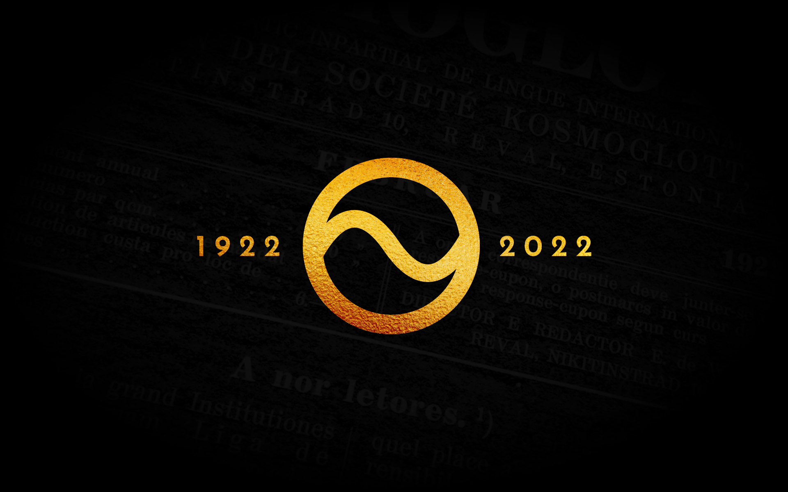

Grammatica Centennial

E. deWahl - 1922
K. Janotta - 1930
F. Haas - 1956
D. MacLeod - 2022
Usage
Iluminar un sol parol por vider un explication

o iluminar mani paroles por vider un naiv traduction.

Selecter tui lingue preferet por li traductiones.

COMPLET GRAMMATICA DE OCCIDENTAL
In li present caderne noi comensa publicar un complet grammatica del lingue Occidental, demandat ja de omni láteres. Pro que noi ne posse editer ti ovre quam brochura separat pro li grand custas de un tal printage, noi inserte it in nor revúe in pluri continuationes. Senior K. Janotta ha prendet sur se li pena composir ti ovre.
Usage
Iluminar un sol parol por vider un explication

o iluminar mani paroles por vider un naiv traduction.

Selecter tui lingue preferet por li traductiones.

Preface
Naturalmen ti unesim elaborate de un «Complet Grammatica» va contener mult lacunes in comparation al desires de multes de nor coidealistes.
Ma certmen un duesim gruppe del adherentes de Occidental, propagandistes, va opiner, que ti ci ovre es tro ampli, tro detal’at e que it involue li dangere que li profan publica va blamar li «desfacilitás», li grand númere de regules e li «exceptiones» del grammatica de Occidental. A ti gruppe de Occidentalistes yo responde que yo ha monstrat per li curt grammatica apparit in li mumerós 56 e 58 de Cosmoglotta, que li grammatica fundamental de Occidental ne es plu long quam li famosi 16 regules de Esperanto; ya, in un laconic grammatica noi va monstrar que li tot grammatica de Occidental, necessi por un hom de bon europan erudition, posse esser printat sur un post-cart. Si on va criticar li voluminositá del present ovre, on va blamar li existentie de international paroles in li lingues natural, de queles li grammatica es mem mult plu voluminosi, quam ti de Occidental.
Un altri objetion es ti que mani autores de Occidental-manuales national ne vell posser trovar un just selection ex li materiale disponibil in li «Complet Grammatica». Un tal timore ne es justificat; nam li base sufficent por li fundamental manuales national ja existe in li «Okzidental-Kursus in 10 Lektionen» de A. Z. Ramstedt e in li «Repetitorie de Occidental» redactet in Occidental; li du es insertet in li german libre de introduction «Occidental, die Weltsprache», quel va apparir circa intra tri mensus.
Senior Wahl ja ha plur vezes monstrat, e in maniere excellent precipue in li articul «Exceptiones e li vive» in nr 43 de Cosmoglotta, que li talnominat exceptiones es un facilisation del lingues por lor usada, por li parlation e comprension de li pensas. «Un lingue ne existe por parlar secun grammatica o logical regules, ma inversmen, tis existe par facilisar li parlada … Un superflui fegularitá fa sentir-se quam insupportabil in li practic vive … Ne li apprension de un [150] lingue es lu essential, ma su usation!!» Talmen Wahl ha egardat in Occidental li leyes del vive, queles es plu flexibil quam tis del mathematica e mecanica. Lass nos egardar que li témpore de apprension de un lingue, e precipue de Occidental, es mult plu curt quam li durada de su usation.
In plu, Esperanto have anc su grand manuales, mem plu ampli quam li present. On mey comparar: «Esperanto, La gramatiko de Dro Zamenhof kun komentaro» de prof. P. Christaller, Stuttgart 1921, 73 pagines; «Esperanto, Sprachlehre» de prof. Dr. Joh. Dietterle, Leipzig 1926, 44 pagines; o mem special ovres: «La Elementoj kaj la Vortfarado» de E. Čefeč, Paris 1911, 64 pagines; «La Esperanta Vortfarado» de Paul Fruictier, Paris 1913, 115 pagines; «Prepozicioj kaj Akuzativo en Esperanto» de A. Mair, Wien 1926, 70 pagines, etc. etc. E anc Ido have su «Kompleta Gramatiko Detaloza» de L. de Beaufront, Esch-Alzette, 1925, 224 pagines.
On apprende Occidental ne solmen por posser leer li lingue; por ti scop li studie de un curt clave suffice. E quam es demonstrat, mult milliones de persones comprende Occidental sin studie anteriori. Ma li adherentes vole ne solmen comprender, ma anc posser usar ti lingue correctmen tam in parlation quam in scrition; e pro to illi besona ne solmen li curt regules pri li paroles gramatical, ma anc regules pri li parol-formation e syntax.
Per su grand contenete just anc in li du ultim punctus, li «Complet Grammatica» va far dispensabil li detal’at studie del lexicos ante usation del lingue. In ti sense li letores mey comprender mi ovre.
Por me e por li altri iniciantes del present ovre esset ductent in prim li desir dar al Comité Explorativ e al Academie un base plu larg por lor explorationes e decisiones, e in secuent li esper que per un tal ovre mult hesitationes, erras, miscomprenses e mislabores de nor collinguanes va esser evitat.
Ja nu, quande solmen un micri part del Complet Grammatica es finit, yo posse dir que it es ne solmen mi ovre, ma anc li resultat del collaboration del seniores Pigal e Deminger, e in unesim rang de senior de Wahl, de quel yo admira plu e plu mult li amplore de su interlinguistic saventies quant plu progresse li elaboration de ti ci ovre. Li collaboration de ti ci seniores esset pri quelc articules tam grand que yo esset quasi solmen li organisator del collaboration.
K. Janotta.
INDEX
- Fonologie
- Alfabet
- Pronunciation
- Accentuation
- Separation sillabic
- Quantitá vocalic
- Textu exercitiv
- Nómines de lítteres
- Flexion
- General remarcas pri li parol-formation
- Desinenties
- Desinenties primari
- Desinenties secundari
- Derivation
- Temas derivatori
- Sufixes [151]
- Composition
- General remarcas
- Assimilation in li composition
- Temas ínseparabil
- Prefixes
- Temas presentic quam determinativ
- Grec prefixes
- Families de paroles
- Orthografie
Mollat sones- Duplic consonantes
- Transcrition del latin paroles
- Transcrition del grec paroles
- Transcrition del non-classic paroles
- Majuscules
- Abreviationes
- Signes non-alphabetic
- Interpunction
- Partes del discurs
- Articul
- Substantive
- Adjective
- Pronómine
- Numerale
- Verb
- Adverbie
- Preposition
- Conjunction
- Interjection
- Sintax
- Metrica
- Corespondentie
I-esim Capitul: FONOLOGIE
A. Alfabet
Li alfabet de Occidental consiste ex 26 simplic lítteres, ad plu ex 2 lítteres apostrofat e ex 8 bilítteres (digrammas):
a, b, c, d, e, f, g, h, i, j, k, l, m, n, o, p, q, r, s, t, u, v, w, x, y, z; l’, n’; ch, eu, gh, ph, rh, sh, th, zz.
Li nómines del lítteres trova se in li parte G del present capitul.
Li alfabet del 26 simplic lítteres coresponde con li alfabetes angles e german. Quam medie de enumeration in libres etc on usa solmen ti 26 simplic lítteres.
B. Pronunciation
1. Vocales
Occidental have 7 vocales: a, e, i, o, u, y, eu. Li unesim 5 es pronunciat quam in german, italian, hispan e slavic lingues.
Angleses mey attenter li pronunciation continental del vocales, it es: a quam in A father o calm; e quam in A vein; i quam in A unique; o quam in D so, plu pur quam in A not, so (sin u succedent); u quam in A rule.
Franceses mey attenter que in Occidental ne existe vocales nasal: an, en, in, on, un = F ane, ene, ine, one, oune; salon = F salone [transcrition: sa-lón]; indic = F ine-dique [ín-dik]; aqua = F a-quoi [á-kwa]; quande = F couanne-de [kwán-de]. Ad plu Occidental u = F ou [u].
Germanes mey attenter que du vocales intersecuent in general es pronunciat separat: aer = D a-ehr [aér], país = D pa-ihs [país], leer = le-ehr [le-ér], leibil = D le-ih-bil [leíbil], ciel = D zi-ehl [tsyél].
y vocalic, quelcvez videt quande li scritor vole usar un ortografie plu latinesc o arcaic, es pronunciat quam i, por exemple: cylindre [tsilíndre], hymne [hi’mne], styr [stir], physica [fi’sika], analyse [anali’se], cyan [tsián], yttrium [i’ttryum]. Pos un vocal e in comensa de un parol anc ante un vocal, y es consonant; su pronunciation es explicat in li sequent articul.
i e u ante vocales in plursyllabic paroles, u pos q anc in monosyllabic paroles es pronunciat tre curt, presc consonantic e ne posse formar propri syllabes; transcrition [y] e [w], p. ex.: ciel [tsyél], lingue [língwe], aqua [ákwa], piano [pyáno]; quam [kwam], que [kwe], quel [kwel], qui [kwi].
ai, au, e eu es diphtongs e es pronunciat [ay], respectivmen [aw] e [euw]: email [emáyl], rauc [rawk], applause [appláwse]; caul [kawl]; Europa [európa], neutral [neutrál].
2. Consonantes
Occidental have 20 simplic consonantes (sin y) e 8 consonantes indicat per digrammas.
In general li consonantes es pronunciat quam in italian con cert modificationes.
In lu sequent es indicat ti consonantes, de queles li pronunciation diverge del italian o have desfacilitás por angleses, franceses o germanes.
c e g ante e, i, y es pronunciat dental, respectivmen sonor-sibilant, it es c = [ts]; g = g in D Page, Loge, Gelee, j in frances; transcrition [ž]. In omni altri casus c e g es pronunciat guttural; transcrition [k], respectivmen [g]. Con h li lítteres c e g forma li digrammas ch e gh, de queles li pronunciation es indicat in infra.
h es sempre pronunciat quam in german. Li digrammas ch, sh etc es tractat in infra.
j es egal a j in A jazz, a dg in D Budget e F budget, transcrition [dž]: januar [džanwár], conjugation [kondžugatsyón].
q es pronunciat quam k: banqero [bankéro], acquisition [akkwisitsyón].
s have du pronunciationes; (a) it es sonor («leni», A voiced, D stimmhaft, weich; transcrition [s]) inter du vocales, p. ex.: cose [kose], rose [rose], position [positsyón], conclusion [konklusyón], usa [úsa], in plu in fine de parol, ínmediatmen pos accentuat vocal, si on posse etymologicmen supposir que un vocale secue li s: frances(i), ples(er), país(e), pis(e), precis(i), omni-cos(e), ros(e), poros(i), repos(e), abstrus(i), confus(i), mus(o), obtus(i), refus(a). Ma (b) in omni altri casus s es pronunciat surd (i. e. «fort», A voiceless, D stimmhaft, scharf; transcrition [ss]), p. ex.: sol [ssol], grotesc [grotéssk], person [perssón], épos [époss], ómnibus [ómnibuss], schisma [ss-khíssma], egoism [egoíssm]; anc li pluralic s: patres [pátress], veritás [veritáss], unités [unitéss], vertús [vertúss], omni ss: masse [másse] etc; e li paroles finient per vocal+s, queles ne permisse supposir un secuent vocale, p. ex.: es [ess], li present de esser; li pronomines les [less], nos [noss], vos [voss]; li preposition pos [poss] quam abbreviation de L post; li prefixes des-, dis-, mis-, p. ex. desinfecter [dessinfektér], disaffection [dissaffektsyón], misalliantie [missallyántsye]; etc. Germanes mey attenter que anc li combinationes sch, sp e st es sempre pronunciat con ss, do [ss-kh], [ss-p], [ss-t] (e ne quam in german [sh], [sh-p], [sh-t]); do schema = [ss-khéma], spirale = [ss-pirále], statue = [ss-tátwe]; anc li s initial es sempre surd secun li regul (b): sala [ssála], self [sself], signal [ssignál], soda [ssóda], sud [ssud], symbol [ssümból].
t deveni un sibilant in li finales -tia, -tie, -tion; transcrition [ts]: scientie [sstsyéntsye]; nation [natsyón]. In ceteri li pronunciation de t es li sam quam in omni altri lingues europan.
v es sempre pronunciat quam in villa, nequande quam f, quo mey egardar precipue li germanes.
w es pronunciat quam in angles, it es un u presc consonantic quam in A water, transcrition [w]: watt [watt], west [west].
x = [kss], p. ex. extra [éksstra]; inter vocales x posse esser pronunciat anc [gs]: exemple [egsémple].
y pos un vocal e in comensa de un parol anc ante un vocal es pronunciat i consonantic quam in A yes e quam j in german [154] e italian, transcrition [y], p. ex.: yes [yess], rayon [rayó], antey [ántey]. Pri li vocalic y vide li articul precedent.
z = [ds]: zefir = [dsefír], bazar = [badsár].
ch quam ch in francés e sch in german; transcrition [sh], p. ex. chambre [chámbre], chines [shinés], brochura [broshúra] machine [mashíne]. Ante consonantes o juntet con y, o in li síllabe arch e pos s, ch es pronunciat quam k, p. ex. yacht [yakt], chromometre [kronométre], psicolog [psikológ], architect [arkitékt], monarchist [monarkíst], schisma [skíssma].
gh — g guttural, ante e, i, y; p. ex.: ghesha [gésha], ghepard [gepárd], ghetto [gétto], ghibellino [gibelíno].
ph = f in paroles de grec orígine, p. ex. fotograf = photograph [fotográf]; fosforescer = phosphorescer [fossforesstsér].
rh = r in paroles de grec orígine, p. ex. reumatic = rheumatic [römátik].
sh es pronunciat quam ch in frances e sch in german; transcrition [sh], p. ex. shrapnell [shrapnéll].
th = t in paroles de grec orígine: teosof = theosoph [teossóf]; litograf = lithograph [litográf]; rytme = rhythm [rütm].
zz = [ttss], p. ex. pezze [péttsse], plazza [pláttssa].
C. Accentuation
-
Li accentu tonic es situat ordinarmen sur li vocal ante li ultim consonant. In li exemples secuent li accentu es indicat per grass litteres (a, e …): crater, doctor, gallin, general, lateral; colere, farine, honore, machine, ordinari, semestre, sinistri, turbine; lauda, meuble; linea, Austria, diabolerie, galanterie, familie, libreria, observatoria, statue; felici, matrice, judicie; telegraphar, il telegrapha, il ha telegraphat; constructer, yo constructe, yo ha constructet; il nomina, yo considera, it diminue, it flammea, il logia, noi mersia.
-
Li finales -bil, -ic, (si it es pronunciat [ik]), -im, -ul es ínaccentuat e attrae li accentu al precendent syllabe, mem si li precedent syllabe es un de ti quar syllabes (finales atonic): labil, nobil, possibil, stabil; archaic, etheric, heroic, hyperbolic, lexico, laconic, mathematica, prosaic, radica, sideric, it significa; anim, bellissim; intim, proxim, triesim, ultim; fistul, gurgul, mandul, nebul, popul, regul, vestibul, vocabul, il calcula, yo postula; herculic, articul, pedicul, perpendicul.
-
Li finale -s del plurale e li finales -men e -um es ínaccentuat e ne have influentie al accentu del céteri parol-parte (finales enclitic): doctor, doctores; linea, lineas; statue, statues; lexico, lexicos; vocabul, vocabules; hyperbolic, hyperbolicmen; rapid, rapidmen; respectabil, respectabilmen; sobri, sobrimen; tal, talmen; album, circum, herbarium, maximum, opossum, plenum; albums, herbariums, etc. Li finale -men es li accurtat L «mente» (= in li sense, in li qualitá), do li adverbies format per -men es quasi composites; ergo -men posse reciver un accentu secundari secun li 5-m articul in infra: respectabilmen, sobrimen.
-
Paroles ne havent vocales ante li ultim consonant es accentuat sur li unesim vocale: die, deo, noi, tui, yo ea, (ma: ear), yo lee (ma: leer), yo trae (ma: traer), brui, boa, pie, via; plurale: dies, deos, etc.
-
In paroles composit (anc in historic composites) chascun parte posse haver un accentu tonic secun li regules superior. Si li unesim parte (li parol determinativ) es un substantiv, adjectiv o li prefix negativ ín-, it recive li accentu principal (accentu primari); si it es un particul, it recive o nequel accentu o un accentu accessori (accentu secundari). Li duesim parte (li parol determinat) recive in li ultim casu li accentu primari. Exemples (accentu primari per grass litteres: á, é … ; accentu secundari per normal litteres: á, á …): férrovía (ex ferro-via); málhumorát (ex mal-humorat); ínpracticábil (vide in in li IV-m capitul inter li prefixes). Ma: rétrovenír (ex retro e venir), yo rétrovéni; ápplicár, yo applíca; áttraér, yo attráe; índicár, yo indíca; cóntradír: yo cóntradí.
-
In li casus ne conform al regules supra-citat, li accentu es scrit (accentu graphic): bontá, mamá, qualitá; allé, bebé, café, canapé, cité, cupé, defilé, epopé, idé, livré, moné, societé; demí, logí, mersí; buró, depó, numeró, paletó, plató; cacatú, marabú, menú, parvenú, revenú; cacáo, muséo, heróe, revúe; abdómin, ómine, (pro)nómine, órdine, págine, rícino, término, órden; céteri, cólera, éther, génere, ínter, líber, númere, préter, púer, púber, sídere, súper, témpore, tónnere, vésper; cánabe, fílice, hypérbol, límite, spíritu, zóbol; in contrari al 2-m e 3-m articul in supra: amíc, eríca, formíca, urtíca; ínterim, sublím; parfúm; in contrari al regul pri i pos a in li parte B, articul 1: Haíti, país. In li plurale resta li accentu scrit: mamás, idés, logís, depós, menús; muséos, heróes; númeres etc.
-
On posse usar egal qual accentu graphic: é, è, ê, ma li accentu acut (é) es recommandat in prim, in duesim rang li accentu grav (è), in contra que li accentu circumflex (ê) deve esser evitat secun possibilitá. U accentus ne es accessibil (precipue in majuscules), on posse anc posir un apostroph pos li vocale, p. ex. prono’mine, caca’o, numero’, PRONO’MINE, CACA’O, NUMERO’.
-
On posse omisser li accentu graphic in paroles tre frequent e familiari quam amic, femina, inter, pagine, parfum, preter, super etc. In secundari rang on posse omisser it in li casus u it sta sur un vocale secuet de un o pluri consonantes: [167] abdomin, erica, genere etc. In triesim gradu on posse omisser li accentu graphic anc in ti casus u it sta sur un vocale secuet de un altri vocale: cacao, museo, heroe. On mey, si alquam possibil, evitar li omission del accentu si it sta sur li ultim vocale, do ne «qualita», ma «qualitá»; ne «alle», ma «allé»; ne «logi», ma «logí». In fin, u accentus absolutmen ne es accessibil, 0 u on nequam vole usar li remedie del apostrophes secun li 8-m articul in supra (precipue in majuscules, in titules, affiches etc), it es permisset totalmen elisionar li accentus. In vocabulariums li usation del accentus graphic es strict obligatori.
-
Li accentu graphic posse esser usat anc por distin’er paroles homonym, p. ex. te (pronómine), té (trincage); si (conjunction), sí (affirmation pos negation); in- (prefix de direction), ín- (prefix de negation) p. ex.; inscrit = scrit in alquo, ínscrit = ne scrit; compara ti prefixes in li IV-esim capitul. Sammen on posse distin’er per accentu graphic li pronómines interrogativ del pronómines relativ; p. ex.; quánde? quí? quó? ú?: quande, qui, quo, u. On posse usar li accentu mem sur monosyllabic paroles con vocalic finale (precipue presentes e imperatives) por sublinear lor importantie in li phrase (accentu rhetoric), p. ex.: dá, dí, fá, stá; yo dá, yo dí, yo fá, yo stá; Archimedes dí: «Dá u yo stá, e li terre mover yo vá». Lu sam es valid por composites con tal monosyllabic determinat (duesim) partes: yo addí, contradí, descrí, refá, transdá; sammen li nómines del dies semanal: soledí, lundí, mardí, mercurdí, jovedí, venerdí, saturdí.
-
Germanes mey egardar li accentuation deviant de lor custom in paroles quam li secuent: doctor, motor, stabil, mobil etc.
-
Franceses mey attenter precipue li accentuation in paroles finient per -ic: electric, physic etc.
D. Separation syllabic
Li parol-partes juntet per composition es separat in parlation e scrition secun li modo de composition: atmo-sphere (e ne atmos-phere), dis-tribution (e ne di-stribution), abs-traer (e ne ab-straer), con-spiration (e ne cons-piration), con-stant (e ne cons-tant), su-specter (e ne sus-pecter), sus-pender (e ne su-spender), tran-spirar (e ne trans-pirar), trans-portar (e ne tran-sportar), ob-stacul (e ne obs-tacul), obstruction [168] (e ne obs-truction), re-stituer (e ne res-tituer), tran-scrir (e ne trans-crir).
Li altri parol-partes es separat secun li regules secuent:
1-m un singul consonant inter du vocales e de un gruppe de consonantes inter du consonantes li ultim consonant appartene al syllabe secuent: ba-na-li-tá, va-ria-tion, ve-ri-tá; pen-dul, ver-nis-sar, suc-ces-sar, sig-nal.
2-m ínseparabil e ergo valid quam un unic consonant es li mutes (c, g, t, d, p, b) e labiospirantes (f, v) juntet con liquides (l, r), do it es li pares consonantic bl, cl, dl, fl, gl, pl, br, er, dr, gr, pr, tr, vr,: bi-ble, ta-cle, spin-dle, va-fle, spin-gle, po-ple, cu-cum-bre, ma-crel, qua-drat, mi-gren, le-pra, split-tre, po-vres-se. Germanes mey egardar que sp e st ne es ínseparabil in Occidental, do on scri: mes-pil, ves-tir.
Li regules superior es valid por li pronunciation e have importantie por constatar li quantitá del syllabes secun li regules dat in li secuent parte E; ma in scrition e parlation un partition quelcunc es tolerat: atmos-phere, si-gnal, quad-rat etc. Ma in printa it es recommendabil applicar li regules superior por li syllabic separation.
E. Quantitá vocalic
Por constatar li quantitá del vocales on deve distin’er syllabes «apert» e «clus»; apert es teles queles fini per un vocale, p. ex.: ca-ra, fra-se, pa-tre; clus es teles queles fini per un consonant: car-re, tas-se, ves-tri.
Li vocales accentuat in syllabes apert es long (marcat: â, ê …): idê, marabû, herô-e, câ-ra, frâ-se, râ-me, â-nima, pâ-tre, mâ-nu, juvelê-ro, tâ-ble, lê-pra, bî-ble, pô-ple. Li vocales accentuat in syllabes clus es curt (marcat: à, è …): càr-re, tàs-se, ràm-me, sès-tra, princès-sa, lùc-te, metàll. Si li accentu tonic es situat sur un clus syllabe final, li vocale es tamen long, si li syllabe fini per un unic consonant: natiôn, rigorôs, datîv, nationâl; ma li son duplic de x vale quam du consonantes e accurta pro to li vocale precendent: stràx, suffìx, suffìxes.
Li vocales ínaccentuat es sempre demí-long o curt; i e u in quelc casus es mem consonantic quam y e w, qualmen es monstrat in supra che li pronunciation del vocales (B. 1).
Li frequent monosyllabic paroles grammatical (articul, pronómines, prepositiones, conjunctiones) es curt: lì, ùn, nòs, lès, dè, còn, è, mà, què, ès, hà, và, pèr, prì etc.
F. Textu exercitiv
Remarca: Li accentu tonic del curt vocales es marcat in li secuent transcrition per un accentu grav: à, è … Li long vocales accentuat es representat per un accentu circumflex: â, ê … Un eventual accentu primari es indicat per grass litteres à (curt), â (long) …
Textu:
Li differentie radical inter Occidental e omni altri lì dìf-fe-r**è**n-tsye ra-di-kâl ìn-ter òk-tsi-den-t**â**l è òm-ni àl-tri systemas de lingues auxiliari consiste in li ssüs-tê-mass dè lìn-gwess aw-ksi-lyâ-ri kon-ssìss-te ìn lì regulari derivation del deverbal substantives e re-gu-lâ-ri de-ri-va-tsyôn dèl de-ver-bâl ssub-sstan-tî-vess è adjectives per li suffixes international -ion, -iv, ad-žek-tî-vess pèr lì ssuf-fìk-sess ìn-ter-na-tsyo-n**â**l yôn, îv, -or, -ura adjuntet al thema perfectic del verbes latin, ôr, û-ra ad-žun-têt àl tê-ma per-fèk-tik dèl vèr-bess la-tîn, in quel lingue existe plu quam 300 irregulari ìn kwêl lìn-gwe eg-sìss-te plû kwâm trî-cent **ì**r-re-gu-lâ-ri verbes. Ti desfacilitá ha esset tro grand por omni vèrbess. tì dèss-fa-tsi-li-t**â** hà es-sêt tro grànd por òm-ni inventores de international lingues; pro to illi in-ven-tô-ress dè ìn-ter-na-tsyo-n**â**l lìn-gwess; prò tò ìl-li circumeat ti obstacul. Solmen de Wahl ha dat li tsìr-kum-e-**â**t tì ob-sstâ-kul. ssôl-men dè vâl hà dât lì solution scientific. sso-lu-tsyôn sstsyen-tî-fik.
G. Nómines de lítteres
Quam nómines de lítteres li secuent sembla max convenent: a = â, b = bê, c = tsê, d = dê, e = ê, f = èf, g = žê, h = hâ, i = î, j = džî, k = kâ, l = èl, m = èm, n = èn, o = ô, p = pê, q = kû, r = èr, s = èss, t = tê, u = û, v = vê, w = dûplic vê, x = ìkss, y = üpssîlon, z = dsêd; l’ = èlye, n’ = ènye, ch = tshâ (anc tsê-hâ), eu = ö (o anc ê-û), gh = gê (dûr) (o anc žê-hâ), ph = latîn fî (o anc pê-hâ), rh = latîn rô (o anc èr-hâ), sh = shâ (o anc èss-hâ), th = latîn têta (o anc tê-hâ), zz = tsètt (o anc dûplik dsêd).
H. Classification del consonantes.
Tabelle del simplic consonantes
| Secun li loc de articulation | Secun li maniere del articulation | ||||||
|---|---|---|---|---|---|---|---|
| mutes (o occlusives o explosives) | constrictives (o continues) | semivocales | |||||
| spirantes (o fricatives) | liquides (o vibrantes) | nasales | |||||
| tenues (o surdes o fortes) | medies (o sonores 0 lenes) | surdes (o fortes) | sonores (o lenes) | ||||
| labiales | p | b | f | v | — | m | w |
| dentales | t | d | ss; sh | s; ž (ge) | l, r | n | — |
| gutturales | k (c, q) | g (ga …) | kh (archi) | — | — | (a)ng(ul) (a)nk(er) | y |
| glottal | — | — | h | — | — | — | — |
On nomina anc sibilantes: ss, s sh, ž (ge); aspirate: h; alveolares: n, r (li ultim si it es format per li lingual punta); uvulare: r (si it es format per li uvul).
Li lítteres ne contenet in li tabelle corresponde a sones composit (p. ex.: z = d + s), o illi es amollat, palatales: l’ [ly], n’ [ny]. Li lítteres c, g ante e, i (pronunciation [ts], [ž]) es anc nominat palatales.
II-esim Capitul: FLEXION
A. General remarcas pri li parol-formation
Un parol posse consister ex divers elementes, quam p. ex. nota-librette, in quel on distin’e:
1-m du radicas: not e libr,
2-m du desinenties: a, e,
3-m un suffix (derivativ): ett.
Li max important parte del paroles es lor thema. Li thema es li rest de un parol pos elimination del ultim desinentie o ultim suffix. Ma li radica de un parol es su essential parte, un element írreductibil, quel servi a formar li paroles per se self o per juntion con desinenties, suffixes, o altri radicas.
Li secuent exemples va explicar li divers términos del parol-formation.
Li parol «nota-librette» consiste ex 5 elementes: not-a-libr-ett-e. It es un parol composit, consistent ex du paroles, li parol determinativ nota e li parol determinat librette. Si on exclude li radicas not- e libr- resta li morphemas, it es li desinenties (ci a e e) e li suffixes (ci ett). Si on exclude li desinenties, resta li thema del parol; ergo nota-librett es li thema del tot parol, not es li thema del parol nota, librett es li thema del parol librette. Noi vide que che nota li radica e li thema coincide, i. e. not.
Li paroles «amar, amator, amore» have li sam radica am. In «amar» li thema es ama; ci r es li formativ suffix (li desinentie) quel forma li infinitiv, e -a es li formativ suffix (li desinentie) per quel li thema ama es format del radica am. Li thema ama es anc li form del presente de «amar» e pro to on nomina ama li thema presentic del verbal radica am. In li parol «amator» -or es li suffix e amat li thema format ex li radica am (per li formativ suffixes -a e -t). Li thema amat es li thema del latin participie perfectic e es nominat pro to thema perfectic. In «amore» li suffix es -ore e li thema es am; por distin’er it del thema presentic e del thema perfectic, on nomina it thema primitiv. Pro que li thema primitiv am es ne plu decomposibil; it es anc li radica. Ma ne chascun thema primitiv es anc un radica, quam monstra li secuent exemple.
In li parol «definition» noi distin’e li suffix derivativ -ion, li thema perfectic definit, li thema presentic defini, li thema primitiv defin, li radicas de e fin, li suffixes formativ i e t. Do ci li thema primitiv consiste ex du radicas.
Secun li parol-elementes noi distin’e tri species de parol-formation:
1-m li flexion per desinenties,
2-m li derivation per suffixes,
3-m li composition per paroles determinativ.
Un parol format per derivation (it es per adjuntion de un suffix a un thema) es nominat un «derivate»; li thema de ti derivate posse esser un radica o self un derivat o un composit. Li nómine «composit» es dat a un parol format per composition de du o pluri paroles; ti paroles posse esser self simplic paroles (radicas o radicas plus desinentie) o derivates o composites. P. ex. «tippmachine» es un composite, de quel li componentes es tipp e machin. Ma «tippist» es un derivat, pro que -ist ne es un parol, ma un suffix addit al parol tipp. Li parol «exterritorialitá» es composit e derivat; su componentes es li paroles ex (preposition) e territorial (adjective), a queles es juntet li suffix -itá. «Territorial» es derivat del thema territori (del parol territoria) per li suffix -al. Territori es ne plu analysabil in Occidental, ma in latin it deriva-se del radica terr- per li suffixes -it e -ori. Li parol «ínfinitesimal» consiste ex li prefix ín (parol determinativ), li radica fin, li desinentie i e li suffixes t, esim, al (do: in-fin-i-t-esim-al).
Li derivation e li composition es tractat in li secuent capitules (III-m e IV-m capitul). Li present capitul contene li flexion, i. e. li parol-formation per desinenties.
B. Desinenties
Li flexion es fat per li desinenties, i. e. grammatical finales, queles es usat por euphonisar o preciser li substantives, adjectives, adverbies e verbes. In li finales grammatical noi distin’e du gruppes:
- finales queles es juntet solmen al thema primitiv, i. e. li desinenties primari: -a, -e, -i, -o, -u, -um; nominat anc «nuanceant finales»;
- finales queles es anc o solmen juntet al thema primitiv plus un desinentie primari, i. e. li desinenties secundari: -r, -s, -men, -li.
In li derivation e composition li desinenties secundari es sempre eliminat, li desinenties primari max sovente.
Remarca: On nomina sovente li desinenties anc suffixes, i. e. suffixes de flexion. Advere precipue li desinenties -li e -men have un aspect quasi de suffixes (derivativ) (pro esser etymologicmen originant del paroles A like, resp. L mens). Ma secun li definition quel noi dat al parol «desinentie», i. e. parol-formative ne permissent un ulterior derivation con li suffixes annexibil al thema primitiv, o per altri paroles «morphema ne formant un thema primitiv», secun ti definition anc -li e -men es desinenties e lor annexion es un «flexion».
C. Desinenties primari
(1) -a. Ti desinentie significa in prim li sexu feminin, i. e. li sexu generic del extension del rasse e ergo in sense metaphoric [173] alquo extendet, un activitá, loc, témpore, alquo general, universal, collectiv, generic, li resultat de un action, ma anc altri paroles secun usu international.
P. ex.: (a) sexu feminin: americana, amica, bella, bellissima, cavalla, dormienta, femina, filia, francesa, germana, primadonna, richa, russa, studenta e li derivates per li suffix -ess-a (ples vider les in li III-m capitul, parte B);
(b) activitá: li derivates per li suffix -da (vide in infra);
(c) loc: cámera, plazza, strada, via, e li derivates per li suffixes -i-a, -eri-a, -ier-a, -ori-a (vide in infra);
(d) témpore: carema, clocca, epoca, era, pasca, e li derivates per -da, mentionat ja supra che (b), queles have sovente anc li signification del témpore del activitá;
(e) alquo extendet, general, universal, collectiv: alinea, aqua, cólera, firma, gala, irredenta, liga, linea, pasta, posta, pressa, publica, republica, saliva, secta, tara, terra, terracotta, e li derivates per li suffixes -al’a e -ic-a;
(f) un resultat: li derivates per li suffix -ura, (vide les in infra); p. ex. dressura, sculptura etc.
(g) altri paroles: boa, cornea, eríca, formíca, lama, paria, salva, sepia, soda, urtíca, sofa; e precipue li paroles grec finient per -ma con li derivativ thema finient per -mat (vide in infra in li III capitul, parte A), p. ex. asthma, dogma, magma, panorama, problema, rheuma, systema, thema.
Li finale -a es usat anc por li thema presentic del verbes finient in li Infinitive per -ar e anc por li verbal substantives derivat de ti verbes e identic con lor thema presentic; tel substantives expresse un singulari eveniment, un curt, simplic action; p. ex.: li pluvia del verb pluviar, li pecca de peccar, li pensa de pensar.
(2) -e. Ti desinentie es usat:
(a) quam general, neutral finale, sovente ínobligatori, del substantives (ne havent un altri desinentie) sin special signification, pro euphonie o distin’tion de simil paroles, precipue por distin’er li substantives fro li adjectives;
(b) quam finale de adjectives de queles li thema fini per -i;
(c) quam finale del participial adverbies activ.
Exemples: (a) Substantives: general o generale, lamp o lampe, uniform o uniforme. On usa avantageosimen -e sempre por li substantivic derivates per -al, -in, -iv e anc -ari, queles da in general un sense adjectivic: centrale, circulare, directive, finale, gelatine, locomotive, normale, singulare. In [174] mult casus li desinentie -e es sempre usat pro motives de euphonie o pronunciation: astre, avantage, centre, fibre, image, matrice, patre, salice, theatre, temple, voce; li plurales con li suffix -age: foliage, plantage; li derivates per li suffix -ie (vide in III, B); anc familie, lilie, heróe, revúe, in plu in li plurale, vide in infra che -s.
(b) Adjectives: ebrie o ebri, pie, proprie o propri, rancie o ranci, sobrie o sobri, varie o vari; ti -e appari sempre in li derivates de ti adjectives per li suffixes -tá e -té (vide in infra in III. B).
(c) Participial adverbies; adjectivic participie: cantant; adverbial participie: cantante (ne: cantantmen); p. ex.: Senior Paul intrat cantante.
Li finale -e es usat anc por li thema presentic del verbes per -er e por lor verbal substantives: lucer, (li lamp) luce, li luce (del lamp); conflicter, illi conflicte, lor conflicte.
(3) -i. Ti desinentie significa adjectives, con exception de tis queles have li finale thematic -i (vide in supra che -e); on usa ti desinentie ne obligatorimen, ma solmen in cert casus. On di sempre: dulci, feroci, felici, sagi, savagi, vivaci, pro li pronuneiation del g e c, quo vale por omni themas finient per g e c sibilant; sovente pro euphonie: altri, albi, omni, pigri, salubri; sempre con li suffixes -ari e -ori: regulari, imperatori; ma anc in altri casus por evitar un confusion con li infinitive: amari, avari, fieri, sinceri.
Do on mey usar ti finale solmen, si it es necessi; it appari sovente quam vocale euphonic in li derivates per -tá e -té: bon, bontá e bonitá, quant, quantitá (vide in infra che li suffixes -tá e -té).
Li vocal -i es anc li finale presentic del verbes per -ir: abolir, aboli; finir, fini. Ma lor verbal substantives ne fini per -i, ma per -e o -ie: fine, perde, dormie.
(4) -o. Ti desinentie significa in prim li sexu masculin e in sense translatet lu concret, material, special, individual. Do ti desinentie es quasi li complement del desinentie -a. Ma it ne es necessi junter ti finales a omni vivent entes, p. ex. it ne es necessi dir patro e matra pro que patre e matre es ja definit in su sexu per li sense self.
Exemples:
(a) sexu masculin: americano, amico, bello, bravo, cavallo, dormiento, filio, franceso, germano, richo e li derivates per -ario e -ero (vide in infra in III. B).
(b) altri paroles: brutto, cacáo, cargo, caseo, conto, corpo, cosmo, cranio, dynamo, foco, fresco, hordeo, humo, lago, lexico, muséo, posto, radio, tempo, término, torso, veto etc. e li derivates per li suffix -ier-o (vide in li Ill-m capitul).
(5) -u. Ti desinentie significa alquo abstract, neutri, un relativitá, un statu factic con li thema perfectic (v. III. A): acter, act, actu; proceder, process, processu; star, stat, statu. Compara anc in infra in li derivation (III. B.) li suffix -at-u.
(6) -um. Ti desinentie (ínaccentuat) have un signification concret e deriva-se del latin finale -um del substantives neutri del 2-m declination: album, maximum, minimum, pensum, plenum, serum e li derivates per -ari-um (vide in li III-m capitul). Que -um es un desinentie, on remarca per li derivates e composites u it desappari, p. ex.: maximal, minimal, plenari, serotherapie etc. On posse junter ti finale anc a chascun thema adjectivic por expresser li general idé de un qualitá: li bellum (= lu bell; vide VI. A.), i. e. li idé de bell, alquo bell; sammen li bonum, li novum, li verum etc.
D. Desinenties secundari.
(1) -li. Ti desinentie (derivat de A -ly) es li ínobligatori finale del adverbies derivat de non-adjectives, anc participies e numeralies; p. ex.: noctli (= in nocte), unesimli (= in unesim range). Ma preferibil, pro plu ímmediat comprension, es sempre li analytic maniere de expression, p. ex.: in sam témpore (samtemporli), per pedes (pedli), in part (partli), per hasard (hasardli), donar quam un rey (… reyli), in fact (factli), in fine, o finalmen (finli).
(2) -men. Ti desinentie (derivat de L mens, correspondent a F ment, I S P mente, Prov. men, do scrit quam in provenzal) es li ínobligatori finale del adverbies derivat de adjectives. It es enclitic; to es, it ne transloca li accentu del parol a quel it es juntet; vide che Pronunciation I. B. Exemples: clar: clarmen, ver: vermen; egalmen, lentmen, naturalmen, sammen, systematicmen; ordinar(i)men, regular(i)men; festivmen; ambitios(i)men, conscientios(i)men; equitabilmen, esperabilmen; notorimen, obligatorimen; constantmen, conscientmen, evidentmen, independentmen, recentmen; detal’atmen, repetitmen, conossetmen (= quam it es conosset). Anc ci li analytic stylisation in cert casus es plu clar e plu elegant, p. ex. propulset motoricmen = … per motor; illuminat electricmen = … per electric(itá) etc.
(3) -r. Ti desinentie indica li infinitive e es usat solmen pos li vocale del thema presentic; támen it ne posse esser regardat quam suffix, pro que on ne posse formar derivates del infinitive; exemples: pluvia, pluviar; pensa, pensar; luce lucer; conflicte, conflicter; compati, compatir; demoli, demolir; fini, finir. On ne vive por manjar, ma on manja por viver. — Li question quel desinentie es annexet al thema primitiv del verbes por formar li thema presentic (esque a, e, i) e in plu li infinitive etc, appartene al derivation; ergo ti thema es tractat in li secuent capitul (III. A.). Compara anc in infra che li «Verb» (Vl-m capitul, parte F).
(4) -s. Ti desinentie significa li plurale e posse esser annexet ne solmen al finales vocalic, ma anc al themas finient per consonantes: rosiera, rosieras; femina, feminas; amica, amicas; lingue, lingues; patre, patres; germano, germanos; annu, annus; mensu, mensus; logí, logís. — Pos li themas finient consonanticmen on prefere intercalar -e-: nation, nationes; uniform, uniformes; cavall, cavalles; parol, paroles; film, filmes; sport, sportes.
On ne intercala -e pos c e g, por ne mutar li pronunciation dur de ti consonantes; do: amics, bancs, blocs, boccs, discs, flancs, floccs, moscs, paccs, plancs, roccs, storcs, truncs, turcs, verucs, vessics; diphthongs, flags, fugs, hags, plugs, rugs, segs, vergs etc; ma it es permisset dir: amicos (in sense commun), bancas, bloccos, boccas, discos, flancos, floccos, moscas, paccas, plancas, roccas, storcos, truncos, turcos, verucas, vessicas, diphthongos, flagas, fugas, hagas, rugas, segas, vergas etc, o minu recommandabil per un remedie orthographic (compara anc li V-m capitul): amikes, bankes, blokes, bockes, flankes, flockes, moskes, packes, plankes, rockes, storkes, turkes, verukes, vessikes, diphthonghes, flaghes, fughes, haghes, plughes, rughes, seghes, verghes etc. Ma in vice de pisc, piscs (o piscos, o piskes), it es forsan preferibil dir (analog a fasce, fasces): pisce, pisces (compara I pesce, pesci, S pez, peces, P peix, peixes). It es un punctu del programma del Occidental-Academie recommendar un de ti divers possibilitás formar li plurale del substantives finient per c, g.
Pri li accentu ante li pluralic -s vide in supra in li I-m capitul, parte D.
III-esim Capitul: DERIVATION
A. Themas derivatori
1. Thema primitiv
On obtene li thema primitiv de un parol per omission del desinenties; si un parol have nequel desinentie, it self es su thema primitiv con poc exceptiones indicat in plu infra.
Exemples de derivation del thema primitiv: (parol:) glacie, (thema:) glaci-, (derivates:) glacial, glaciatri, glaciero, glacin, glacios; (parol e thema:) cav, (derivat:) cavitá; (parol:) trottar, (thema:) trott, (derivates:) trottero, trottuor; caler, cal-, calid, calore; capir, cap-, capaci.
Con li thema primitiv denominal (it es de substantives, adjectives, pronómines e numeralies) es juntet li secuent suffixes nominal, it es teles queles forma nomines: -ach, -ac-i, -ade, -age, -al, -al’a, -an, -ant, -ard, -ari, -ari-o, -ari-um, -astr, -at, -atr-i, -at-u, -cunc, -en, -ell, -ent, -er(-a, -o), -eri-a, -eri-e, -es, -esc, -esim, -ess, -ess-a, -est, -ett, -ia, -ic, -ic-a, -ic-o, -ide, -ie, -ier, -il, -il’, -in, -in’, -ism, -issim, -ist, -it, -ite, (-li), (-men), -n, -oid, -on, -or-e, -os, -ott, -plic, -tá, -té, -uch, -un, -uor, -ut.
Ultra tis es usat con li thema primitiv denominal li suffixes verbal (enumerat ci con li adjuntet desinentie -r del infinitive): -a-r, -ea-r, -esce-r, -ett-a-r, -ica-r, -ifica-r, -ija-r, -ill-a-r, -isa-r, -iza-r.
Al thema primitiv deverbal (it es de verbes) es juntet li secuent suffixes nominal: -ac-i, -agi-e, -al’a, -ard, -er, -eri-a, -eri-e, -ett, -id, -il, -ist, -or-e, -uor.
Al thema primitiv deverbal es juntet li secuent suffixes verbal: -ach-a-r, -ett-a-r, -ill-a-r, -ott-a-r.
Quelc substantives de latin orígine finient per li suffix -tá have un thema derivativ finient per -tat, por li derivates per li suffix -iv, p. ex.: autoritá, autoritat-iv; paritá, paritat-iv; qualitá, qualitat-iv; quantitá, quantitat-iv. Li suffix -iv es juntet ordinarimen al thema perfectic, do ti themas finient per -at es ci regardat quasi quam themas perfectic (vide in infra li articul 3). Altrimen por li parolformation per altri suffixes li vocale -a del suffix -tá es ejectet: autoritá, autorit-ari; homanitá, [191] homanit-ari; necessitá, necessit-ari; pietá, piet-ist; pro-prietá, propriet-ario; sanitá, sanit-ari; vanitá, vanit-ari. Lu sam es valid por paroles finient per -tá queles es derivates in latin, ma ne teles secun li systema de Occidental: (a) thema finient per -tat: caritá, caritativ; facultá, facultativ; (b) thema finient per -t: etá, etos.
Li max mult substantives de grec origine have un special thema derivativ: p. ex. li grec substantives con li thema flexional finient per -ma (dogma, plural: dogmas) have un thema derivativ finient per -mat- (dogmat-ic, -ica, -ico, -icism, etc). Tel paroles de general usu es: aroma, asthma, clima, dogma, drama, emblema, enigma, phlegma, prisma, problema, programma, schema, symptoma, systema, thema; poy li substantives plu special o plu rar: anathema, axioma, cataclysma, derma, diaphragma, erotema, ex[anth]ema, (ana-, dia-, epi-, mono-, penta-, tele-)gramma, idioma, magma, malagma, paradigma, phantasma, plasma, pneuma, pragma, rheuma, soma, spasma, sperma, stigma, struma, trauma. Precipue remarcabil es li formationes per -oma, significant tumores e úlceres: atheroma, -tosi; carcinoma, -tosi; glaucoma, -tosi; sarcoma, -tosi etc.
Scientic grec paroles abstract, finient in -se, -sie, -x (-cs), -xe (-cse) e -xie (-csie) forma li thema derivatori por li adjectives etc, mutante -s in -t (-x in -ct), e sovente li nómines de actor forjettante li suffix -ic del adjective: ana- (cata-, para-)lyse, -lytic (ma: -lysar); anti- (hypo-, meta-, paren-, syn-)the-se, -thetic; apoca-lyp-se, -tic; apo- (dia-, ec-)stase, -static (anc scrit, ma falsmen: exta-se, in vice de ecstase), apostat; aske-se, -tic, -t; ataxie, atactic; cateche-se, -tic, -t; chloro-se, -tic; empha-se, -tic; ellipse, -tic, epilep-sie, -tic; gala-xie, -ctic; gene-se, -tic; here-sie, -tic; hypno-se, -tic, -tisar, -tisero, -tism; narco-se -tic, -tisar; neuro-se, -tic; phrene-sie, -tic; poe-sie, -tic, -t; prophyla-xe -ctic; sarco-se, -tic; symbio-se, -tic; syntax, syntactic. Precipue remarcabil es li formationes secuent: dia- (pro-)gno-se, -stic, -sticar; energ-ie, -etic (ma anc: -ic); phanta-sie, -stic, -st, -sma, -siar; theor-ie, -etic, (ma anc: -ic).
2. Thema presentic
Li thema presentic (nominat anc thema verbal) es sempre identic con li presente del indicative; do on obtene it per omisser li desinentie -r del infinitive. Existe solmen du exceptiones: li verb «esser» forma li indicativ presentic accurtat es, in contra que li thema presentic es regularimen esse-; li verb «lassar» have un particuloid form lass por significar per it li hortative (cp. capitul VI, parte F). Ad-plu existe li tri verboid particules (defectiv verbes) mey, ples, vell por formar li optative, resp. li precative e conditionale (cp. VI, F).
Al thema presentic es juntet li suffixes -bil, -da, -ment, -nd, -nt, -t. Exemples: guvernar, (thema presentic:) guverna-, (derivates:) guvernament, guvernant, guvernat; payar, paya-, payada, payament, payand, payant, payat, payabil; registrar, registra, registrada, registrament, registrant, registrat; esser, ess-, essent, esset.
Quelc particularitás concernent li thema on mey comparar che li suffixes -bil, -da, -ment, -nd, -nt in li parte B, articul 1 del present capitul.
Li thema presentic es anc usat quam verbal substantiv, indicant un sigulari eveniment, un curt, simplic action o su causa: lucer, luce; mancar, manca; meriter, merite; mover, move; pensar, pensa; peccar, pecca; usar, usa. Li verbes finient per -ir forma ti verbal substantive presc sempre per -ie o solmen per -e e ne per -i: dormir, dormie; finir, fine; mentir, mentie, (pro)posir, (pro)pose.
Si on vell har obliviat, per quel del tri vocales (suffixes formativ) -a, -e, -i, li presentic thema es finient (e pro to anc li presente, li infinitive de un verb etc), in ti casu on retrova it facilmen per derivates, queles on conosse p. ex. ex distantie on retrova distant, dista, distar; ex different o differentie o differential on retrova differe, differer; ex existentie on retrova existent, existe, exister; ex provenientie on retrova provenient, proveni, provenir etc. Anc per li thema perfectic e su derivates on posse reconstructer li thema presentic, quam es demonstrat in infra in li secuent articul.
3. Thema perfectic
Li suffixes -ion, -iv, -or, -ori, (-or-ia), -ura e quelc vez anc -bil es adjuntet al thema perfectic; ti ci es trovat secun li
Regul de Wahl
in li maniere secuent:
On omisse li final -r (del infinitives in -ar e -ir) o (li final) -er (del infinitives in -er):
- si li ultim líttere es un vocal o li consonant mollat n’, on adjunte -t; [193] 2. si li ultim líttere es -d, -r, o -g (li ultim precedet de -l- o -r-), on muta it a -s; 3. in omni altri casus li rest es li thema perfectic.
Exemples: (a) illustra-r, illustra-t; fini-r, fini-t; tribu-er, tri-bu-t; distin’-er, distin’-t; (b) vid-er, vis; currer, curs; mulg-er, muls; merger, mers; (c) adopt-er, adopt; detect-er, detect; sculpt-er, sculpt; miss-er, miss; opin-er, opin.
Ex ti themas es format li international paroles: illustrat-ion, illustrat-iv, illustrat-or; definit-ion, de-finit-iv, in-finit-iv; (con-, dis-)tribut-ion, dis-tribut-iv, distribut-or; distin’t-ion, distin’t-iv; vis-ion, divis-ion, provis-ion, divis-or, provis-ori; ex-curs-ion, curs-iv, curs-ori; muls-ion, e-muls-ion, (e-, im-, sub-) mers-ion; adopt-ion, adopt-iv; detect-iv, detect-or; sculpt-or, sculpt-ura; miss-ion, miss-iv; opin-ion.
Ulterior exemples regulari:
(a) lava-r, lava-t, lavat-or, -oria, -ura; purga-r, purga-t, purgat-ion, -iv, -oria; expedi-r, expedi-t, expedit-ion, -iv, -or; (at-, con-, dis-, ex-, sub-)tra-er, -tra-t, -trat-ion, -iv, -or, -ori; mo-er, mo-t, motion, motiv, motor, motori; secre-er, secre-t, secret-ion; devo-er, devo-t, devot-ion; su-er, sut, sutor, sutura.
(b) -d … s: clud-er, clus, conclusion, ex-clusion, ex-clus-iv, in-clus-iv; led-er, les, lesion;
-r … s: (ad-, co-, in-)her-er, -hes, -hesion;
-rg … rs: (abs-, de-)terg-er, -ters, -tersion.
(c) profess-er, profess, profess-ion, -or, -ura; (con-, de-, in-, ob-)struct-er, -struct, -struction, -structiv, -structor, -struc-tori, -structura.
Inregulari thema perfectic es propri al verbes secuent: ceder, cess; sider, sess; verter, vers; tener, tent; venir vent; sentir, sens. Exemples: cession, (suc-)cessor; session, (pos-) sessor, (pos-)sessiv; (de-, ob-, re-)tention; (inter-, sub-)ven-tion; sensori, sensibil.
Li thema perfectic sol es anc usat quam verbal substantiv, indicant li resultat de un action; exemples: legar, legat; resultar, resultat; tribuer, tribut; fluer, flut; voluer, volut; extraer, extra(c)t; scrir, scrit; applauder, applaus(e); miscomprender, miscomprens(e); responder, respons(e); currer, curs; producter, product; etc.
In mani casus li thema perfectic sol es anc usat quam absolut, ne resultativ verbal adjective con signification ne passiv, [194] ma sovente reflexiv: polir, polit; distin’er, distin’t; devoer, devot; aperter, apert; confuser, confus; cluder, clus; compleer, complet; absoluer, absolut; inverter, invers; resoluer, resolut; secreer, secret; suspecter, suspect, etc.
Ti themas perfectic usat quam nómines posse formar derivates quam altri nómines, do ne solmen con li suffixes: -ion, -iv, -or, -ori (-or-ia) e -ura, ma anc con altri suffixes: absolut, absolutism, absolutist; invers, inversitá; polit, politesse; scrit, scrituore; secret, secretario; tribut, tributar, tributari.
Li thema perfectic applica-se solmen in li derivation; li conjugation es sempre regulari, quam es monstrat in li IV-m capitul.
Existe quelc antiquat latin themas usat quam thema perfectic, i. e. con li sam suffixes, sin haver in Occidental un thema presentic; p. ex.: nat- (= nascet, ma ne usat autonom, etsí existe li parol scientic «innat»), nativ, nation, natura; perfect (= perfat), perfection; caut (— circumspectios, prudent), cau-tion; fact- = fat de far (li substantive «fact» have un poc altri signification), factor, factura. A ti themas perfectic appartene li themas alongat del paroles con li suffix -tá (p. ex. autoritá, autoritat-iv; compara li precendent articul l pri li thema presentic).
Li derivates del thema perfectic es trovabil in presc omni lingues europan, ne solmen in li romanic, ma anc in li lingues germanic e slav. Sammen quam per li derivates del thema presentic (vide li ultim alinea del precedent articul), anc per li derivates del thema perfectic li thema presentic es reconstructibil, si on vell har obliviat li vocal formativ del thema presentic. Talmen on posse trovar per conversation: conversar, per decoration: decorar, per addition: addir, per petition: petir; per caricatura: caricar, per garnitura: garnir, etc. Si li derivate international ne contene un tal vocal, p. ex.: adoption, adoptiv; fraction, fractura; conductiv, conductor; activ, action, actor etc, on intercala inter li thema primitiv e li finale -r del Infinitiv un -e-: adopter, fracter, conducter, acter. Comprensibilmen es apartmen a memorar ti casus u li thema primitiv es mutat por obtener li thema perfectic, p. ex.: adhesion, adhesiv de adherer (ne adheser), collision de collider (ne colliser), cursiv de currer (ne curser) etc secun li punctu b del regul de Wahl. To demonstra que che li derivates del thema perfectic del verbes in -er ne existe un absolut renversibilitá. Solmen ti derivates del thema presentic indica li factic vocal [195] formativ del verbal formes. Pro to p. ex. del adjective «cursiv» on ne posse deducter un infinitive «curser» o «curger»; solmen ex li international paroles current, (con)currentie on posse inferer li just form currer.
(Continuation secue)
Remarcas general al Complet Grammatica
Noi ha recivet divers communicationes pri li capitules till nu apparit del Complet Grammatica (CoGra).
In unesim on ha criticat li systema del phonetic transcrition. Nu, noi vell har preferet usar li phonetic systema fundat de Passy e propagat del Association phonetic international. Ma to trovat typographic obstacules, pro que nor printeria ne possede quelc signes de ti systema, e pro que lor fabrication vell esser tro custosi. Li usat transcrition es un compromiss inter divers directives, inter queles esset li max guidant li desire conservar max possibilmen li pronunciation del lítteres in Occidental. Pro to noi devet prender p. ex. [y] por li consonantic i, in contra que in li scientic transcritiones on usa [j] o un elevat i. Lu sam es valid pri li s sonor, expresset in li CoGra per [s], scienticmen per [z], e pri li s surd [ss], scienticmen [s].
In plu on ha criticat li grand contenete de detal’es del CoGra, un objetion quel noi ha previdet ja in li preface sur li págine 149 e 150; yo repeti que mi Complet Grammatica es un etymologic grammatica del vivent lingue international e ne un «fundament de Occidental». Quande noi va haver un complet Radicarium con presc omni derivates apu li radicas, con indicationes de particularitás in pronunciation e flexion e anc con un sufficent númere de exemples por li application del pronómines e particules, tande on va posser restricter li contenete del grammatica forsan a un ters o mem minu mult. Ma to va esser possibil solmen si li unesim edition del Radicarium va esser exhaustet.
Du letores ha criticat anc li strict application del historic orthographie; nu solmen ti ci es till nu clar preciset. Ma por contentar li adherentes del «simplificat» orthographie, noi va effortiar dar in un separat parte del V-m capitul un clar systema de un general simplification del orthographie.
Un liste de quelc rectificationes e amendamentes al partes ja apparit del CoGra va esser insertet in un del secuent numerós de Cosmoglotta.
Li redaction de Cosmoglotta va continuar publicar li present Complet Grammatica (in amplore de circa 120 págines) anc in li secuent annu e vole finir it ante decembre 1930.
Al preface del CoGra yo deve junter que un del collaboratores de mi ovre esset anc senior magistre A. Z. Ramstedt, advere ínconscient; nam yo ne posset attin’er su activ collaboration, ma yo profitat mult ex su «Okzidental-Kursus in 10 Lektionen», quel va apparir bentost. In plu yo ha scrit: «Li collaboration de ti ci seniores (i. e. Deminger, Pigal, de Wahl) esset pri quelc articules tam grand, que yo esset quasi solmen li organisator del collaboration». Ma mem to ne es plenmem just; li organisator esset li Central Officie e precipue su director senior Pigal. Yo esset solmen li «catalysator».
K. Janotta.
B. Suffixes productiv
1. Suffixes nominat productiv
- -ach
-
significa un depreciation, un pejoration, un grossieritá: cavallach, librach, linguach, musicach, paperach, populach, tempach. — Vide li verbal application che -ar (g) sub 2 in infra.
- -ac-i
-
juntet in general al themas primitiv de verbes, significa «inclinat a …»: babil’ar, babil’aci; cap-ir, -aci; furt-er, -aci; mord-er, -aci; parl-ar, -aci; rev-ar, -aci; roub-ar, -aci; somni-ar, -aci; ten-er, -aci; trinc-ar, -aci; vigil-ar,-aci; viv-er, -aci; vor-ar, -aci. Sin thema primitiv (orphan derivates): locuaci, sagaci. De un nominal radica: ver, veraci.
- -ad-e
-
significa un multité, collectivité, serie, contenida, quantité prendet quam unité: boccade, borsade, brassade, caldronade, carrettade, colonnade, pottade, pun’ade, tassade. It significa anc alquo (un collectivité) pervivet: ieremiade, olympiade, robinsonade, Iliade.
- -ag-e
-
significa (a) collectives con sense de órdine: boscage, cordage, dentage, foliage, plumage, tonnage; (b) anc un cose fat de …, consistent in …: farinage, lactage, lanage, linage, sucrage. — Compara li remarca al secuent suffix.
- -agi-e
-
(adjuntet al thema primitiv del verbes) indica un activitá, precipue industrial o professional, sovente metaphoricmen li resultate concret del action, li medie por provocar ti activitá, li loc o li témpore de it, li pecunie (custas, taxas) quel on deve payar por it, p. ex.: abordagie, ancragie, arbitragie, blamagie, equipagie, imballagie, luagie, ovragie, passagie, pilgrimagie, plantagie, raffinagie, transportagie, viagie.
Remarca: Li du suffixes -age e -agie veni de L -aticum, medi-L -agium con li correspondentes FAD -age, I -aggio, S -aje. Pro to on ha proposit unir les al form -age, pro que un strict differentiation vell evocar permanent hesitas e erras. Ma to es ínjust si on regarda e obedi li tre clar regul que -agie es usat con verbal themas, in contra -age con nominal themas. [210] P. ex. quo voll significar «ancrage», si on uni li du suffixes? Esque to es un collection de ancres de un nave (derivat de «ancre»)? O esque to es li action de «ancrar» e per extension li fact self, li loc, li payament por li action e loc? Secun li regul superior in li ultim casu on usa li parol «ancragie». In ti occasion noi remarca in general, que li lingues natural have mult imprecisitás in li derivation, juntente sub li sam suffix different idés. Ma quelcvez illi anc self divide un primarimen unitari suffix in du divers, p. ex. ex L -arius deveni in li modern lingues unimen I S Pg -ario, Pr -ari, F -aire, A -ary, D -är, Occ -ario, e altrimen I -iero, S -ero, Pg -eiro, Pr F D -ier, A -er, Occ -ero. It es do absolut natural e logic si un cert regularisation have loc in un lingue artificial sam quam li hom ha regulat mult fluvios. Li form self de -agie es justificat per I -aggio; it es quasi in populari etymologie un verbal substantive per li suffix -ie (cp. in infra) del verb «ager».
- -al
-
expresse un general adjectivic relation, p. ex.: artificial, brutal, central, dental, differential, cordial, criminal, exceptional, general, guttural, labial, leyal, mortal, musical, national, normal, original, oval, radical, social, total, trivial (de trivia, do public, commun etc). Ples vider anc in infra sub -ic. Si li parol es usat quam substantive, it recive avantageosimen li desinentie -e (cp. II. C., 2, a), p. ex. centrale, differentiale, generale, originale, ovale, plurale etc.
- -al’a
-
significa collectives con sense de desórdine, alquo conjettat in un cumul, pro to in maniere depreciativ un pel-mel: antiqual’a, boscal’a, canal’a, ferral’a, garsonal’a, intral’a, limal’a, monacal’a, monetal’a, mortal’a, mural’a, plumal’a, prestral’a, ramal’a, refusal’a, rimal’a, vitral’a. — Nul parte del grammatica de Occidental trovat tam mult oppposition quam li mollat sones l’ e n’ (cp. V-m cap., parte A); ci on vell posser evitar li l’, si on vell usar in vice de -al’a forsan li form -ail(a) (con li accentu sur -a secun li regules phonologic), do: antiquail, canail, ferrail, intrail etc. Ad plu on mey egardar li differentie inter li formes per -al’a (-ail) e li formes per -al-ie (cp. in supra -al e in infra -ie), queles es verbal abstractes quam: batt-al-ie (ne battal’e) de batter, represalie, spo(n)salie etc.
- -an
-
significa «apartenent a …, adherent a …»: american, homan, insulan, mahometan, lutheran, paneuropan.
- -ant(i)
-
forma li decenas del númeres cardinal: du = 2, duant = 20; nin = 9, ninant = 90. [211]
- -ard(e)
-
caracterisa (a) persones, ma anc (b) animales, (c) plantes e (d) coses con malin signification: (a) babil’ard, criard, dynamitard, falsard, fuiard, furtard, grun’ard, leccard, mentiard, richard, somniard, (b) moscard, (c) spinard, (d) bombard, petard.
- -ar(i)
-
significa «conform a …, respondent a …, convenient a …, servient a …»; angulari, annuari, articulari, atomari, auxiliari, binari, circulari, commentari, complementari, consulari, corpusculari, crepusculari, diari, doctrinari, elementari, epistulari, evolutionari, exemplari, familiari, formulari, fractionari, fragmentari, honorari, imaginari, insulari, lineari, litterari, lunari, matriculari, militari, millannuari, moleculari, monetari, oculari, ordinari, parlamentari, particulari, perpendiculari, planetari, polari, populari, primari, reactionari, regulamentari, regulari, revolutionari, scalari, scolari, seculari, secundari, singulari, solari, stationari, stellari, subsidiari, tabellari, temporari, tertiari, testamentari, tributari, tumultuari, visionari, zonari. — Por formar substantives on muta -i a -e: circulare, commentare, exemplare, formulare, honorare, oculare, singulare; cp. anc II, C, 2. — Ad-plu on mey vider li derivates in -ari in infra che -tá e -té.
Remarca ad -ari: In mult casus anc derivates per -al vell esser possibil secun li sense in vice de teles per -ari; ma on mey remarcar que secun li general ley de dissimilation on deve usar -ari pos substantivic themas finient in -l: angul, angulari (ne: angulal); exemple, exemplari (ne: exemplal) etc.
- -ari-o
-
significa un person caracterisat per alquo external, do indica sovente un sense passiv, p. ex. per su function (A -aire, -arian, -ary, D -är, -ar, F -aire): actionario, adversario, antiquario, apothecario, beneficiario, bibliothecario, commissario, commissionario, destinatario, emissario, functionario, legatario, legionario, locatario, mandatario, millionario, missionario, officiario, notario, pensionario, referendario, revolutionario, secretario, signatario. — Li derivates per -ario de paroles finient in -tá on mey vider in infra che ti suffix.
- -ari-um
-
significa un scientific, technic o artistic collection: abecedarium, aquarium, canzonarium, copiarium, dictionarium, glossarium, herbarium, horarium, instrumentarium, inventarium, librarium, mortarium, necessarium, ossarium, ovarium, planetarium, questionarium, radicarium, rimarium, rosarium, terrarium, viarium, vivarium, vocabularium. [212]
- -astr(e, -a, -o)
-
significa (a) persones de valore inferior, (b) plantes savagi; p. ex.: (a) matrastra, medicastro, musicastro, patrastro, poetastro, politicastro; (b) minthastre, pinastre, pomastre (= pom silvestri), salicastre, vinastre. — On mey egardar, que -astr ne indica ni li bel-parentitá ni li step-parentitá (cp. bel- e step- in IV, D), ma li malinitá, do «matrastra» = malin matre, malin belmatre, malin stepmatre etc.
- -at
-
(con substantivic themas) significa «providet per …»: armat, barbat, ferrat, foliat, ossat, talentat; it es quasi participies del verbes «armar, barbar ...» secun li regul (a) pri li suffix -a-r in li secuent articul (2. Suffixes verbal), do significant «munir de armes, barb …».
- -atr(i)
-
significa «simil»; alatri, olivatri, opalatri, piscatri, spongiatri, verdatri.
- -at(u)
-
significa institutiones e positiones social o leyal, anc dignitás, officies: califatu, celibatu, concubinatu, consulatu, directoratu, episcopatu, papatu, patriarchatu, proletariatu, secretariatu, triumviratu, viduatu. In derivates li finale -u des-appari: celibatario; it posse anc esser omisset in casus sin dubitas: califat, celibat etc. It mey esser egardat que li suffix -atu es usat solmen con nómines designant persones (substantives e adjectives personal).
- -bil
-
pri ti ci suffix de Wahl ha stipulat li secuent regules ci reproductet: -bil expresse un possibilitá, un passiv che verbes transitiv (quo posse esser fat), e un neutri che verbes intransitiv e neutri (quo posse evenir). It es juntet al thema verbal (presentic) pos elimination del finale verbal -r resp. -er. Ti ultim verbes junte li suffix -bil pos li general vocal juntiv -i-(compara li suffix -da). Exemples de transitiv verbes (a): ama-r — ama-bil, respecta-r — respecta-bil, compara-r — compara-bil; compati-r — compati-bil, perdi-r — perdi-bil, audi-r — audi-bil; cre-er — cred-i-bil, le-er — le-i-bil, per-miss-er — permiss-i-bil, reduct-er — reduct-i-bil, flex-er — flex-i-bil, tra-er — tra-i-bil, extin’-er — extin’-i-bil; (b) (verbes intransitiv) dura-r — dura-bil, sta-r — sta-bil; falli-r — falli-bil, putri-r — putri-bil; noc-er — noc-i-bil, horr-er — horr-i-bil.
In quelc verbes transitiv li derivates in -bil tamen have activ sense secun international custom e usu: terr-i-bil de terr-er, responsa-r, — responsa-bil. Ti verbes queles in li perfectic thema muta li ultim consonant (d, r, g, t) in s (x) junte [213] li, suffix -bil a ti perfectic thema, vice li verbal (presentic), p. ex.: vid-er — vis-i-bil, merg-er — im-mers-i-bil, ced-er — cess-i-bil, convert-er — convers-i-bil, sent-ir — sens-i-bil. Altri exemples: de-fend-er — defens-i-bil, ap-plaud-er — plaus-i-bil, com-prend-er — comprens-i-bil, ex-tend-er — ex-tens-i-bil, sus-pend-er — sus-pens-i-bil, ex-plod-er — ex-plos-i-bil.
Del verbes mo(v)er, voluer e soluer ultra li regulari formes mov-i-bil, volu-i-bil e solu-i-bil existe ancor scientic latin formes sin li juntiv vocal -i-, mobil, volu-bil, solu-bil, con un poc altri sense: mo-bil = quel self posse mover-se, mov-i-bil = quem on posse mover, solu-bil in chimical sense.
Li sense del verbes in -er es ti que li -e- ne es inherent al thema verbal (presentic) ma solmen euphonic vocal usat in li conjugation.
- -cunc
-
enclitic forma pronómines e adverbies relativ indefinit del definit teles; vide tis (VI, D).
- -da
-
(juntet al thema presentic) significa un activitá in duration: cannonar, (thema presentic:) cannona, (derivate:) cannonada; cantar, cantada; cavalcar, cavalcada; durar, durada; errar, errada; murmurar, murmurada; parlar, parlada; promenar, promenada; telephonar, telephonada; ulular, ululada; volar, volada; fallir (thema presentic:) falli, (derivate:) fallida; finir, finida; fuir, fuida; perdir, perdida; vomir, vomida. Che li verbes finient in -er on ne usa li formativ euphonic finale -e, ma li ligativ vocale -i: currer, currida; mover, movida. On mey ne usar ti suffix in li casu de un curt eveniment, ma on mey preferer ci li thema presentic secun III, A, 2; do por exemple: li recive, ma ne recivida, ni recivion, ni reciventie.
- -ell(-e, -a, -o)
-
derivat de nómines de animales, significa yun animales: leonell, leonella, leonello; svinell.
- -en(a)
-
forma numeralies collectiv, sovente usat in sense approximativ: decen(a), quaranten(a), centen(a), millen(a). In vice de dudecen o deciduen es usat li parol international «dozen», quasi un abbreviatura de dudecen.
- -ent
-
vide -nt.
- -er-
-
(-era por feminas, -ero por mascules e anc por li (genericmen) commun signification) indica un «person activ, professional, artisan», ma ne un person occupat temporarimen pri alquo, do = FD -eur, -ier, ED -er: barbero (de barb), chassero (chassar), forestero (forest), lavera (lavar), librero (libre), [214] magnetisero (magnetisar), molinero (moline), passagero (passage), scolero (scole), semero (seme, semar), tal’ero (tal’ar), tornero (tornar), vitrero (vitre).
- -eria
-
(sin accentu sur i, do identic a -er + ia) loc de profession: barb, barberia; confect, confecteria; juvel, juveleria; libre, libreria; restaurar, restaureria (= restaurant, restauration); vitre, vitreria (= fabrica de vitrerie).
- -erie
-
(sin accentu sur i, do identic a -er + ie) significa un profession, affere, methode, mestiere e su productes, p. ex.: vitrerie, potterie. — Metaphoricmen un caractere e su expression, un methode de acter, p. ex.: bigotterie, coquetterie, diabolerie, galanterie.
- -es (-esa, eso)
-
significa «indigen, inhabitant», usat substantivic e adjectivic: angles, chines, borghes, cortes, frances, genues, japanes, siames, maltes, viennes; masculin: angleso etc; feminin: anglesa etc. On posse usar pos -es li desinenties -e por substantives e -i por adjectives por evitar un confusion con li plural, ergo: francese, francesi etc; un altri (phonetic) medie de distin’tion es pronunciar moll li final s; transcrition: [frantsês] in vice de [fràntsess].
- -esc
-
indica alquo assertetmen simil a …, inventetmen comparat con …, amemorant a … (precipue pri persones o entes): arabesc, bluffesc, burlesc, cortesanesc, follesc, gigantesc, guerresc, humoresc(a), infantesc, modellesc, opalesc, pictoresc, romanesc; orphan derivat: grotesc. Per -er it forma verbes; vide -escer in li secuent articul.
- -esim
-
(accentuat sur e, con s moll) forma (a) numeralies ordinal: quantesim? unesim (in vice de unesim anc: prim) = 1-m, duesim = 2-m, triesim = 3-m, quadresim = 4-m, decesim = 10-m, deciunesim = undecesim = 11-m, duantesim = 20-m, duantininesim — 29-m, centesim = 100-m, milltricent(-e)ninesim = 1309-m, (b) numeralies fractional commensant de 1/5: un quantesim (parte)? un quinesim (parte) = 1/5, tri decesim (partes) = 3/10; infinitesim, infinitesimal (mathematica).
- -ess(e)
-
significa un pregnant qualitá, statu, ma special, con altri signification quam -ie, -itá, -ore; in ti suffix -ess li latin suffixes -itia e -ities ha confluet. Exemples: altess (metaphoric, dignitá; in contra: «altore» pri li dimension spacial, «altitá» = li qualitá de esser alt), delicatess, finess, grandess (postura; in contra: «grandore» pri li mesura, «granditá» = li qualitá de [215] esser grand), yuness (témpore, etá; in contra «yunitá» = li qualitá de esser yun); ulterior exemples: debiless, nobless, richess, politess, tristess.
- -essa
-
significa un feminin officie, dignitá. Ti suffix have un tot altri origine quam li precedent; nam -essa veni tra basslatin de grec -issa. Exemples: abatessa (de: abate), baronessa (baron), comtessa (comte), deessa (deo), diaconessa (diacon), gigantessa (gigant), mastressa (mastro), prophetessa (prophet), princessa (prince), sultanessa (sultan). Li syllabe -tor por masculines muta se por li feminines a -tressa (sin -o-): actor, actressa; director, directressa; imperator, imperatressa; ma doctoressa de doctor e tutoressa de tutor. Ples comparar li form «nutressa» in li parte D, 1 in infra che -t(o)r-essa. Ultra li regulari formes «heroessa» (de heróe) e «reyessa» (de rey) on posse usar li international natural formes «heroina», «reyina». Per -essa posse esser format anc li nómines de feminin animales timet o estimat: leon, leonessa; pavon, pavonessa; tigre, tigressa. On mey comparar li VI-m capitul B, 7.
- -est, -est-ic, -est-ri
-
vide les in C, 1 in infra.
- -et &dagger
-
= -ett.
- -ett (-ette, -etta, -etto)
-
es un general suffix diminutiv: (a) del substantives indicant persones: filia, filietta; filio, filietto; Anna, Annetta; Paulo, Pauletto; anc signification caressiv; (b) del substantives indicant coses sovente con un signification simileant o substitutiv: carre, carrette; chambre, chambrette; cigar, cigarette; epolette, historiette, lansette, librette, lorgnette, navette (anc del textor), pincette, rosette, rulette, statuette; (c) con verbal themas primitiv it significa micri coses, usat por far li action concernet: ciser, cisette; forar, forette; incender, incendette; inflammar, inflammette; luder, ludette; ponderar, ponderette (pondere es li qualitá); provar, (e)provette; serrar, serrette; tener, tenette; tonder, tondette; (d) con adjectivic themas it significa «havent ne totalmen li qualitá»: brun, brunetti; gris, grisetti (de quel «grisetta» pro li simpli vestiment); pallid, pallidetti; (e) con verbes it have sovente un, signification frequentativ, vide -ett-a(r) in li articul secuent. Ples attenter que li nómines de animal-yunes es format per li suffix -ell; vide it in supra.
- -ez †
-
= ess(e); vide it in supra.
- -ia
-
juntet al nómines de persones significa «loc, land, local de lor labor»: abatia (de abat), auditoria (auditor), dominia [216] (dómino), dormitoria (dormitor de dormir), Germania (germano), Russia (russo). Ples vider anc -eria e -oria.
- -ic
-
(ínaccentuat secun I, C, 2) indica «essent tal, havent li qualitá de …»; it junte se precipue con themas de grec origine: caloric (de calore), chronic (chrono-), electric (electro-), heroic (heróe), medicinic (medicina), phantastic (phantast), poetic (poet), sideric (sídere), symbolic (symbol). Existe mult paroles per -ic ne derivat in Occidental: arithmetic, botanic, critic, cynic, logic, mathematic, politic e altres. Por preciser o nuancear li sense adjectivic, on posse adjunter -al, p. ex. electrical, logical, systematical; advere it existe ci sovente un differentie del sense, p. ex. physic e physical.
- -ica, -ico
-
per junter -a al adjectives per -ic on recive li nómines del scienties e artes; per -o li executores de ti scienties o artes; tre sovente li paroles per -ica e -ico ne have un thema derivativ in Occidental. Exemples: aviatica, aviatico (avie, aviar, aviator, aviatic, avion); chronica, chronico; logica, logico; mathematica, mathematico; physica, physico; symbolica, symbolico etc. Ti suffixes ne have li accentu sam quam li suffix -ic (vide I,C,2). It es in discussion usar li suffix-gruppe -ic-i-an por li persones, p. ex. logician, mathematician etc, queles vell permisser li formation de nómines masculin e feminin, p. ex.: logiciano, logiciana etc.
- -id
-
vide it in C, 1 in infra.
- -ida,
-
ples vider -da.
- -id-e, -id-o, -ida
-
indica «descendent» e forma talnominat «patronymicos»; (a) persones: arpadide, danaide, eumenide, heraclide, napoleonido, nereida, oceanide, priamide; (b) metaphoricmen stelles filant: leonides, perseides.
- -ie
-
indica abstractes, (a) de adjectives: autonomie, cortesie, inaptie, inertie, jalusie, maladie, somniacie; (b) precipue de adjectives e participies finient in -nt: absentie, alliantie, confidentie, conossentie, convergentie, decadentie, elegantie, existentie, ignorantie, perseverantie, presentie, proveniende, reminiscentie, silentie, tolerantie; (c) anc de substantives (indicant persones li derivates significa sovente scienties): anatomie, aristocratie, astrologie, astronomie, barbarie, democratie, geographie, seniorie, tyrannie; (d) de verbes: furer, furie; judicar, judicie; mentir, mentie. — Li verbal substantives mentionat sub li punctu (b) differe per psychologic nuances del verbal substantives format per li suffix -ion; compara che ti ci suffix in infra, li tractate pri li verbes static e dynamic. [217]
- -ier
-
existe in tri formes: (a) -iera indicant un loc contenent alquo, ú on extrae o cultiva alquo: carboniera, coralliera, fasaniera, glaciera, miniera, pisciera, torfiera; (b) -iere significa «vase, utensile, reservuore, contenent alquo, apertet por alquo»: butoniere, cigarettiere, cigariere (etuí), cindriere, glaciere, graniere, incriere, mortiere, sputiere, sucriere, tabaciere, teiere, visiere; (c) -iero indica objectes e precipue plantes portant alquo: candeliero, cigariero (tub), fructiero, pomiero, rosiero, teiero (= té-plante).
- -il
-
vide it in C, 1 in infra.
- -il’
-
es un suffix caressiv: canil’o, fratil’o.
- -in
-
significa derivation, origine: argentin, argilin, aurin, canin, columbin, cristallin, cuprin, feminin, ferrin, florentin, infantin, marin, masculin, ranin, serpentin, terrin. Ti suffix forma anc substantives: casein (caseo), cocain (coca), moline (mol), svinine (= carne del svine), turbine (turbar), urine (ure); e li du feminines: heroina, reyina (cp in supra che li suffix -essa). Pri li adjectives «fratrin, matrin, patrin» vide in C, 1 in infra che -n.
- -in’
-
es un suffix caressiv: seniorin’a, matrin’a, carin’a, catin’a.
- -ion
-
(juntet al thema perfectic) indica abstract verbal nómines, actiones, status, metaphoricmen anc lor concret realisation, lor loc e li persones actent: action, administration, completation, concession, construction, definition, degradation, delegation, demolition, destination, expedition, fabrication, fiction, impression, negation, petition, redaction, situation, tradition, vision.
In latin li substantives per -ion es nominat «nomini actionis», i. e. nómines de action o verbal substantives. Ma tal nomines es anc format per li duplic suffix -ntie (compara in supra che -ie). Li differentie inter -ion e -ntie es ti que li derivates per -ion es format in general con li thema de verbes dynamic, e li derivates per -ntie con li themas de verbes static. Li classification del verbes secun ti psychologic vispunctu have grand importantie por li regulari derivation del natural international vocabules de latin orígine.
Li verbes static monstra un statu constant e permanent, do ne attin’e un nov statu perfect, finit e pro to ne posse haver un thema perfectic, p. ex.: concordar, conosser, consister, creder, differer, distar, esser, perseverar, provenir. Li verbal substantives static es format quam dit per juntion del suffix -ie al participie presentie: concordantie, conossentie, consistentie, credentie, differentie, distantie, essentie, perseverantie, provenientie. On ne ha adoptet in Occidental formes quam «difference» o «differenz», pro que it deve esser possibil regularimen derivar de differentie li ulterior formes: differenti-al, differenti-ation etc.
Li verbes dynamic indica que alquo eveni, es fat, que un mutation del statu original es executet quel posse causar un statu final, p. ex.: acter, destructer, finir, indicar, inserier, parlar, rotar, rupter, scrir, tonder. Verbal substantives dynamic es derivat quam ja dit per juntion del suffix -ion al thema perfectic: action, destruction, finition, indication, insertion, parlation, rotation, ruption, scrition, tonsion; o substantives, queles indica li statu attin’et per juntion del suffix -ura: structura, ruptura, scritura, tonsura.
Per li evolution mult paroles con -ion recive im sense plu concret; in ti casu illi indica ne solmen li action, ma anc li methode, resultate, loc etc, p. ex.: construction, redaction e altres.
Anc li límite inter verbes static e dynamic naturalmen ne es absolut strict, p. ex. on posse derivar de tolerar tam «tolerantie» quam «toleration», con un cert differentie de sense; li unesim monstra precipue li general statu mental e li duesim plu mult li tenentie in un concret casu.
- -ism
-
significa «direction mental, tendentie de action»: automobilism, buddhism, capitalism, christianism, darwinism, egoism, idealism, nepotism, nihilism, socialism, symbolism, verism; anc por linguistic particularitás: germanism.
- -issim
-
(accentuat sur li unesim i secun I, C, 2), general adjectivic suffix augmentativ, ma anc con substantives, indica «un alt gradu sin comparation» (superlativ absolut): altissim, amatissima (= fémina tre amat), bellisim (= tre bell), bonissim (= tre bon, exellent), carissim, estimatissim, generalissim (= marchall), finissim (= tre fin), grandissim (= enorm), micrissim (= minim), serenissimo.
- -ist
-
(de substantives) significa «adherent de un doctrina (correspondent al suffix -ism), person occupat de alquo artistic, scientic, religios, philosophic, ideal, politic, militari, sportiv o technical» p. ex.: artist, automobilist, bonapartist, buddhist, capitalist, communist, darwinist, dentist, egoist, florist, idealist, internist, jurist, librist (= bibliophil), linguist, machinist, nihilist, oculist, pianist, publicist, socialist, symbolist, telegraphist, velocipedist. Por formar adjectives del derivates per -ist on [219] usa solmen li suffix -ic (quo specialmen li franceses mey attenter): automobilistic, buddhistic, communistic, socialistic; sammen quelc scienties e technicas: automobilistica, linguistica, oculistica.
- -it
-
indica li origine, precipue (a) de natives e altri persones e (b) de mineralies, p. ex.: (a) hamit, israelit, jesuit, levit, semit; (b) ammonit, belemnit, dynamit, granit, melinit, meteorit, pyrit, sienit.
- -itá, -itá
-
vide -tá, resp. -té.
- -ite
-
indica «inflammation maladiv»: appendicite, diphtherite, laryngite, meningite, periostite, peritonite, pulmonite, radio-dermite. In AD es usat li suffix in li form -itis, ma li romanic e slavic lingues usa li finale -it(e), de quel li derivation per -ic es totalmen regulari: appendicitic. etc.
- -iv
-
indica «actent talmen, capabil de …» (destination, capacitá, necessitá) e es juntet al thema perfectic; de verbes finient per -ar: accusar, accusativ; augmentar, augmentativ; compensar, compensativ; dar, dativ; decorar, decorativ; derivar, derivativ; dubitar, dubitativ; explicar, explicativ; imperar, imperativ; nominar, nominativ; pensar, pensativ; purgar, purgativ; siccar, siccativ; de verbes finient per -ir: addir, additiv; definir, definitiv; dormir, dormitiv; fuir, fuitiv; (de)scrir, (de)scritiv; sentir, sensitiv; de verbes finient per -er: attenter, attentiv; attraer, attrativ; capter, captiv; constructer, constructiv; currer, cursiv; decider, decisiv; diminuer, diminutiv; expresser, expressiv; ficter, fictiv; geniter, genitiv; nocer, nociv; tacer, taciv; vider, visiv. De mani latin scientic derivates ne existe in Occidental li thema primitiv, it es tal-nominat «orphan»-derivates, p. ex. lenitiv, (de L lenire «mitigar»). Li derivates missive e prerogative have un signification passiv.
Si li derivates per -iv es usat quam substantives, it es preferibil adjunter un final -e, p. ex.: li nominative, genitive, dative, accusative, vocative; li imperative, indicative; un augmentative, diminutive; li alternative, directive, dormitive, fixative, (loco)motive, palliative, purgative, siccative, stative; un detectiv(e) (ma anc detectivo, resp. detectiva). Formationes irregulari con -iv es li paroles ja internationalmen conosset e usat: festiv, maladiv, massiv, nativ, passiv, primitiv, sportiv.
-li e -men posse esser regardat anc quam sufixes derivativ; ma ili es tractat in li anterior capitul che li desinenties; ples vider II.C.
-ment es juntet al tema presentic e significa «special, concret action, su resultate, su medie». Exemples: (a) de verbes per -ar: abassament, abonnament, commensament, fundament, medicament, ornament, payament, temperament, testament, traciament, tractament; (b) de verbes per -ir: experiment, impediment, nutriment, sentiment, vestiment; (c) de verbes per «consonant+er»: etablissement, movement; (d) de verbes finient per «vocal + er»: arguer, argument; compleer, complement; excreer, excrement; moer, moment, do format in ti ci casus semblantmen del tema primitiv, ma proprimen eveni ci li fenomen del elision del presc ínpronunciat e ergo anc ínscrit sufix formativ -e del tema presentic: excre+e+ment = «excrement», e analogicmen: argu+e+ment = «argument» etc.
-n, -nd; vide in C.1 in infra.
-nt juntet al tema presentic, pos i- es intercalat -e; li sufix significa «activ, actent», e forma pro to anc li participie presentic activ. Exemples: (a) de verbes per -ar: debutant, dilettant, fabricant, penetrant, resultant, stand; (b) de verbes per -er: calent, current, decadent, different, dirigent, disponent, eminent, sedent, soluent; (c) de verbes per -ir: audient, finient, morient, scrient. Li participie presentic posse esser usat quam substantive (sin o con -e final), p. ex.: amanto, componente, constante, descendente, determinante, li dilettant (dilettanta, dilettanto), dirigent, li dormienta, exponent(e), levante, un moriente, president, proponent, quadrant, li (re)fuientes, representant, resultante, tangente, variante, etc.
-ntie= -nt+ie; vide che li sufix -ie e anc che -ion in supra.
-oid indica in sciential paroles «de simil specie o form»; ti greg sufix es nu usat con temas ne solmen de grec orígine. Exemples: alcaloid, anthropoid, celluloid, colloid, crystalloid, cycloid, ellipsoid, hyperboloid, metalloid, muscoid, negroid, paraboloid, rhomboid, spheroid, tabloid, trapezoid, trochoid, typhoid, zonoid.
-on significa un person caracterisat per un typic intern o natural qualitá; buffon, burlon, dorm(i)on, galoppon, glotton, grison, laceron, nocton, peccon, pedon, savagion, spion, sucon.
-or (juntet al tema perfectic) indica «actent» = FD -eur, LAD -or; exemples: (a) persones: administrator, antecessor, auditor, collaborator, conossor, creditor, curator, debitor, desertor, director, donator, executor, expeditor, furtor, gladiator, imperator, inspector, instructor, monitor, observator, piscator, persecutor, pictor, popularisator, raptor, redemptor, reformator, repetitor, sculptor, secutor, tutor, usurpator, venditor, victor; (b) «machines, aparates»: compressor, condensator, elevator, exhaustor, generator, indicator, inductor, metallisator, mixtor, moderator, motor, perforator, preparator, purificator, radiator, separator, sofflator, tra(c)tor, transformator, ventilator; (c) factores scientific etc: catalysator, divisor, multiplicator, vector.
Un exception es rotor, quel in vice del regulari «rotator» es ínregularimen format del tema primitiv. Ma ti irregularitá veni del ínconossentie de latin che li inventor del parol «rotor»; it es forsan un analogic formation al parol antonimic «stator», quel es bisillabic. Do it ne es un exception de Occidental, ma quasi un parol «extran» acceptat junt con li cose self. Ulterior simil fals derivates del scientie es in electrica: impedantie; in colloid-chimie: dispergator, emulgator, solvatation.
In latin li paroles con -or es nominat «nomina agentis», i.e. nómines del actente. Li derivates, queles significa persones, determina li génere comun (i.e. sin egard al sexu) e li sexu masculin; por li feminin on muta -tor in -tressa; vide -essa in supra.
-or-e, juntet al tema primitiv de verbes, significa un statu de psiche, movida, luce, temperatura, p.ex.: amore, ardore, calore, fervore, furore, horrore, splendore, stridore, sudore, terrore, tremore, tumore, valore, vigore. Juntet al tema de adjectives li sufix indica quantitás, valores, p. ex.: altore, grandore, largore, longore, rondore. Ples comparar che -ess in supra li diferentie inter -ess e -ore.
-ori (con li tema perfectic) significa «quel have intention de ..., es destinat ...», sin que on garanti success, quel on expecta, si on usa li sufix -iv, p. ex.: consolatori, consolativ; obligatori, obligativ; purgagori, purgativ. Exemples ulterior: agitatori, ambulatori, civilisatori, contraditori, creatori, fecundatori, fulminatori, hesitatori, illusori, imperatori, motori, organisatori, preparatori, provisori, scritori (tabul), transitori. -- Tir derivates es proprimen nómines de actent, finient per -or e usat quam adjectives; ma on posse anc formar ti adjectives per -ic e scrir: agitatoric in vice de agitatori, motoric in vice de motori etc.
-oria (= -or+ia) indica «loc destinat a ...»: ban'atoria, cavalcatoria, conservatoria, crematoria, dormitoria, laboratoria, lavatoria, manjatoria, observatoria, purgatoria, sanatoria, scritoria, sepultoria, siccatoria, trincatoria.
-os(i) (con s moll) significa «rich in ..., providet de ...»: aquos, delicios, doloros, famos, furios, glorios, grocios, jocos, joyos, leguminos, malicios, monstruos, musculos, mysterios, nervos, ocios, officios, ominos, ovros, pompos, populos, poros, precios, respectuos, sandos, spacios, spinos, succesos, tuberculos, virtuos, vocos, voluminos, derivat de: aqua, delicie, dolore, fama, etc. Pro que mult plurales de substantives fini per -os it es recomandabil usar derivates de tal substantives per li sufix -os con li adjectivic desinentie -i, p. ex.: oleo, plurale: oleos, pro to oleosi, nucleosi, numerosi etc. Remarca: In quelc paroles -os have un signification in poc diferent, p. ex. laborosi (diligent); ingenios, grandios, generos etc.
-ott, augmentativ sufix: brass, brassott; bors, borsott; cultel, cultelott (hacc-cultel); furc, furcott. -- Vide li verbal aplication che -ar (g0 in li sequent articul 2.
pl† = -plic.
-plic, pos consonantes -iplic o -uplic, indica «numerales multiplicatori» e es atonic (ínaccentuat) secun li regules in I,C,2: quant, quantuplic; tant, tantuplic; mult, multuplic, du, duplic; tri, triplic; quadr-, quadruplic; sett, settuplic; deci, decuplic o deciplic; deci-nin, decininuplic; duant, duantuplic; cent, centuplic. Ulterior derivates: multiplicar, reduplicar, duplicat. Ti ci sufix deriva se del verb plicar (F plier, A to fold, D falten), do it vell dever esser tractat in li composition; ma pro que su rol de autocton parol es presc efaciat (vide li non-accentuation), it es tractat ci inter li sufixes. In vice de «unuplic» on di simplic, provenient de L semel+plex, it es «plicat in un vez», ma on posse comprender «sin plic, ín-complicat».
-t juntet al tema presentic forma li participie perfectic: esset, photographat, demolit, constructet; su aplication quam predicat on trova in li VI-m capitul, parte F. Li sam form es anc li preterite: vide in li sam loc. Li participie perfectet es anc usabil quam substantive (con -e final si necessi); p. ex.: li derivate, li contenete; conglomerat, postulat, resultate, quadrat; anc pri persones: amato, perdita, li privilegiates, insclavates, etc.
-tá significa «qualitá» (F -té, A -ty, D -tät), sovente con intercalation de un eufonic -i- detra consonantes: bon, bontá o bonitá, celebri, celebritá. Altri exemples: (ín)amicitá, bell(i)tá, caducitá, dignitá, homanitá, liber(i)tá, limpiditá, miserabil(i)tá, novitá, nuditá, palliditá, paritá, perfiditá, plenitá, popularitá, possibil(i)tá, qualitá, quantitá, sanitá, suveranitá, universalitá, venerabil(i)tá. -- Pos temas primitiv finient per -i, on usa -e- quam vocale eufonic por distinter it de -itá pos consonantes, p. ex.: contrarietá, ebrietá, notorietá, pietá, proprietá, rancietá, varietá de contrari(e), ebri(e), notori(e), pie, propri(e), rancie, varie; compara anc II,C,2,b.- In derivation continuat li -á desapari, in quelc casus li sufix -tá es extendet ad -tat; vide li parte A, articul 1 de ti ci capitul. Compara le sequent sufix.
-té indica un totalitá de persones o coses, pos consonantes anc -ité, pos -i -eté: homanitá, laborerité (li laboreros), majorité, parentité, quantité, societé, yunité. On ha proposit usar anc -tá in ti ci casus in vice de -té. Ma to es ni desirabil ni necessi secun li sam vispunctus queles pleda por diferentiar -agie de -age; vide in supra che -agie.
-ti† ha indicat antey (in li unesim form de Occidental) li númeres decenal derivat: duti {equals} 20, triti {equals} 30, ninti {equals} 90. Nu es usat: duant, triant, ninant; vide in supra che li sufix -ant.
-uch es un sufix diminutiv-depreciativ: borghesuch (= spicero), canuch (= micri cane miserabil).
-un indica un unité in oposition al colective: grelun, salun, sandun, scalun. Ti sufix venient del numerale «un» es tractat ci e ne che li composition, pro que it have un caractere sufixoid.
-uor(e) significa «utensil o arangeament sur quel o in quel on fa quelccos»: arrosuore, ban'uore, col'uore (anc: col'ette), flottuore, grattuore, haccuore (= hacc-plate), lavuore, lulluore, machuore, manjuore, melcuore, portuore, rabotuore (= banc por rabotar), reservuor, rinsuor, scrituore, sonuore, svimuore (= pinne), tiruore (= tir-bux, tir-chest), trottuor, vinduor.
-upl(ic) vide -plic.
-ur(a) juntet al tema perfectic indica un action concretisat e su resultate; (a) de verbes per -ar: caricatura, creatura, ligatura, quadratura, reparatura, signatura, statura, stuccatura, temperatura; (b) de verbes per -ir: garnitura, investitura, partitura, politura, scritura; (c) de verbes per -er: aperter, apertura; censer, censura, constructer, constructura; flexer, flexura; friser, frisura; glaser, glasura; leer, letura; professor, professura; mixter, mixtura, monter, montura; morder, morsura; rupter, ruptura; sculpter, sculptura; structer, structura; suer, sutura; tonder, tonsura. -- Ínregulari es li international derivates «procedura» de proceder (in vice de processura), remedura de remeder, e brochura de brochar (in vice de brochatura). In ultra ples comparar li paroles cultura e natura in III.A,3. Pri li coherentie psicologic del sufix -ion con li sufix -ura e su aplication al verbes dinamic ples comparar sub -ion in supra.
-ut significa «superabundant de ..., tro rich de...»: barbut, brassut, carnut, pellut, sandut.
2. Sufixes verbal productiv
-a-r forma derivates de diferent signification secun li tema primitiv.
(a) De Substantives significant objectes, materiales, abstrates, it forma verbes, queles significa «provider per...»: anima, animar; arm, armar (quelc ulterior derivates: desarmar, desarmament, armatura etc.); coron, coronar (coronation); dot, dotar; form, formar (reformar, information, transformator); fum, fumar; hag, (in)hagar (includer per un hag); honor, honorar; linea, linear (lineament); loc, locar (= dar loc che altri person; dislocation, translocar); motiv, motivar; ocul, ocular, oxyd, oxydar; plomb, plombar; privilegie, privilegiar; punt, puntar; sal, salar; signe, signar; titul, titular; vall, vallar (circumvallation); verniss, vernissar.
In li derivation del substantives per -tá ti perdi li vocale á, quam es ja demonstrat in li II-m capitul; talmen ci acte se solmen semblantmen pri un sufix verbal -ita-r. Exemples: capacitá, capacitar; debilitá, debilitar; facilitá, facilitar; felicitá, felicitar; habilitá, habilitar; necessitá, necessitar; nobilitá, nobilitar; possibilitá, possibilitar.
(b) De substantives significant utensiles, instrumentes on forma per -a-r derivates queles indica «usar, tractar per...»: balaye, balayar; bross, brossar; cisel, ciselar; knut, knutar; lans, lansar; lápid, lapidar; martell, martellar; rost, rostar; scruv, scruvar; styr, styrar; tette, tettar; trap, trapar; trumpet, trumpetar; vehicul, vehicular; via, viar. Similmen: camp, campar; logí, logiar.
(c) De substantives queles indica productes o secretiones organic, li derivates per -a-r significa «far nascer, secreer»: infant, infantar; lact(e), lactar; saliva, salivar; sangue, sanguar; sput(e), sputar; suppur, suppurar; urin(e), urinar.
(d) Pos nómines de viventes li sufix -a-r indica «exercir li activitá de ... acter quam ...»: dómino, dominar; judico, judicar; prodigo, prodigar; serpent, serpentar.
(e) Li derivates per -a-r de adjectives e participies have un
signification factitiv e es usat sovente con prepositiones. De adjectives: bell, abellar; facil, affacilar {equals} facilitar sub (a); firm, affirmar, confirmar; lucid, lucidar; melior, ameliorar; plen, plenar; satur, saturar; sicc, (ex-)siccar; simil, assimilar; vacui, (e)vacuar. De participies presentic: caler, calent, calentar; crescer, (ac)crescentar; doler, dolentar; dormir, (ad)dormientar; fuir, (af)fuientar; heredar, heredantar; jacer, jacentar; mammar, mammantar; puder, pudentar; seder, sedentar; timer, timentar, viver, (re)viventar. Por expresser li factive sovente li analitic construction con «far ...r» es plu apt, plu comprensibil, plu eufonic e plu customat, p.ex.: far attenter (ne: attententar), far laborar, far scrir, far venir etc.
(f) Li sufix -ar pos abstract substantives (autocton nómines de action) indica li verb conform: abandon, abandonar; beson, besonar; cur, curar; desir, desirar; fusion, fusionar; jett, jettar; joy, joyar; labor, laborar; mersí, mersiar; odie, odiar; prov, provar; question, questionar; risc, riscar; salt, saltar; salut, salutar; subvention, subventionar; viagie, viagiar; visit, visitar; voce, vocar. Just sam es li casus u li tema presentic del verbes in -a-r es usat quam verbal substantive secun III,A,2.
(g) Li du nominal sufixes (tractat sub 1) -ach e -ott es anc usat verbal junt con li sufix -a-r e havent li sam signification quam in li aplication nominal. Do -ach+ar significa un depreciation, un pejoration, un grossieritá del action: criticar, criticachar; imitar, imitachar; mercar, mercachar; trincar, trincachar. Li duplic sufix -ott+ar have un signification augmentativ: besottar {equals} besar sovente; spirottar {equals} spirar vehementmen. On posse anc formar verbes per ett+ar, ma pro que li signification de ti sufix -ett es un poc mutat in li verbal aplication e pro que it alterna ci con li sufix -illar, it es tractat separat in infra.
(h) Mult derivates per li sufix verbal -a-r ne es inregistrabil sub li sub li punctus a til f, p.ex. don, donar; matur, maturar; prosper(i), prosperar; etc.
-acha-r; vide it in supra che a-r sub punctu g.
-ea-r forma verbes indicant un statu de oscillation o de movement repetit, anc un statu manifestat per luce, temperatura etc: carr(e), carrear; flammear; flor, florear; guerr(e), guerrear; gurgul, gurgulear; noct(e), noctear; scum, scumear; taur(e), taurear (taureator, taureada); und(e), undear; verd(i), verdear; volt(e), voltear. -- Li sufix -ear es quasi li verb «ear» in un poc translatet sense, malgré que su etimologic orígine es totalmen diferent.
-esce-r; vide it in C.2 in infra.
-eta-r † = -ett-a-r.
-etta-r e -illa-r have un signification frequentativ, ili es usat dissimilativmen; foliettar {equals} tornar li folies de un libre; oculettar = jettar ocul-colpes, pezzettar {equals} dispezzar, puntillar {equals} far mult puntas, ridettar {equals} subrider, saltillar {equals} far mult saltas; volettar {equals} volar ci e ta quam un papilion. -- Compara li sufix -ett in li precedent articul (III,B,1.)
-ica-r; vide it in C,2 in infra.
-ifica-r (li síllabe -ic es sempre ínaccentuat, vide I,C,2) forma in general paroles scientific significant «far...», i.e. factitives: carnificar, chylificar, chymificar, dignificar, falsificar, identificar, justificar, lapidificar, mortificar, mystificar, notificar, parificar, petrificar, ratificar, rectificar, russificar, significar, stratificar, terrificar, testificar, verificar, vivificar. Orfan derivates es: edificar (L aedes «dom»), gratificar (L gratus «agreabil»). Advere i+fica-r, ne es un sufix, ma li general juntiv vocale -i- con li factitiv por se self ne usat form ficar del verb far. Do ti verbes es proprimen composites; ma pro li frequentie e sufixoid caractere de ti verb usat quam determinat parolparte it es tractat ci quam sufix.
-ija-r significa «devenir»: rubijar, verdijar.
-illa-r; vide it in supra che -etta-r.
-isa-r deriva de substantives e adjectives (li sufix -ic desapari avan it; vide anc D,2 in infra) verbes, queles significa «far tal»: aclimatisar, autorisar, baronisar, botanisar, caracterisar, carbonisar, civilisar, colonisar, dramatisar, electrisar, germanisar, harmonisar, magnetisar, mobilisar, nationalisar, naturalisar, organisar, polarisar, polemisar, popularisar, realisar, specialisar, symbolisar, sympathisar, systematisar, terrorisar.
-ita-r vide sub -ar (a) in supra.
-iza-r deriva fro nómines de persones verbes, queles significa «acter in maniere de...» sovente con efect internal: botanizar, hamstrizar, judeizar, mastrizar, nomadizar, rivalizar, tyrranizar. On ha proposit unir -isa-r e -iza-r a un form -isa-r.
Pri to de Wahl di: «On ne posse confuser -isar con -izar pro li nonsens quel deveni: judeisar e germanisar!! Esque to es lu sam? Judeisar significa «far judeo» e judeizar significa «parlar quam un judeo»; mastrisar «far mastro», mastrizar «tractar quam un mastro». O esque forsan baronisar significa «luder li rol de un baron?» Un tal mixtion in un L.I. quel es por omni nationes, e quel deve esser plu regulat quam li cáos in li lingues natural, ne es tolerabil. Li essentie de Occidental ne es solmen li mult international paroles, ma just li precision del derivation.»
-nta-r {equals} -nt+ar; vide it in supra che li sufix verbal -a, punctu e.
-otta-r; vide it in supra che li sufix verbal -a-r, punctu g.
C. Sufixes ínproductiv.
1. Sufixes nominal ínproductiv.
-est significa «havent, causant», ma anc «apartenent a...», p. ex.: modest (de L mod-us {equals} moderation), molest (L mol-es {equals} pena, efortia), honest (L hon-os {equals} honor), funest (L fun-us {equals} funerale, morte), celest (L cael-um {equals} ciel). It existe anc li formes secundari -est-ic e -est-ri: agrest(ic) de agre, domest(ic) de dom; campest(ri) de camp, silvest(ri) de silva, terrest(ri) de terre.
-id, usat generalmen con li verbes per -ed, indica «havent qualitá respondent al verbe»; calid (de caler), candid (de cander), fervid (de ferver), fluid (fluer), frigid (friger), horrid (horrer), liquid (liquer), lucid (lucer), pallid (paller), rigid (riger), splendid (splender), timid (timer), tumid (tumer), (in)-valid (valer), vivid (viver). De altri verbes (in -ar e -ir): glissid (glissar), bollid (bollir), languid (languir), putrid (putrir).
-il have du orígines, (a) de L -ilis ínaccentuat e (b) de L -ílis accentuat; in Occidental it es sempre accentuat e indica (a) un possibilitá, analog al sufixes -ibil e -iv: debil (de de[ha]bil), docil (docer), ductil (ducter), facil (L facere «far»), fertil (L ferre «portar, producter»), fragil (L frangere «fracter»), gracil (de provenientie dubitosi), habil (L habere «haver, conduir»), humil (hum), reptile (repter), simil (parent a «simular»), steril (parent a sanscrit starí, grec steíreós, goth. staira, omnis del sam signification; li finale -il es ci un association al antonim «fertil»), textil (de texter), util (de L uti «usar»), vigil (de quel: vigilar: de L vigere «vigorar»), volatir (de volar); (b) it have li signification «havent li tipic qualitá de un tal person o cose», p. ex.: civil (de cive), gentil (gente), hostil (L hostis «ínamic»), juvenil (juven), senil (L sen-ex «old mann»), servil (servo), viris (L vir «mann»). Li parol «subtil» ne es format per -il, ma it es composit ex latin sub+tela (= textura) «fin textet».
-n significa «venient de» e es juntet al complet latin tema de personal nómines, p. ex.: fratern (de L frater), matern (L mater), patern (L pater). On posse adjunter anc -al: fraternal, maternal, paternal, ma por continuat derivation on usa solmen li formes sin -al: fraternisar, maternitá, paternitá. On posse anc usar li regulari formes per -in: fratrin, matrin, patrin.
-nd (juntet al tema presentic) significa un obligation passiv: diminuend, dividend, examinand, horrend, radicand, reverend, subtraend, summand, timend, le(g)ende, vigiland.
2. Sufixes verbal ínproductiv.
-esce-r es un sufix purmen scientic e significa «haver luce quam...»: fluor, fluorescer; opale, opalescer; phosphor, phosphorescer. -- Compara li sufix -esc in li anterior parte (III,B,1.)
-ica-r ne have un signification fix: communicar (= far commun a un altre, partiprender li commun table, i.e. li communion), excommunicar (= excluder de lu commun); fumicar (= tractar per fum). Li verb «cavalcar» es nascet ex caval(li)car (= ear sur un cavalle).
D. Contraction.
Un fenomen remarcabil in li parolformation es li contraction, nominat anc «haplologie». It consiste in li redaction de du simil succedent sones o songruppes a un. Talmen on di p. ex.: «Amphora» in vice de amphiphora, «mineralogie» in vice de mineralologie, «tragicomic» in vice de tragicocomic.
Ci es regardat in sequent li casus de contraction in li derivation u ili es tre frequent.
- Contraction che sufixes nominal.
-ide; i+ide {equals} ide: apatride (= apatri-ide).
-in; i+in {equals} in: glac(i)in.
-ism; i+ism {equals} ism: anarch(i)ism; ic+ism {equals} ism: pacif(ic)ism.
-ist; i+ist {equals} ist: anarch(i)ist, artiller(i)ist, cavaller(i)ist, infanter(i)ist. Ad plu ic + ist {equals} ist: pacif(ic)ist.
-ite; i+ite {equals} ite: bronch(i)ite.
-os; on + os {equals} os: ambiti(on)os, infecti(on)os, pretensi(on)os, religi(on)os.
-tá; ic+itá {equals} itá: ident(ic)itá; ti+tá {equals} tá: paren(ti)tá.
-t(or)r-essa: tri+tressa {equals} tressa: «nutressa» in vice de nutritressa del verb nutrir (tema perfectic: nutrit).
- Contraction che sufixes verbal.
i-fica-r: i+i {equals} I: glor(i)ificar, mum(i)ificar; ic+i {equals} i: ident(ic)ificar.
-isa-r: i+i {equals} i: colon(i)isar, harmon(i)isar, popular(i)isar; ic+is = is: electr(ic)isar, magnet(ic)isar, polem(ic)isar.
E. Derivation del temas finient in -c, -g.
Li problema del temas finient in -c, -g concerne tam li flexion quam li derivation. Li solution de ti problema in egard al flexion es tractat in li capitul II (D,4).
Pri li solution del sam tema in consideration del derivation Pigal proposi li sequent regul:
Li sufixes comensant per -e- (-ell, -er, -eria, -erie, -esc, -es-, -ess, -ett) conserva li son dur de c, g final del temas, contra que -i- muta li son. To es li consequentie de un simplic feromen fisiologic. Nam e pronuncia se plu proxim li gúttur, do c, g resta guttural e in li derivation per -e- on have k, gh. Ma -i- pronuncia se plu vicin al dentes; do c, g ante sufixes comensant per -i- (-ic, -ie, -ier, -ific, -il, -isar, -ism, -issim, -ist, -itá) deveni dentales e li scrition resta c, g. Ma li sones nasal ng, nc (nk) (cp. I-m capitul, parte H) nequande deveni sibilant.
Exemples de derivation
-
-gi-: quam logic, magic, agil, tam on vell posser dir anc: catalogisar; ma diphthonghic, longhissim, longhitá;
-
-ic-: pacific, piscine, vaccinar, calcinar, grecisar, criticism, catholicism, gallicism, grecist, amicitá, electricitá, fascist, monacie, monaceria; pro to anc: formiciera, persiciero, tabaciero; ma bankist, blankitá.
-
-ghe-: quam l lungheria, I laghetto, tam anc: segheria, borghese, longhess, laghette, plughero.
-
-ke-: arkero, bankero, vackero, packero, blankero, monakesc, dukessa, bankett, jackett, plackett, packett, boskett (I boschetto), furkette, storkell.
«Fig» e «drog» ne apartene al present problema. Nam it es recomendabil conservar «figue» pro figuiero (analog al formes S e F). On ne posse dir figiero. E fighiero vell esser contra li regul, quel on ne va abandonar pro ti unic parol. In «drogue» (venient del nederlandan «droog» = sicc) g nequande deveni sonor-dental ž. Do ci -u- deve esser conservat in li radica de Occidental (F droguerie e droguist, S drogueria, droguero, I droghiere). On ne posse acceptar li minu international I droghe, vice li plu international «drogue».
F. Liste del sufixes secun lor usation.
Li sufixes ne es ordinat in general alfabetic, ma secun lor importantie.
-
Nómines de action (L Nomina actionnes): -ie, -ore (-ntie), -ion tema presentic, -da, -ment, -ura; li nómines de action es anc nominat verbal substantives.
-
Nómines de actente (L Nomina agentis): -or, -nt, -er-a, -er-o, -ario, -ard, -astr, -on.
-
Nómines concret (L Nomina rei concretae), i.e. «substantives resultativ»: -ion, tema perfectic, -t, -ment, -ura.
-
Nómines de instrument (L Nomina instrumenti): -ment, -ett, -uor.
-
Nómines de loc (L Nomina locis): -oria, -ia, -eria, -arium, -uor.
-
Nómines de qualitá (L Nomina modi): -tá, -ie, -ntie, -ura, -esse, -ore.
-
Participies: -nt, -t, -nd.
-
Adjectives de verbal temas: -bil, -id, -il, -iv, -ori, -aci.
-
Adjectives de nominal temas: -al, -ari, -an, -at, -atr, -esc, -ic, -in, -ori, -os, -ut.
-
Diminutives: -ell, -ett, -ill, -il', -in'.
-
Feminines: -a, -essa, (-ín).
-
Nómines colectiv: -arium, -al'a, -age, -ité.
-
Nómines de oficie, mestiere, profession: -atu, -erie, -ie.
-
Nómines de orígine: -in, -it, -id, -oid.
-
Nómines de caracterisation: -ard, -on, -astr.
-
Augmentation: -issim, -ott.
-
Adverbies: -men, -li.
-
Numerales: -esim, -en, -ant, -plic.
(Fine del III-m capitul.)
IV-esim Capitul: Composition
A. General remarcas.
Li composition de paroles es fat:
-
sin vocale eufonic: foy+resistent -- foy-resistent (íncombustibil):
-
con vocale eufonic -i-: glob+i+form -- globiform
-
con vocale eufonic -o-: ferr(e)+o+via -- ferrovia.
Ulterior exemples:
-
sin vocale eufonic: vapor-yacht, guerilla-banda, scri-machine (scri(r)+machine) = tipp-machine (tipp(ar)+machine), machin-tippist, sty-bord, nord-ost, sud-west, nota-librette, vin-presse, chapel-bux, horloj-bux, bir-glass, benedir, benevoler, foliecalendare, cavall-bross, genu-articulation, -cavitá, -flexion
-
con vocale eufonic -i-: agr-i-cultura, veloc-i-ped, carn- (crud-, fruct-, funr??-, gramin-, gran-, herb-, ign-, insect-, omn-, radic-(i-vor), un-i-color, -corn, -ficar, -form, -gen, -lateral)
-
con vocale eufonic -o-: elect-o-motor, ide-o-gramm, aeronautic, germanofil, -fob, -man, bibliofil, francoroman, anglosaxon(ic), austro-german, tecnicoscientific.
It es sempre recomandabil intercalar un strec ligativ inter li partes del composit paroles, precipue che noviformationes: calor-dom, ocular-vitre, scop-conform. Li vocales ligativ es sempre juntet direct al parte anterior: ideo-gramm, ne id'e-ogramm di ide-o-gramm.
In li german lingue li composit paroles superabanda; do li germanes mey atenter que in Occidental on prefere usar atributes (adjectivic o substantivic) in vice de composites. p. ex.: D Amtsblatt oficial gazette, Dampfschiffahrtsverbindung comunication per vapornave, Haustier animale domestic, Kirchengeschichte historie de eclesie, Knotenpunkt punctu de juntion, Kochherd forn de cocine, Kochkunst arte culinari, Konkursmasse active de falliment, Ochsenauge oves frit, Regenbogen arc in ciel, Rohrpost posta pneumatic, Sittengesetz lege moral, Versicherungsprämie premie de assecurantie, Weichselzopf plica polonic.
Un role apart lude li compositiones con prefixes, prepositiones e altri grammatical paroles, precipue anc pro li assimilation quel multes recive; compara li partes B e D in sequent. On mey anc atenter li compositiones imperativic: vide li parte E in infra.
B. Li assimilation in li composition.
In casu de composition li prepositiones ad, con, ex, in, sub posse assimilar se tam quam li prefixes ab-, dis-, ín-, ob- (vide in detallie in infra li parte D), p. ex.: alliteration de ad-literation, collaborar de con-laborar, irregulari de in-regulari, occurrerr de ob-currer, supplement de sub-plement, etc., o mem li ultim líttere del preparal desapari quam in coeducation de con-education, emisser de ex-misser, etc. On posse vicear li duplic consonantes per simplic: aliteration, colaborar, iregulari, ocurer, suplement etc. Ma ci li duplic consonantes es un bon signe por monstrar li composition: compara ad plu in infra li V-m capitul, parte C.
Li formationes sin mutation (del consonant final) del prefix have precipue che noviformationes un sense plu litteral quam in li ancian paroles sciental, p.ex.: con-position apu composition (artistic), ínrational apu irrational (númere), u li ultimes have un usu plu metaforic.
In general noi usa til nu li formes historic con eventual assimilation e solmen in secundari linea li prefixes sin change, contra que noi ne ha usat li formes acurtat quam p.ex.: irational etc., pro que it es tre desfacil dar precis regules pri ti formes: ili anc efacia li etimologic structura del lingue, e alontana su ortografie de ti del lingues anglés, francés e german. Li divers prefixes es tractat in detallie in infra, in li parte D.
In li V-m capitul on va trovar un parte «Simplification del ortografie» u es tractat anc li prefixes.
C. Temas ínseparabil.
In li composition es usat mult temas ínseparabil: it es teles queles ne es usabil sol quam índependent paroles, ma solmen in compositiones. Lor derivates es nominat «orfan» derivates; ma omni ti temas ínseparabil es solmen transformationes de temas autonom. Ti transformationes ne es un part del grammatica de Occidental, ma ili es heredie del latin e apartene al xenolexico scientific. Ma quelc de ili es tractat ci por afacilar lor comprension sin auxilie de lexico.
-cepter, form con ablaut (change del vocal fundamental del radica) del verb autonom capter, in ac-, con-, de-, ex-, in-, inter-, per-, re-, sus-cepter.
-cid, form con ablaut del verb I, caedere (cadentar) con eufonic vocal -i in cani-, dei-, fratri-, homi-, infanti-, insecti-, liberti- (de libertá, cp. III A I), matri-, parasiti-, patri-, reyi-, sui-, tiranni-cid.
-col, parent a cult, cultivar, con -i- eufonic: agri-, api-, arbori-, avi-, dei- horti- (de L hortus -- jardin), igni- (L ignis -- foy), regni- (L regnum), serici- (L sericum -- silk), sylvi- (L sylva -- forest), vini-, viti- (de vite) -col.
-cusar, de L causa (causa, cose) in ac-, ex-, re-cusar (juristic, ne reconosser li competentie de un tribunal, un judico, un testimon, un experte etc.)
-dir, ablaut-form de dar (L dare), ne de dir (L dicere), in ad-, con-, extra-, per-, ren-, tra-, ven-dir; anc ti paroles hodie ne es plu sentit quam compositiones.
-ennie (parent a annu) in cent-, dec-, mill-ennie; on posse anc dir annucentena (secul), annudecena, annumillena (cp. -en in III, B. I).
-fecter, ablaut-form de L factare (de L facere, far), parent a facte, in affecter, confecter, defecter, infecter e perfect.
-fer de L ferre (= portar) in aeri-, argenti-, armi-, auri-, calori-, coni-, cruci-, fructi-, herbi-, lacti-, luci-, mammi-, morti-, odori-, pesti-, somni-, squami-fer e mult altres.
-ferer (= portar) in con-, dif-, re-ferer.
-ficar de L far, vide in III, B, 2 sub -ificar.
-ficie de L -ficium de facere (= far) in arti-, bene-, male-, of-, vene(ni)ficie.
-gester de L gerere (portar, producter), part. perf. gestus (Occidental. geste), in con-, di-, sug-gester.
-herer de L haerere (pender, restar) in ad-, co-, in-herer.
-hibir form con ablaut de L habere (haver, tener) in ex-, in-, pro-hibir.
-ir de L ire (ear) in amb-i-t-ion (circumeada por colecter voces), co-i-t, ex-ir, preter-ir, trans-ir (de quel: transitiv).
-later de L latus (portet) in cor-re, re-, trans-later, in plu ab-lat-ive, col-lat-ion(ar), di-lat-ori, ob-lat-e, pre-lat, super-lati-ve.
-lecter de part. perf. lectus de L legere (leer, selecter, collecter) in col-, e-, se-lecter.
-nunciar de L nuntius (missagero) ex noventius (qui proclama novitás), in an-, de-, e-, pro-, re-nunciar.
-par de L parere (parturar) in fissipar, foliipar, gemellipar, multipar, ovipar, ovovivipar, primipar, unipar, unipar, vivipar.
-pellar de L pellere (pus-ar, pulser) in ap. inter-pellar.
-quisiter de L part. perf. quasitus de querere (serchar) in a-, in-, per-, re-quisiter.
-servar de L servare (conservar) in con-, ob-, pre-, re-servar.
-sister de L. sistere (reduplicative con ablaut de L stare -- star) in a-, con-, in-, per-, re-sister; in vice de ex-sister on scri exister.
-terger de L terger (essuyar, siccar) in abs-, de-terger.
-tiner de tener con ablaut in abs-tiner, con-tin-ent, im-per-tin-ent, per-tiner.
-verger de L vergere (directer se) in con-, di-verger.
-vor de L vorare (devorar), vide in supra in li parte A.
E mult altres.
D. Prefixes.
Ci es tractat tam li prefixes ínseparabil quam li prepositiones e altri grammatical paroles usat quam prefixes. Ínseparabil es nominat ti prefixes queles ne es usat quam autonom paroles (prepositiones, etc) i.e. li sequent: ab-, al(c)-, bel-, dis-, ho-, in-, mis-, ne(c)-, non-, ob-, pre-, re-, se-.
Li du species de prefixes es tractat ci junt, pro que in li composition ili seque li sam regules: plures del unes e del altres posse esser assimilat, compara in supra li parte B. In sequent li prepositiones e altri grammatical paroles es apartmen indicat.
Ab-, indica un move for del rect via o del punctu o qualitá original: abalienar, abdicar, abducter (medicinic, antonim: adducter), aberrar (aberration), abhorrer, abirritar, abjudicar, abjurar, abnegar, abnorm, absoluer (absolut), abusu: ante li tenues c e t assimilation partial in abs-ceder (abscess), abstiner (-tiner de tener con ablaut), abstra(ct)er, abstrus (de truder).
Ad- (preposition) forma verbes (a) de adjectives con li sense «far tal quam li adjective expresse»: apt, adaptar; (b) de verbes con li sense de «aproximar, mover in direction»: ducter, adducter.
Assimilation partial a a- ante b, se, sp, st: batter, abatter: bell, abellar; brevi, abreviar; scender, ascender, spirar, aspirar; strict, astricter.
Assimilation total ante c, f, g, l, n, p, q (foneticmen mutat a ac-), r, s, t: accession, acclamar, accomodar, accusar, afflicter, affluer, affolar, agglutinar, aggrandar, ravar, allargar, allitteration, allongar, alluder, annexer, annullar, annunciar, apparir, applauder, arrestar, arrivar, arrondar, assentir, assimilar, associar, assonar, assortir, attender, attentar, atterrar, attirar, attra(ct)er, attribuer.
Ad- in li altri casus, i.e. ante vocales e ante d, h, j, m, v: Addir (de quel addition, vide IV, C sub -dir), adequat, adherer, adjectiv, adjudicar, adjunter, adjustar, administrar, admirar, admisser, admonir, adopter, adornar, adverb.
Al- ante qu, alc- ante vocales, forma pronomines e pronominal adverbies índefinit; compara in infra VI,1).
Ante- (preposition) indica un anterioritá temporal, analog a pre-: antecedenties, antedatar, antediluvian, antenuptial, antepenultim, antevenir. Li parol «anticipar» consiste ex ant(e) {plus} i (eufonic) {plus} cipar (orfan temaquam in «e-man(u)-cipar», parent a capter).
Avan- (preposition) indica un anterioritá local (sovente circa in li sense de front): avan-brass, avangarde, avanlinea (frontlinea), avan-mann, avanmur, avanplan (-scene), avanportar, avanposto, avancurrero, (compara: precursor).
Bel- (etimologicmen identic al adjective bell) expresse un parentitá per maritage: belfilio, belfratre, belmatre, belparentitá, belsestra. Compara -astre in III,B,I.
Circum- (preposition) indica un periferic proximitá: circumcentric(itá), circumdar, circumferent(ie), circumflex, circumlocution, circumnavigation, circumpolari, circumscrit(ion), circumspect(ion), circumstantial (in Occidental ti ci parol es format ex li sequent elementes circum+st+a+nt+i+al, circumvallation, circumvolution.
Con- (preposition) indica un move de extern, ad un centre comun, un aproximation, un association, ma in mult international paroles solmen por nuanciar li conception. Li signification in tal casus trova se in omni vocabulariums anglés, francés, german etc.
Ti sufix assimila se a co- ante vocales e h: coactiv, coadministrator, coeducation, coetan (de etá), coexistentie, cohabitar, coherer, cohibir, coincider, cointeressat, coinvestitura, cooperation, coordinar.
Total assimilation ante l, m, (n), r: collaboration, collecter, collocar, commercie, commisser, commod, commun(ist), commutar, connational, connex, correcter, correyent, correlativ, correpetitor, corresponder, corroder, corruption.
Com- ante b, p (e m quam just demonstrat in supra): combatter, combinar, combuster, comparar, compatriot, composition, comprender, compresser, comprometter, compromisser.
Con- in omni altri casus: conceder, concluder, concordar, condamnar, condensar, condescender, condoler, conducter, confederar, confirmar, confluer, conform, confrontar, confuser, congenial, congregation, congress, conjun(c)tion, conjurar, consacrar, conscientie, consentir, conservar, consister, consolidar, conspirar, constant, constellation, contemporan, contra(ct)er, convenir, e mult altres.
Contra- (preposition) indica un contrarietá, un oposition: contraalt, contrabande (bande = edict, lege); contrabass, contradi(c)tion, contrafagott, contraindication, contrapunct, contrasignar, contrast (st es li radica del verb star), contravallation, contravenir.
De- (preposition) indica un moventie de supra ad infra, o fro alcú ad ci o ta. In ti ultim sense it es simil al prefix -ab, quel tamen have un sense plu proxim a for. Li diferentie es clar in li du verbes deducter e abducter. Li unesim monstra per li preposition de al orígine (on «deducte» li parol illusion del verb luder), durant que li duesim monstra li alontanation, separation (on «abducte» li sordid aqua ex li fabrica). Ma ab- in general ne es plu usat in modern nov derivationes e on da preferentie a de-, quel pro to accepte anc un sense proxim a for-.
Exemples for:
-
ad avan e ad infra: decader, degelar, demisser, demobilisar, depender, descender;
-
in altri direction: defigurar, deformar, detener, deviar;
-
del orígine: deducter, derivar;
-
for: decentralisar, defecar, deortar, derelar, debarcar.
Quam on vide, ti significationes es modificationes de un sam primari idé: moventie o traida in un altri direction.
In li lingue francés ti de ha mixtet se con li prefix des- (quel es un plu modern deformation del prefix dis- con un altri special sense). To ha devenit pro eufonic rasones, specialmen egardat in li lingue F. quel ha eliminat presc omni s ante consonantes, p.ex. école de escola, écarter de escartar, guèpe de Wespe, échanger de exchange etc. Pro to inter li paroles modern con prefix de- existe un grand parte de tales, queles in li lingues hispan e portugalés have li prefix des-, p.ex. descomposição, desdenho (F dédain = desdigni), desflorar, desfoliar, desgelar, desgustar, desligar (délier) etc...
Des-: ti prefix have li fundamental sense de separation, privation, cessation (vide anc dis-, de quel it deriva). To es specialmen visibil
-
che verbes e participies derivat de substantives: desabonnar, desargentar, desarmar, desequilibrar, desheredar, desillusionar, desvalidar, desfoliar, desinfection... e pro to adprende (altricos quam apprende) li sense del
-
contrarie: desconcordie, descuida, desdignar, desgust, desagreabil, desavantage, deshonor.
Pro que mult francés paroles es plu difuset, on posse anc in ti prefix aplicar li sam regul quam in ad, dis, in, sub etc. i.e. on posse eliminar li ultim consonant, per quo ti prefix va colider con li preposition de-. Ma li sense es in mult casus tam afin que li usation de ti o altri form ne va far grand diferentie. In general on posse dir que des- es plu strict, plu rigorós. To monstra se anc in li diferentie con li prefixes in- e non- queles monstra solmen li negation; des- es plu fort e monstra lu averse, lu contrari.
In mult casus che international paroles ti sufixes de-, dis-, e anc in- etc. ha perdit lor sense intrinsic e solmen da un altri nov sense al radica. P.ex. definir, devenir, discurs, diminuer, directer, informar, invidie, etc.
Dis- indica un separation, un dispersion, un movement de desagregation, un movement in divers directiones: discontar, discontinuar, disconvenir, discordar, discurs, disharmonie, disjun(c)tiv, dislocar, dismembrar, disposir, displantar, dissemar, dissident, dissoluer, distra(ct)er, distribuer; dif- ante f: diffamar, differer, diffider, difform, diffuser; di- ante d, g, l, m, n, r, sp, st, v: diducter (medicinic), digestion, digresser, dilacerar, dilatar, diluer, diluvie, diminuer, dimisser, di-spersion, di-star (di-stantie), divagar, diverger. On mey atenter que tam dis- quam di- posse start ante 1: dis-locar, ma dilatar: li unesim parol es un modern formation, li duesim es heredat de L. Posit ante li parol «facil», li prefix dis- producte li ablaut de a ad i: difficil, de quo deriva «difficultá» (ples vider -tá); ma on posse dir anc regularimen «desfacil, desfacilitá». On mey comparar li prefix grec di- in infra in li parte F.
Ex- (preposition) indica (a) con verbal temas un movement de intern ad extern: e- ante d, g, j, l, m, n, r, v: edict, educar, educter, (chem.) egresser, ejecter, elaborar, electer, elevar, emigrar, emisser, enervar, enorm, erecter, eroder, erupter, evacuar, evader, evaporar, evoluer; ef- ante f: effaciel, effecter, efflution, effoliar, ma anc efaciar etc. (compara IV, B, in supra). Ma ex- in li altri casus: exarticular, excavar, exceder, excentric, excider, exclamar, excluder, excommunicar, exculpar, excurs, excusar, exhalar, exhauster, exmatricular, expatriar, expectorar, explicar, exponer, exportar, exposition, expresser, expropriar, expulser, extender, extermination, exterritorial, extra(ct)er.
In quelc casus, precipue in paroles heredat (de latin), on elimina un s sequent pos ex-: execrar (de ex-secrar), execu(t)er, (de ex-secu(t)er), exister (ex-sister), expectar (ex-spectar), expirar (ex-spirar), extirpar (ex-stirpar); advere in ti paroles li composition ne plu es sensibil.
(b) Con substantivic temas li prefix ex- significa «ancian»: exesperantist, exidist, eximperator, exministro, exofficero, expresident, exrey, exsoveran. Ci un assimilation ne eveni.
Extra- (preposition) servi (a) por marcar li exterioritá: (commission) extraparlamentari, (medies) extraleyal, extraordinari; (b) por augmentar li signification de mani paroles por marcar li extraordinaritá: (torte) extrafin, extraqualitá.
For- (preposition) posse esser usat por indicar un alontanation in li sense local: for-currer, -ducter, -ear, -jettar, -mover, -portar, -prender, -tirar, -viagear. Ma pro que ti derivates nequam es international (ad maxim D: cp. «fortlaufen, fortführen, fortgehen», ma solmen pri li prefix e ne pri li radicas), e pro que ili posse causar miscomprenses por angleses (nam li prefix A fore- have un signification temporal), it es plu bon usar in vice del derivates per for- plu international paroles, quam p.ex. forcurrer escapar, fuir: forducter = ab-, conducter: forear = departer, absentar se, escapar.
Ho- forma (con terminos temporal) adverbies indicant li témpor del parlant (adverbies de simultanitá): ho-annu, hoclocca, hodie, homatine, homensu, honocte, hosemane, hosemestre, hotempore, hovesper, hovece.
In- (preposition) sin accentu, ne confusibil con li prefix negativ ín-, indica (a) con temas verbal «un movement de extern ad intern», (b) con temas nominal it producte verbes factitiv. Assimilation tonal ante l, m, r: im- ante b, (m), p.
Exemples ad (a) con assimilation total: illusion, immanent, immerger, immigrar, irrupter; im-: importar, impregnar, impression, imputar, in-: includer, infecter, influer, ingredir (ingredientie), injecter, inscrir, inscruvar, insister, inspecter, invader.
Exemples ad (b) con assimilation total: illuminar, immatricular, -in: inamorar, incarcerar, indurar, infiltrar, inflammar, infornar, inhalar, inhumar, innovar, inocular, inradicar, int(h)ronar, inundar, invaggonar.
Ín- (prefix ínseparabil) sub accentu, indica con adjectives (inclusiv li participies, si ili have un sense plu adjectivic quam verbal-temporal) li negation del nation; it es assimilabil in li sam maniere quam li preposition in- immediatmen tractat in supra. Assimilation total: ílliberal, íllimitat, ílloyal, ímmatur, ímmediat, ímmeritet, ímmobil, ímmoral, ímmortal, írrational, írregulari, írreligios, írreparabil; ím-: ímpar, ímpenetrabil, ímperfect, ímpolit, ímponderabil, ímpremediat, ímpur; ín-: ínaccurat, ínactiv, ínarticulat, íncapabil, íncaut, íncoherent, íncompetent, íncorrect, íncredibil, íncurabil, índeclinabil, índiscret, ínevitabil, ínexact, ínfallibil, ínfidel, íngrat, ínhabil, ínhuman, ínjust, ínnavigabil, ínnocent, ínnormal, ínquiet, ínsensibil, ínseparabil, ínsolid, ínstabil, íntolerant, íntransitiv, ínvalid, ínvariabil, ínvisibil. On mey egardar li explicationes che non- in infra.
Inter- (preposition) significa (a) «in li medie de»: intercalar, interceder, intercellulari, intercommunal, intercontinental, interfoliar, interfoliari, interjection, interlineari, interludie, intermitter, intermontan, intermundan, international, interpellar, interpolar, interpunction, interregnum, interrogar, interrupter, interstellari, intervall, intervenir, intervertebral: (b) con verbes reflexiv it indica un action reciproc -- «far se reciprocmen»: interalimentar se, interchangear se, intermaritar se, interlaudar se, intersuccurser se.
Mis- indica «ne just, ne convenient, fallient, fals»: misalliantie, misapplicar, misaudir, miscantar, mischance, miscomprender, misconosser, misconsiliar, miscorrecter, miscrescer, misdatar, misderivar, misdirecter, miseducar, misestimar, misexpresser, misfider, misformat, misfortun, misguidar, misinformar, misinterpretar, misjudicar, misparlar (errar parlante), mispassuar, misposir, mispreciar, misprense, misprintar, mispronunciar, misquotar, missuccess, miston (= dissonantie), mistraducter.
Ne- (conjunction), prefixet al pronomines e pronominal adverbies relativ, it forma pronomines e adverbies negativ: assimilation a nec- ante vocales: on mey comparar in infra li VI-m capitul, parte D.
Non- es usat quam negation in vice de -ín ante substantives e sovente anc ante adjectives: nonarrive, noncombattent, noncomplacentie, nonconductor, nonconform(itá), noncontagios, concontent(itá), noncooperation, nonelection, nonfumator, noninterlinear (= compress), nonintervention, nonpayament, nonperformantie, nonsense, nonsolution, nonsubmission. It es usat con avantage ante participies e altri adjectives con un verbal radica por evitar un possibil confusion in parlada con li local prefix in-, nam on ya ne audi li grafic accentu del negativ prefix -ín; talmen on posse distincter: (in)corporat e non(in)corporat, indentat e nondentat, (in)habitabil e non(in)habitabil, impenetrabil e non(in)penetrabil.
Non- es minu emfatic quam -ín. Non- es solmen negativ, indicante, li absentie de alquo; ín- es quasi-positiv, aludente li presentie de alcun oposit qualitá. Ples comparar: non-religios e írreligios, non-christian e ínchristian, non-famos e ínfamos, non-professional e ínprofessional, non-europan e íneuropan, etc.
Ob-: ti prefix es ne plu sentibil e ha perdit su fortie creativ; it es ínproductiv e existe solmen in paroles traditional. It es mentionat ci solmen pro motives de sistematica, precipue por demonstrar li leges de assimilation. It significa «vers, contra, reciprocmen, unaltru», assimilat ante c, f, p; o- ante m: quelcvez os- ante t: obducter, objecter, obligar (ligar mutualmen), obrogar, obseder, observar, obstructer, obtener; omisser; occasion, occident, occupar, occurrer, offensive, offert, officie, opposition, oppresser; ostentar.
Per- (preposition) significa «tra, trans-, til fine»: percepter, percurrer, percusser, perfect, perforar, permaner, pernoctar (= passar li nocte), permutar, perquisiter, persequer, persister, perspective, perspirar, perstudiar, persuader, perusar, perverter (pervers), pervenir.
Pos- (preposition), in paroles scientic o historic post-: posscrit o post-scri(p)t, pos(t)datar, pos(t)diluvial, postfeste, pos(t)guerran, posthum, posmidi, postludie, postposition.
Pre- significa «ante, avan», do con aplication tam local quam temporal, e have metaforicmen anc un signification de valore superior; pre-adamic, precaution, predestinar, predir, predisposition, predominantie, pre-existentie, prehistoric, prejudicie, preludie, prematur, prepotent, preponderant, pre-payar, presider, prescientie, presupposir, prevaler, prevenir, previder.
Péter- (preposition), in general scrit sin accentu, expresse un move ad avan e al látere del object: pretercurrer, preterear (= preterir, de quo: preterit), preterpassar, pretervehicular.
Pro- (preposition) indica un move ad-avan, un projection de intern ad-supra e ad-avan (contrari a re-): proceder, proclamar, procurar, producter, progresser, projecter, prolongar, pronunciar, proposir, prospect, provenir, provider (providentie), provocar.
Quasi- (adverbie) expresse un semblant similitá: quasicontrat, quasicosa, quasidelict, quasiexception, quasinobilitá, quasiofficial.
Re- significa (a) un move retro al comensa (contrari a pre- e pro-): reacter, redatar, reducter, reflexer, refluer, refuir, refracter, regress, rejecter, rememorar, repugnant, revocar; (b) «de nov»: rebaptisar, recapitular, reconosser, reconstructer, reformar, refriscar, regenerar, renascer, renovar, reorganisar, repetir, reproducter, rescrir, respirar, reunionar, revider, reviventar.
Retro- (adverb) expresse quam prefix un movement de avan a retro invers al direction del nominat movement: retro-act-er, -iv, retro-bulbari, retroceder, retrocession, retrodatar, retroflexion (med.), retrograd, -ar, -ation, retromarchar, retropharyngal (abscess), retro-posir, -pulser, -pussar, retro-spect-er, -ion, -iv, retrovaccin-ation, -e, retrovenir, retroversion (med. e linguist.), retroverter.
Se- (prefix ínproductiv, solmen in paroles traditional) significa «separat, isolat, lontan, sin...»: secession, secluder, secreer, secur, seducter, selecter, separar.
Self- (pronomine) es usat quam reflexiv prefix ante verbal substantives o participies: self-abassament, self-abnegation. self-actent(automatic), self-admiration, self-amore, self-cludent, self-conossent(ie), self-confident(ie), self-conscient(ie), self-conservation, self-controll, self-defension, self-mortat(ion) (=sui-cid[ie]), self-negligent(ie), self-preservation, self-respect, self-sacrificie. In li sam sense on usa li grec prefix auto-; cp. in li parte F.
Sub- (preposition) signifiea «sub-»: subaltern, subdivision, subjecter, subjugar, submarin, submisser, subordinar, subrider, subscrir, subsister, substantie, substituer, subtasse, subtener, subterran, subtra(c)tion, subvention. Assimilation total ante c, f, g, p: succeder, successar, succumber, succurser, succusser, sufficer, suffix, suffocar, suffusion, suggestion, supplantar, suppleer, supplicar, supportar, supposir, suppression; su- ante sp-; suspecter, suspirar, in quelc casus sus- ante tenues (c, p, t): suscepter, suspender.
Tra-, tran- vide li sequent prefix.
Trans- (preposition) indica un transition: transaction, transalpin, transatlantic, transfigurar, transformar, transfuser, transgresser, transit, translater, Transleithania, translucid, transmarin, transmigration, transmisser, transocean, transpacific, transpadan, transparent, transportar, transrhenan, transsubstantiation, transsuder, Transsylvania, transversar; assimilation in tran- ordinarimen ante sc e sp: transcendent, transcrition, transpirar; assimilation in tra- ordinarimen ante d, j, in poc casus anc ante m, v: tradition, traduction, traject, tramontana, traverser, travestir.
Ultra: (preposition) caracterisa alquo exagerat, translimitat: ultraclerical, ultradecolletat, ultraliberal(ism), ultramarin, ultramontan, ultraorthodox, ultrarevolutionario, ultraroyalist, ultrarubi, ultraviolett(i).
Vice- indica functiones exercit in subordination o substitution: viceadmiral, vicechancelllero, vicecomte, viceconsul, vicedelegat, vicepresidente, vicerector, vicerey, vicesenechal. De «vice» forma se li verb «vicear» (sinonim de «substituer»), li substantives «vicario, vicariatu» e li prepositional locution «in vice de».
Remarcas:
(1) On mey atenter que anc pluri prefixes posse intersequer, p.ex.: inter-suc-curser, pre-dis-position, re-com-pensar, e mult altri exemples in supra sub li divers prefixes.
(2) On mey evitar li compositiones ínnatural con li preposition pri: ne pripensar, ma pensar pri... o reflecter, meditar, considerar; ne priparlar, ma parlar pri... o discusser, tractar, mentionar.
E. Compositiones con imperatives.
Composit paroles, o un imperative es li determinative, unesim part e un substantive, adjective, particul, infinitive o mem un altri imperative constitue li altri, sequent partes (t.e. stereotip frases, usat quam substantives) posse esser format in Occidental in li sam maniere quam in mult lingues romanic, germanic e slavic. Quelc exemples ex natural lingues: Latin: fac-simile, fac-totum, noli-me-tangere, vade-me-cum, Italian: rompi-capo, spazza-camino, salt-im-banco, Hispan: besa-manos, pasa-calle. Port.: papa-gente, corrimao (curre-manu), Francés: rendez-vous, tourne-main, vole-au-vent, German: Vergiss-mein-nicht, Stell-dich-ein, Spring-ins-feld, Tauge-nichts, Anglés: forget-me-not, cast-away, look-out, Dan: Forglem-mig-ej, Sved: förgät-mig-ej, sup-ut, pass-opp, kryp-in, Russ: Vladi-vostok, Tchec: lam-zelezo, etc. etc. Ci quelc exemples de to, qualmen tal paroles posse esser composit anc in Occidental:
Besa- (del verb besar): besamanu = manubesa, besafront, besaped.
Chassa- (in li sense de «forpussar, escartar»): chassalápide (de locomotives), chassanive.
Craca-: cracanuce = nuciecracator.
Garda- (del verb «gardar») alquo contenent, protectent, alqui gardant: gardacórpore, gardacrayon, gardamoné (= moné-bux, moné-scaf), garda-manjage (= scafette con rete metallic por conservar alimentes), garda-ocul (oculecran, oculscren), gardarobe, gardastrad, gardavia (de ferrovias).
Para- (de «parar» = defender contra) defensive, preventive contra: paraballe, parachoc, paracadida, parafango, paraflamme (= pumpe de incendies), parafoy, parafulmin, parafum, paraglacie (garnitura de planes circum li naves in li mares polari), paraluce, paramoskito, paranive (apu e súper vias), parapluvie, parasol, paravente.
On ne mey confuser ti prefix verbal con li afix originalmen grec in parábol, paracentre, paraphrase, parapsychic, etc., quel significa «apu, preter, trans».
Passa-: passatémpore, passaparol, passapertot, passa-passa.
Porta-: alquo portant o tenent: porta-agul'e, portacigar, porta-cigarette, portacrayon, portademistrump, portafolie, portamantó, portamoné, portapantalon, portapaper, portaplat, portaplum, portastrump.
Pesa-: pesalettre, pesalacte, pesaspirit, pesamoné.
Rupte-: rupteglacie (avan pont-pilares o al prore de nave), ruptecap.
Tira-: tirabuton, tiracorc (= corcscruv), tiraped (del sapatero), tirascruv (= scruv-clave, scruvuore).
Torna-: tornasole (= heliotrop), tornamanu (= moment).
Li cardinal principies de Occidental es maximum de lingual usu international, pro li sam cause pro quel li usu es normativ por li lingues national. To quo es actualmen international, sive in vocabularium, sive in grammatica, ne es permisset changear mutilar secun subjectiv idés. Li international vocabules es in Occidental analisabil in su elementes. pro que li regules del derivation de Occidental es identic con li existent international. Nov paroles es format solmen in analog maniere e deveni identic con li frequent nov-formationes del terminologie international. Li tresor del cultural paroles international, queles vive latent in li lingues national ha recivet autonomie in Occidental, quel pro to ne es inventet, ma decovrit. Occidental es li resultate del quarant-annual linguistic exploration, quel comensat ja circa 1890.
F. Grec prefixes.
In li lingue Occidental es usat anc grec prefixes in li terminarium scientific: in sequent solmen tal sufixes es enumerat, queles es tre productiv o queles liga se mem on paroles non-grec (do producte tal-nominat hibrides) o queles have un altri importantie por li usator de Occidental.
A- ante vocales e h: an-, li tal-nominat grec alpha privativ, indica privation, o in modern paroles plu mult un índiferentie: p.ex. alogic ne es ínlogic (i.e. contrari al logica, ma índiferent al logica, ergo ni logic, ni ínlogic o ambi. In sam sense specialmen ante latin adjectives: anational, anormal, asexual, asocial. Altri exemples de usation: ancaten(ic) p. ex. bicycle), acatholic, acotyledon, aglutition (impotentie a glutir [glotir]), amorph, analphabet (= illiterat), anarchic, anhydrit, anargonic, aspheric, asymetric, atheism, apathie.
Anti-, ante vocales anc ant-, indica un contrarietá, un adversitá: antacid, antalkali, antarctic, antasthmatic, anticatholic, antichrist, anticonstitutional, anticosmetic, anticritic, anticyclon, antepileptic, antifebrin, antigallic (francophob, gallophob), antigerman (germanophob), antiliberal, antimilitarist, antimoral(ic), antinational, antipapist, antiparasit (parasiticid), antipatriot(ism), antirey, antisemit, antisocial, antithese, antityp, antivaccin(ation)ist, antivivisectionist. In noviformationes on usa sovente li plen form anti- mem ante vocales: anti-acid, antialcoholism, antiamerican, antiapex, antiepileptic, antiepiscopal, antievangelical.
Archi-, ante vocales arch-, significa li gradu max superior, li unesim rang: archangel, archepiscop, archidiacon, archiduc, archifripon, archínamic.
Auto- significa «self»: autobiograph, autocritic, autodidact, autograph, autoinfection, autolaryngoscop, automobil, autophagie, autoplastic, autosuggestion, autotransfusion; aut- in: autarch(ie). In ti sens on posse anc usar li pronómin «self», precipue con temas latin: selfinfection, selfsuggestion etc. (compara in li parte D in supra). Li prefix auto- es anc usat quam abreviatura de «automobil»: auto(omni)bus, auto-carrosserie, autochassis, autogarage, autopanne, autostrada, autotrafic, autotype.
Deca- significa «deci» in sense multiplicativ: decacord, decaedre, decagon, decagramm, decalitre, decalog, decametre, decasyllab(ic).
Di- significa «du» in sense multiplicativ: dicard, dicotyledon, didecaedre (corpo con 2x10 planes), diedre, digramm (littere duplic, ligatura), diglott (parlant du lingues), dilemma, dilogic (ambigui), dimetre (in li versification), dimorph(ism), dioctaedre, dipetalosi, diphonie (duett),phthong, diptychon, distichon (duplic vers), disyllab)ic), ditetraedre (corpo con 2x4 planes). On mey ne confuser di- con dis- (vide li parte D).
Dia-, ante vocales di- significa «tra-, trans-»: di-acustica, diagon(al), diagramm, dialyse, diametre, diaphon(ometre), diaphragma(tic), diapositiv, diascop(ic), diathermic, diatonic, di-ecese, di-optre, di-orama.
Eu- bon, bene: eubiotic, eucharistie, euepic, eulogie, eumorph(ic), euphem-ism, -istic, euphon(ic), euphoricr, eurythmic.
Hecto-, ante vocales hect-, significa «cent» in sense multiplicativ: hect-ar(e), hectogramm, hectographar (polygraphar), hectolitre, hectometre, hectowatt.
Hemi- = demí: hemicycle, demiedric, hemiglob, hemisphere.
Hetero- = altri, diferent, ínegal, contrari: heterodox, heterogen, heteromorph, heterosexual.
Homo- {equals} egal: homogen, homolog, homosexual, homonym.
Hyper- {equals} súper, ultra: hypercivilisation, hypercrise, hypermodern, hypernationalism (chovinism), hyperoxyd, hyperreligios (bigott), hypersagesse (hypersophie), hypertrophie.
kilo- significa «mill» in sense multiplicativ: kilogramm, kilolitre, kilometre, kilowatt.
Mega-, ante vocales meg-, significa «million», in sense multiplicativ: megagramm, megalitre, megametre, megavolt, megawatt, megohm; in sense metaforic «extragrand»: megalith, megaphon, megascop, megatherium.
Mono-, mon- {equals} un, simplic, sol, singul, unic: monarch(ie), monocord, monochrom(atic), monocycle, monogam(ie), monoglott, monogramm, monograph(ie), monocul, monolateral, monolith, monolog, monoman(ie), monoplan, monopol(isar), monosyllab(ic), monotheism, monoton. On forma anc direcrt: mon-ism, mon-ist-ic.
Myria- significa decimill: myriagramm, myrialitre, myriametre; in sene metaphoric: myriapod.
Pan- = omni, tot: Panamerica, Panasia, Paneuropa, panharmonic, panhistor, panoptic, panorama, panslavism, pantelegraph, pantheism, pantheon.
Para- vide in li capitale precedent sub para-.
Poly- mult: polyandrie, polychrom, polycopiar, polyedre, polygam(ist), polyglott(ie), polygramm, polygraph(al), polyhistor, polymorph(ism), polyphon(ic), polysyllab(ic), polytheism.
Proto-, ante vocales prot- = unesim, prim, primari: protoevangelie (1 Mose 3, 15), protolingue, protoplasma, protoplastes (Adam e Eva), prototyp, protozoe.
Pseudo-, ante vocales anc pseud-, expresse un fals qualification: pseud(o)apóstol, pseudochrist, pseudocrupp, pseud(o)episcop, pseudohereditá (biol.), pseudomaladie, pseudonym, pseudophilosoph, pseudoprophet, pseudosagio, pseudoscrite; cp. li nómin propri: Pseudo-Demetrius.
Tele- significa un desaproximation, do «lontan»: telecable, telegramm, telegraphar, telepathie, telephonar, telescop, television, televisor.
Ne indicat es ci li sequent prefixes grec: allo-, amphi-, ana-, apo-, cata-, dodeca-, dys-, ek-, en-, endo-, ennea-, epi-, hepta-, hexa-, homeo-, hypo-, icosa-, iso-, meta-, octo-, palin-, penta-, peri-, pro-, pros-, syn-, tetra-, tri-, u-. On trova les e lor compositiones in li Radicarium e in omni grand lexicos national, in xenolexicos e in lexicos scientific.
V-esim Capitul: Orthographie
A. Mollat sones.
Li mollat sones l' e n' esset li max disputat punctu del ortografie de Occidental.
On ha minu criticat li sones del vispunctu fonetic; li criticas directet se plu contra li scrition per li apostrof. On studiat ti problema in detalliat maniere in li Comité Explorativ del Lingue International Auxiliari (CELIA) sin trovar un apt ortografic remedie. Do in fin CELIA adoptet duplettes apu li ancian formes, p. ex. attinar apu attin'er, detail apu detal'e, do un lexicologic solution del problema. Li complet liste de ti paroles con li nov duplettes in experimentation ha esset insertet in Cosmoglotta nr 73.
It va esser affere del Occidental-Academie decider definitivmen ti problema.
B. Lítteres c, g, gh, k.
Li scrition e pronunciation del lítteres, resp. sones c e g es un del max disputat problemas del fonologie e ortografie del lingue international in general. Lor pronunciation e ti del bilítter gh in Occidental ha esset indicat in I. B. 2 («Cosmoglotta», nr 64). Lor aplication in li flexion e in li derivation de ti paroles, de queles li tema fini per c o g, ha esset explicat in II. D. 4 (Cosmoglotta nr 65) e III. E. (Cosmoglotta nr 72).
It resta do solmen ti paroles, u li concernet lítteres trova se ne in li fine del temas.
In li paroles de latin orígin li latin scrition per C es conservat, quam to es monstrat in li sequent parte D.
Li transscrition del grec son k eveni in general secun li maniere latin, do per c in vice de k con li modern duplic pronunciation del c: academie, ascet, catalog, cataract, centaur, ceramic, cinema(tica), cithar, clero, clima, collodium, colophonio, comma, cosmo, crise, cycle, cylindre, decagramm, ecclesie, economie, electric, erica, hectometre, icteric, micri, narcose, nectar, octogon, practic, protocol, scen, sceptic, sceptre, sciopticon, syndico, tectonica. Ma on scri secun li exemple del modern lingues: krypton (pro li chimic abbreviation Kr), kyrie (= litanie). On scri in vice de ascet, sceptic anc «asket, skeptic», ma li unesim formes (tis con c) es preferibil, pro que ili plu concorda con li general caractere de Occidental e in special anc con li altri exemples superior quam «scen» etc.
C dur ante e, i in non-classic paroles es scrit sovente k: Kenia, Kilimanjaro, kimono (jap.), meshin (Ar), nickel (D), racket (de Ar rahat manu-palme b), rakete (de I rocchetta rukett de ahD roccho ruc; turkis, Turkia, turk; Valakia, valak.
On scri pro li international grafisme mem k in li sequent paroles, u to ne vell esser necessi pro li phonetism: bakshish (Pers.), cok[s] (A), deck (HI), dock, kabyl, kainit, kali (= alcali Ar), kalium (pro li chimic abbreviation K), kaolin, kashmir, knut, ulak, kuli, mark (D), ukas (R).
In li paroles non-classic (ni latin, ni grec) on trova tre sovente un g ante e, i con son dur, quel on scri in ti casu per h: ghepard, ghesha, ghetto, gheuse, ghéyser, ghibellin, ghigh (AD gig, F gigue), ghilde, ghirlande (plu bon quam guirlande, quel have solmen li grafisme, ma ne li fonetisme francés; I ghirlanda).
C. Duplic consonantes.
Mult paroles posse esser scrit per simplic o duplic consonantes (fonetic o historic scrition): colision o collision, comunion o communion, corespondentie o correspondentie, ocupation o occupation, raport o rapport. In quelc casus existe anc un triesim form anc foneticmen different; on mey comparar li IV-m capitul, partes B e D (Cosmoglotta, nrs 75 till 78). In general on mey preferer li formes de historic scrition, pro que ili da un plu clar imágin del developation historic del paroles e anc es plu comprensibil pro to.
Un líber scrition es impossibil in ti casus, u li different scrition indica anc un diferent signification e pronunciation, p. ex. per li lítter c: (yo) moca (verb e mocca (café); per d: adition (jur.) e addition (math.); per I: bal (dansa) e ball (ludette), folie (de plantes) e follie (dementie), mol (lápid) e moll (contrarie de dur), stal (metall) e stall (por animales); per m: comet (astre) e commette (verb), rame (de árbor) e ramme (machine); per n: cane (animal) e canne (plant etc), pane (nutriment) e panne (de vehicul); per p: capir (contener) e cappar (cupar); per r: car (amat) e carre (vehicul), curar (por sanar) e currer (ear tre rapidmen), era (témpor) e erra (erration), tur (action) e turre (edificie); per s: casu (eveniment) e casse (de moné), cusin (parent) e cussin (por jacer), miser(e) e misser (verb), pose (position) e posse (es capabil), present (essent ci) e pressent (de presser), rose (flor) e ross (color); per t: bote (nave) e botte (sapate), rate (parte) e ratt[e] (animal), vate (in un fluvie) e vatte (de lan).
On mey atenter bon li ortografie de summa (resultat de addition) con duplic m, ma resuma (curt repetition) con simplic m; nam resumar ne es parent a summa. Summa es identic a suprem, quel es li historic superlativ de superior; in contra li verb resumar deriva se de L sumere (sub+emere, «prender in se de supra») e es parent a consumar, premie etc, anc scrit con simplic m.
Sammen on mey distincter bon con simplic n de abonnar e bonna con duplic n; malgré li ortografie I abonnar, ti verb veni ne de bon, ma de à+bonne, un form ancian-francés in vice de F borne «limit», parent a A bound «limit». Ergo abonnar ha significat in prim «limitar» e poy «acquisiter ye un precie limitat». Concernent li parol bonna it es bon usar li international scrition per duplic n por conservar ti form internationalmen comprensibil e por bon distincter it de bona, malgré que «bonna» deriva se de bon (L bonus).
On mey anc distincter li adjectiv bell e li prefix bel-, pro que li signification es tre divers, malgré que li du radicas es identic secun li etimologie, do: bell matre, bel-matre. e mem: bell belmatre.
D. Transscrition del latin paroles.
Li lingue international Occidental es fundat sur li paroles international. Ma li majorité del paroles international per li evolution del europan cultura es de orígin latin. Pro to anc li majorité del paroles de Occidental deveni ex li latin e es pro to retrovabil in li romanic paroles. In li transition del latin paroles a Occidental ili recive li sequent transformationes: ae deveni e: L aedificium = Occidental edificie, L adhaesio = adhesion, L Graecia = Grecia, L, haesitare = hesitar, L laedere = leder, L praecipitare = precepitar, L praeter = preter, L praesidere = presider; oe deveni sammen e: L poena pena. Ti ortografie es in general egal al francesi scrition.
Li conservation del scrition ae e oe (eventual con adaptat pronunciation secun li exemple del lingue german) vell haver un grand valore cultural e educativ; ma it representa anc quelc ínconvenienties, pro que existe ya mult paroles in queles ae e oe ne es diphthongs quam p. ex.: aere, poema, etc. Adver on vell posser aplicar ci li trema: aëre, poëma. Ma si un diferentiation es oportun quam inter equidistantie (L aequidistantia) e equitation, on vell posser usar anc nu li scrition ae e oe, precipue in lexicos scientific, do: aequidistantie, paedagogica, praehistoric, saeculari, phóenix (in vice de equidistantic, pedagogica, prehistoric, seculari, fénix, etc).
On vell posser hesitar in li casu del transscrition del son «tss» in li latin paroles, por exemple es que scrir difference o differentie. Li paroles D Diferenz (z = c), A difference, F différence vell pledar por difference, ma si on prende differentie secun li L
differentia, on obtene it quam regulari derivation del Occidental participie «different»; e in plu on posse regularimen derivar de differentie li proles differentiar e differential. Sammen on scri per t omni altri static verba substantives e lor derivates: alliantie, distantie, elegantie, substantie, vacantie. essentie, licentie, residentia, audientie, obedientie, etc etc; compara III. B. l, suffixes -ie e -ion («Cosmoglotta» nr 67, pg 216, 217 e 218).
Germanes, slaves e sudromanes mey atenter, que Occidental ha in general plenmen conservat li latin consonantes, ergo on scri L accentus Occidental accentu in vice de D
Akzent, Pol akcent; L natio = Occidental nation in vice de I nazione, S nación, Pt. naçião; L Onyx = Occidental. Onyx in vice de I onice, Pol oniks. It es un grand erra voler soluer in un lingue international li problema de fonetic scrition. Talmen on ha atinget parol-images (grafismes) vermen barbaric. To evenit ne solmen in lingues artificial (Esperanto, Ido, Novial etc), ma anc in lingues national, por exemple in german e in li lingues Slavic e sudromamc quam pruva li exemples superior.
Resumante noi constata, que li historic scrition conserva li evidentie del etimologic coherentie del radicas e paroles, quel es efaciat per un fonetic ortografie. On mey comparar li sequent formes fonetic con li juxtaposit historic.
| Fonetic formes | Historic formes (Occidental) |
|---|---|
| elektrik: elektrizitá | electric: electricitá |
| afel: perihel | aphel: perihel |
| nazion: natur | nation: natura |
E. Transscrition del grec paroles.
Li max mult paroles de grec orígin veni trans li latin al modern lingues e ergo a Occidental. Pro to on scri in Occidental in li grec paroles: e in vice de ai (p. ex. demon, pedagog), sammen e in vice de Oi (economie), i in vice de ei (idyll, apodictic), u in vice de ou (chirurg, enthusiasm, liturgie), c in vice de k (cp. in supra li parte B).
In ultra in paroles de grec orígin on posse scrir foneticmen (o plu bon dit: acurtatmen) c (ma ne ante e, i, y), f, r, t, o historicmen (o plu bon dit: completmen) ch (ma ne ante a, o, u), ph, rh, th: Clor o chlor, cristian o christian, crom o Chrom, cronometre o chronometre, fase o phase (o phasis), fénix o phénix, fotografar o photographar, Ftise o Phthise, fysica o physica, icneumon o ichneumon, ictuol o ichthyol, reumatic o rheumatic, rytm o rhythm, teatre o theatre, tecnic o technic, tema o thema, teosof o theosoph, termofor o thermofor, tron o thron etc. It es recomandat usar li «historic» scrition precipue in publicationes sciential. Ma ante a, o on mey scrir sempre c: arcaism e ne: archaism), calcedon (e ne: chalcedon), cameleon (e ne: chameleon), camomil (e ne: chamomille), caos (e ne: chaos), caractere (e ne: charactere), cart (e ne: chart, quel have un signification modificat), colera (e ne: cholera), colere (e ne: cholere), cor (e ne: chor), cord (e ne: chord), eco, epoca, hypocondre, mecanic, saccarin, scole.
Ante e, i, y on scri solmen ch: anarchist, archepiscop, archipelag, architect, archive, chelidonie (A celandine, F chélidoine, D Schellkraut), chimere, chiragra, chiromant, chirurg, chyle, chyme, ischias, monarchia, orchestre, orchidé, psychic (ma psycologie), schema, traché(a), trachyt, trichine. Ma in vice de chilo- on scri sempre kilo-, abreviat K (malgré I chilo-); vide li parte I (6, b) de ti ci capitul V.
Quelc paroles de grec orígin posse esser scrit per i o y: coryfé o corifé, styl o stil, syllab o sillab, tyf (anc typho) o tif, typ o tip. On deve usar ti supletion tre rarmen por evitar miscomprenses; altrimen tales vell posser resultar inter mite (insect) e mythe (raconta), chlorophil (aspirant al chlor) e chlorophyll (materie organic), profilaxe e prophylaxe etc. On deve usar nequande i in vice de y in paroles de non-grec origin, p. ex. in li paroles flute, styrmann, syll etc, u resta sempre li lítter y.
F. Transscrition del non-classic paroles.
Li transscrition del non-classic paroles ne have uniform regules; ma pro que lor númer es micri, to have null importantie. In general on ha provat adaptar al aspect de Occidental li caractere de ti paroles ne venient ex li latinité.
On posse dir, que li max mult paroles mem extraeuropan adapta se bon al international orthographie de Occidental. On mey comparar persian sha, pashdh, malayesi orang-utan, nov-selandesi emu, australian cangurú, caraibic colibrí, hottentott quagga, arabic nadir, razzia, Japanesi ghesha, indic nirvana, nordamerican mocassin etc. On mey egardar mem un parol tam crud quam li german edelweiss.
On mey comparar in li parte B. in supra li explication pri li usu de k in li non-classic paroles. Quam on ci usa sovente k in vice de c dur, sammen on usa ci kh in vice de ch dur p. ex. khamsin, khan, khedioe, Kheops, Khiva, kolkhose, Tutenkhamun.
On scri anc in non-classic paroles tch in vice de ch (tchecoslovak), ts in vice de c e z (tsar, tsetse) etc.
G. Majuscules.
On usa majuscules quam líttere inicial in general:
-
in li unesim parol de chascun phrase, ergo post chascun punctu, sovente anc post un colon (v. in infra);
-
pro politesse in titules, p. ex.: Senior Professor. In li nómin del Rey. -- Ma it es recomandat usar minuscules anc in ti casus. In plu on usa majuscules;
-
in li nórnines propri inclusiv li nómines de landes, montes, mares, lagos, fluvies, institutiones, corporationes etc, p. ex.: Unit States de America (= USA), Alpes, Mont Blanc, Mare Mort, Lago de Lucern, Societé de Nationes, Carl Magno, Pipin
Curt.
On ne usa majuscules in li derivates de nómines propri, p. ex.: Germania, ma li germanes, german lingue, pangermanism, germanophil, germanophob; Christ ( = Cristo),
Antichrist, ma c[h]ristian, c[h]ristianité, c[h]ristianisar, c[hlristianism, antic[h]ristianism.
On anc ne imita li usu de quelc lingues, in queles quelc pronómines personal have un inicial majuscul, quam in anglesi «I» (= yo), in german in epistules «Du»
(= tu) e «Ihr» (= vu) e sempre «Sie» (= vu in casu de politesse); do: U yo va incontrar vos e vor matre. Sammen on mey commensar per minuscules li nómines del dies, mensus e sesones: soledí, pasca, januar, verne.
In general on mey usar minuscules, si on hesita pri li scrition de un inicial líttere.
On mey distincter I e J e ne imitar li mal usu de quelc german printerías, queles printa erratorimen «Jch, Jdo, Jgnatius, Jnfanterie», in vice del just ortografie «Ich (= yo), Ido, Ignatius, Infanterie».
H. Manuscrition.
Anc in li manuscrition on mey atenter bonmen distincter I de J, sammen F de T,
K de R etc. In general on mey reflecter, que scrir es in mult casus ne un privat, ma un social acte. On deve pensar tam al ocules quam al témpor del letor. Altrimen it vell posser evenir quam a Tristan Bernard, quande il invitat un parisian medico al dejeuna. Ex li epistul responsori, quel esset presc nonleibil, li hósped opinet posser leer un refusa, ma il presentat it, por esser secur, a un farmacist. «Ti medicina custa quin francs», esset li response, e in sam témpor un flacon con un rosi liquide esset presset in su manu.
It es necessi, que on scri ne solmen leibil, ma anc per lítteres, queles es customal al letor.
I. Interpunction.
1. Punctu
Punctu (.) es usat por separar li frases, i.e. expressiones de integri e complet pensas absolutmen índependent. Un bon precepte: Ples usar mult punctus, i.e. ples far curt frases. In li algebra li punctu significa li multiplication sammen quam li signe X. Pro to on ne deve usar li punctu por separar li millenes in long númeres, ma on mey usar sempre solmen lacunes (spacies), por ex. 2 345 000. On deve ne usar li punctu por li decimales (vide li sequent articul).
2. Comma
Comma (,) es usat por separar li propositiones queles composi un frase. + Pos li relativ pronómines, adjectives e adverbies, on posse imitar li francesi aplication del comma, it es
a. usar it ante relatives qualificativ (explicativ) b. ne usar it ante relatives determinativ (specificativ).
Exemples: Li phrase Yo ne ama li infantes, queles fa brui posse haver du significationes:
a. Yo ne ama li (i.e. omni) infantes, pro que ili fa brui b. Yo ne ama tis del infantes, queles fa brui.
In li unesim casu (a), li relative es qualificativ o explicativ; it qualifica in general omni infantes. In li duesim casu (b), it es determinativ; it determina li specie de infantes queles yo ne ama. Ante li relatives determinativ (casu b) on posse omisser li comma.
Altri exemples:
a. con relatives qualificativ (explicativ): + Ples regardar ti mann, quel lee un jurnal; il audi tamen omnicos, quo noi di. + Mi old amic, quel es acustomat dir li veritá, ne ha audaciat dir me it in ti casu. + Napoleon, quel videt avansar li ínamicos, directet contra les su Old Guardie.
b. con relatives determinativ (specificativ): + Li hom quel lee li jurnales ne deve creder omnicos quo il lee. + Li amic quel ne audacia dir li veritá ne es un ver amic. + Li unesim soldat quel videt li ínamicos hastat advertir li generale.
Ti exemples suggeste un util remarca. In omni vezes quande li substantive es determinat, li parol quel es solmen explicativ, ergo it postula un comma. Ma to eveni
a. si li substantive es un nómin propri; evidentmen ne existe pluri Napoleons, ergo necos quo vell posser determinar it plu completmen;
b. si li substantiv es acompaniat de un adjective determinativ, sive demonstrativ, sive possessiv: «ti hom» es ja suficentmen e completmen determinat del demonstrative (o del geste, quel acompania it); «mi old amic» es anc determinat per ti ci epitetes.
Comprensibilmen, ti regules es valid anc si quel es precedet de un preposition
a. qualificativ: + Mi patre, de quel yo demandat un consilie, aprobat mi maniere de pensar.
b. determinativ: + Li amic de quel yo demandat un consilie aprobat mi maniere de pensar.
Li relatives qualificativ on posse supleer per un conjunction (o locution conjunctional): Ples regardar ti mann; malgré que il lee un jurnale, il audi tamen omnicos, quo noi di, -- malgré que (o: pro que) mi old amic es acustomat dir li veritá, il ne ha audaciat... -- Napoleon directet su Old Guardie contra li ínamicos, quande il videt les avansar. -- Quande yo demandat un consilie de mi patre, il aprobat mi maniere de pensar.
In li númeres decimal, li integres es separat del decimales per un comma (ne per un punctu, quel have un altri usu; vide supra), p. ex.: 3,141 59 (compara li anglesi e austrian maniere 3 141.59!). Li unesim decimale seque sin interspacie (lacune) al comma; tri e tri decimales es separat del sequent gruppe per un lacune. Si ne existe integres, on scri un zero ante li comma, p. ex.: 0,89 ples leer: «null comma ott nin» o «null integres ottanti-nin centesimes»; do on ne imita li maniere de anglesi.
3. Semicolon
Semicolon o punctu-comma (;) es usat por separar propositiones o frases grammaticalmen índependent, ma ligat per li signification.
4. Colon
Colon (:) es usat por anunciar un explication; it indica que li frase sequent explica li precedent. It anuncia anc citates, ma in ti casus it es sequet de citat-signes (vide infra)
5. Punctus Suspensiv
Punctus suspensiv (...) indica un interruption del frase, sive de un altri parlant sive del parlante self quel pausa por retener o changear li expression de su pensa. Li germanes usa in vice de it li «Gedankenstrich» (litteralmen: pensa-strec), ma it es un mal usu, nam li strec have un altri signification e un altri, índispensabil usu (v. infra). On posse usar li punctus suspensiv anc in vice del parol «til»; vide infra sub «strec».
6. Parenteses
Parenteses () es usat por includer un frase, proposition o parol, quel es apart e deve esser separat del céteri textu. In general it es un remarca lateral, quel on inserte, e quel interrupte li rect órdine del pensa. De to seque un consilie: ples ne abuser li parenteses, pro que on risca per to trublar li comprension. + Pro que li parenteses es essentialmen destinat a includer, on ne deve usar les un sin li altri in li textu current qualmen on fa sovente pri li númeres. Vice «1)» on deve scrir, o «(1)» o «1-m» (abreviatura de unesim). Li usu «1)» have un grav detriment: si on vide un tal parentese final, on sercha spontanimen li parentese inicial sin trovar it. In plu, it eveni sovente, que ti parentese «vidui» es trovat in o apu un altri ver (duplic) parentese, e in ti casu on have sive «1))», sive «)1)» du dispositiones egalmen absurd. Ergo: nequande usar un parentese sol. + Li sam regul vale anc por li usu del parenteses con lítteres, do «(a)», «(b)», e ne «a)», «b)». + On posse far ci solmen un exception, 1. e. in li commensa de un alinea. Ta li parentese cludent «)» posse esser aplicat sol con ciffres o lítteres sin li parentese apertent, pro que ci un miscomprense ne posse evenir.
7. Crampones
Crampones [] e imbrassamentes {} es usat, in matematica, quam parenteses de duesim o triesim gradu, ex. . {...[...(...)...]...}. In li «prosa», on posse usar li crampones in simil casu o quam apart parenteses. On usa li inbrassament (unic) por far coresponder un linea (unilateralmen) a pluri lineas (altrilateralmen), talmen:
.... {... ...}
----{... o ...} ....
{... ...} ....
Li punte deve tornar se al unic linea, e li brasses (li concavitá) al pluri lineas. Noi consilia usar rarmen li inbrassamentes, pro que ili fa complicat e desfacil li composition. Ili es util solmen in tabelles. Ili posse esser usat anc horizontalmen p. ex. in genealogic árbores:
Ludovico
Petro, Paulo, Ioannes, Maria.
8. Tiré
Tiré (-) es un ortografical signe e functiona quam ligation. It unifica li partes de un parol composit (c . III, B., l). It indica anc li separation de un parol de un linea al altri (cp. I, D., 4). Ples nequande usar ci un duplic strec, quel es reservat quam signe de egalitá, ni iterar li tiré in li comensa del linea sequent. In plu ples [ne usar li tiré pos li nómin de un person por indicar su cité o land, ma usar in ti casus li parenteses; do: senior Martin (Paris) o senior Braun (Germania), e ne Martin-Paris o Braun-Germania.
9. Strec
Strec (—) es plu long quam li tiré e functiona quam separation. It indica sive un changeament del interlocutor (i.e. it separa li dictiones, responses de divers interlocutores), sive un changeament del tema. It separa do plu mult quam li punctu. Ma in li duesim casu on mey preferer li usation del alinea, quel indica plu clarmen li separation; it have li avantage inserter in li textu «blancages», vacuages, queles reposa li ocul e furni a it un stoppa-punctu. Li strec servi anc, precipue in lexicos, por suppleer paroles o parol-partes, queles on ne vole repetir. + Pro que li strec significa li subtraction in li matematica, i. e. inter ciffres, on ne mey usar it inter ciffres in un altri signification, p. ex. «til» on scri do: de 2 til 3 cloccas (e ne: de 2 -- 3 cloccas); si li preposition de ne precede e precipue in abreviationes on posse usar anc li du punctus, do 2 til 3 cloccas = 2 ... 3 cloccas.
10. Signes de citation
Signes de citation (« »). Ili indica e include li paroles e frases queles on cita. Ili deve tornar lor concavitá a intern, i.e. al textu includet. On posse anc usar duplic commas quam signes de citation, i.e. ,,...,, secun li maniere german o «...» secun li maniere anglesi; ma li signes francesi, i.e. «...», es preferibil, pro que ili es plu distinctibil. Li unesim signe es nominat apertent o apertori, li duesim cludent o clusori.
11. Referenties
Referenties a ped-notes. Por indicar li ped-notes, nequel medie es tam simplic e commod quam li números; nam ili es li max bon e clar signes, e ili es disponibil in un ínlimitat quantité. Si on usa asteriscos (*) o crucettes (†), quam in quelc printerías, e si on have mult notes sur li sam págin, on neplu save, qualmen arangear it.
12. Signe de exclamation
Signe de exclamation (!) es usat pos un exclamation o pos un frase exclamatori. Quelc popules usa it pos omni vocation o interpellation, mem pos Senior in li comensa de epistules, i.e. pos omni vocatives, ma to ne es necessi.
13. Signe interrogativ
Signe interrogativ (?) es usat solmen pos direct frases interrogativ.
14. Apostrof
Apostrof ('). -- It es usat por indicar un elision; in ultra it forma un parte del lítteres del mollat sones l' e n'; ples vider I, B., 2 e V, A.
15
General remarca. --
On ne deve misevaluar li importantie del interpunction e depreciar li concernent regules quam ínnecessi e minuciosi. Li interpunction es necessi por li claritá, do por li perfect e secur intercomprension; it have importantie por li pronunciation. Li punctu representa un stoppa passabilmen grand; li colon e li punctu-comma un stoppa minu grand; li comma un stoppa mem minu grand, ma sensibil. Egardar ti signes e far li corespondent pausas, es li unesim regul del diction, e li max important. Pro to ja li Ido-Academie ha tractat li interpunction tre detalliatmen, e noi secue ci su exemple, sovente con li sam paroles e specimenes.
J. Abreviationes.
1. General Abrevationes.
a.C. = ante Christo
a.c. = (del) annu current
am. = antemidí (= premidí)
c. = (del mensu) current
cp. = (ples) compara(r)
Dr., dr. = doctor
etc = etcetera (e céteri)
EV = (del) era vulgari (= cristian era)
i.e. = it es
md. = midí
mn. = minocte
ms. = manuscrit
nr = numeró
nrs = numerós
p.ex. = por exemple
p. C. = pos Cristo
pg. = págin
PS. = pos-scrite
sr., Sr. = senior
sra., Sra. = seniora
v. = (ples) vide(r)
2. Abreviationes linguistic.
(a) Natural lingues
A = anglesi
Ab = arabic
Al = albanesi
Am = american (anglesi)
An = armenian
Cl = celtic
Ct = catalan
D = german (= deutsch{
Dn = danesi
Es = estonian
F = francesi
Fn = finnic
G = (ancian) grec
Gt = gotic
Hb = hebreic
Hl = hollandesi
I = italian
In = indic
Is = islandesi
L = latin
Let = letton
Lit = lituan
N = nordic
Nv = norveg
P = portugalesi
Pl = polonesi
Pr = provenzal
R = russ
Rh = retoroman(ic)
Rm = rumanian
S = hispan
Sc = sanscrit
Sl = slavic
Sv = svedic
T = turk
Tch = tchec
U = (h)ungarian
Y = yugoslav (= serbo-croatic)
m = medí, p. ex.:
mhd = medíaltgerman
mL = medílatin.
Subclassificationes:
a = ancian, p.ex.:
aA = ancian-anglesi = anglosaxonic,
aD = ancian-german,
aIn = ancian-indic.
b = bass (A low, D nieder, F bas), p.ex.:
bD = bass-german.
h = alt (A high, D hoch, F haut), p. ex.:
hD = altgerman,
ahD = ancian-altgerman.
n = nov, p. ex.:
nhD = nov-altgerman.
(b) Artificial lingues:
Esp = Esperanto
Ido = Ido
Il = Interlingua
IN = Idiom Neutral
L.I. = lingue international
LsF = Latino sine Flexione
Nl = Novial
Occ = Occidental
RN = Reformneutral
Vp = Volapük.
3. Signes por li chimic elementes.
| Elemente | Signe |
|---|---|
| actinium | Ac |
| aluminie | Al |
| antimon (L stibium) | Sb |
| argente | Ag |
| argon | Ar |
| arsen | As |
| aure | Au |
| azote = nitrogenie | (v. ti) |
| barium | Ba |
| beryllium | Be |
| bismut | Bi |
| bor | B |
| brom | Br |
| cadmium | Cd |
| calcium | Ca |
| carbon (eum) | C |
| cassipopeium | Cp |
| cer(ium) | Ce |
| cesium | Cs |
| c(h)lor | Cl |
| c(h)rom | Co |
| columbium = niobium | (v. ti) |
| cupre | Cu |
| dysprosium | Dy |
| emanation | Em |
| erbium | Er |
| europium | Eu |
| ferre | Fe |
| fluor | F |
| fosfor = phosphor | (v. ti) |
| gadolinium | Gd |
| gallium | Ga |
| germanium | Ge |
| hafnium | Hf |
| helium | He |
| holmium | Ho |
| hydrarg(yre) | Hg |
| hydrogen(ie) | H |
| illinium | Il |
| indium | In |
| iod | J |
| iridium | Ir |
| kalium | K |
| krypton | Kr |
| lanthan | La |
| lithium | Li |
| lutetium = cassiopeium | (v. ti) |
| magnesium | Mg |
| mangan | Mn |
| masurium | Ma |
| mercurie = hydrarg | (v. ti) |
| molybden | Mo |
| natrium | Na |
| neodynium | Nd |
| neon | Ne |
| nickel | Ni |
| niobium | Nb |
| niton = ematation | (v. ti) |
| nitrogen(ie) | N |
| osmium | Os |
| oxigen(ie) | O |
| palladium | Pd |
| phosphor | P |
| thorium | Th |
| thulium | Tu |
| titan | Ti |
| uran | U |
| vanadium | V |
| wolfram | W |
| xenon | Xe |
| ytterbium | Yb |
| yttrium | Y |
| zinc | Zn |
| zirconium | Zr |
| platin | Pt |
| plumbe | Pb |
| polonium | Po |
| praseudymium | Pr |
| protactinium | Pa |
| radium | Ra |
| rhenium | Re |
| rhodium | Rh |
| rubidium | Rb |
| ruthenium | Ru |
| samarium | Sm |
| scandium | Sc |
| selen | Se |
| silicium | Si |
| stanno | Sn |
| strontium | Si |
| sulfur (sulphur) | S |
| tantal | Ta |
| tellur | Te |
| terbium | Tb |
| thallium | T |
In ti liste li abreviationes es trovabil presc in li just órdin alfabetic; solmen Sb es tre lontan del alfabetic plazza; vide it che «antimon».
Ne recomandabil es li sequent signes national (grass print indica li just signe): A (= Ar, argon), Az (azote = N, nitrogen), Cb (columbium = Nb, niobium), Gl (glacinium = Be, beryllium), Lu (lutetium = Cp, cassiopeium), Nt (niton = Em, emanation). On mey scrir por dysprosium ne Ds, ma Dy; por samarium ne Sm, ma Sa por thulium ne Tm, ma Tu.
4. General remarcas al abreviationes.
On ne mey abuser li abreviationes. Lor mission es in general esser usat in sinopticas, tabelles, listes, formules etc e precipue in special ovres con exception del general abreviationes indicat supra in articul l. It es plu comod por li letor, trovar in li current textus tam poc abreviationes quam possibil.
Talmen on mey usar p. ex. li abbreviationes Dr., Sr., Sra. (articul 1) solmen con un sequent nómin, ma ne stant sol; li abbreviationes a.c., EV., p.C. (articul 1) solmen pos numerós de annus; li abreviationes dC, dM, nr, nrs, pg (articul 1) solmen in combination con ciffres; li linguistic abreviationes (articul 2) solmen ante lingual exemples; li signes de chimic elementes (articul 3) solmen in formules etc.
K. Signes non alfabetic.
* (asterisc) = (in general:) hant nascet in...; (in lingues mort:) ínatestat, ma conjectet; (in lingues modern:) neologisme.
† (crucette) = (in general:) mort in...; (in lingues:) arcaic, obsolet.
On mey ne usar ti du signes por ped-notes.
Grammatica de Interlingue
Dr. F. Haas
Digitalisat de S. Belitzky ex edition de Interlingue-Servicie Winterthur (Svissia) 1956
Adaptet a HTML 4.01 de Sebastian Hartwig (2009)
Adaptet a Markdown (2019)
Usage
Iluminar un sol parol por vider un explication

o iluminar mani paroles por vider un naiv traduction.

Selecter tui lingue preferet por li traductiones.

ANTEPAROL
Ti grammatica es complet in li sens, que it contene omni essential regules usat in li textus de Cosmoglotta, li oficial organ del Interlingue Union, e in li Complet Cursu de Interlingue de A. Matejka. In plu omni decisiones del Interlingue Academie es egardat.
In contrast a omni lingues national, on posse dir de Interlingue: Qui aplica li regules de ti grammatica e usa li adequat paroles, parla e scri Interlingue corectmen. Il ne deve timer audir: Yes, on ne trova un erra grammatical in vor lettre, ma null anglese vell expresser su pensas per ti paroles o per ti frase-constructiones! E to constitue li grand facilitá de Interlingue: Chascun nation posse expresser su pensas in li cadre del poc regules grammatical in li maniere acustomat, e deve solmen far atention, ne usar Idiotismes íncomprensibil al altri nationes per usar cert paroles in un altri sens quam li general. Ma li regules grammatical es tre simplic e sin exceptiones, talmen que on posse realmen mastrisar les in extrem curt témpor. In plu un grand parte del regules confirma solmen, que li ja conosset regules del lingue matrin vale anc in Interlingue.
On posse dunc dir sin exageration, que Interlingue es mult plu facil quam li precedent projectes de lingue international e íncomparabilmen plu simplic quam omni lingues national, mem in simplificat form. To vale ne solmen por li comprension, ma anc por li aprensíon e specialmen anc por li aplication del lingue.
Winterthur (Svissia), octobre 1956.
Dr. phil. Fritz Haas
Li nómine Occidental del lingue international creat de Edgar von Wahl esset 1949 viceat per li nómine Interlingue, sin changear li lingue self, por evitar li politic aspecte del nómine “Occidental-Union”.
Alfabet
§ 1
Interlingue es scrit per 26 lítteres latin:
a, b, c, d, e, f, g, h, i, j, k, I, m, n, o, p, q, r, s, t, u, v, w, x, y, z
§ 2
Li alfabet es pronunciat:
a, be, ce, de, e, ef, ge, ha, i, jot, ka, el, em, en, o, pe, qu, er, es, te, u, ve, duplic ve, ix, ypsilon, zet.
PRONUNCIATION
§ 3
Li vocales es sempre clarmen pronunciat quam seque:
-
a quam in F (francesi), o G (german), o H (hispan), o I (italian),o A (anglesi): father. vase, batte, batter.
-
e apert o cludet, quam GHI, A: bed, yes, F: é o è. pena, mensu, pelle, venir.
-
i quam FGHI, A: machine. nive, six, minute.
-
o apert o cludet, quam FGHI, A: door, hot. modic, póndere, porta, ponderar.
-
u quam GHI, A: rule, pull, F: ou; pos q tre curt, presc consonantic (w). brun, mult, sudar, quar.
-
y pos un vocal, e in li comensa de un parol anc avan un vocal, és consonantic, altriloc vocalic.
-
y vocalic es pronunciat quam Int (Interlingué) i. physica.
De du o pluri vocales succedent chascun es pronunciat. Inaccentuat i e u avan vocales e in li combinationes au e eu (u anc li a e li e es curt) es tre curt, presc consonantic, e ne posse formar propri síllabes.
leôn *, creatôr, mêdie, mediôcri, mêdium, lìngue, linguâl, lìnguìstic, trottuôre, càude, neutrâl, arcâic, vîa, revûe.
Signes ilustrativ, ne a scrir: ê: long, è: curt.
In plu un strict regul pri li pronunciation long o curt, cludet o apert del vocales ne existe. Preferibil es li pronunciationes simil a FGHI.
Qui ne conosse alcun de ti pronunciationes posse sequer li indicationes del § 4 quam recomendation, ma ne quam regul strict o complet.
§ 4
In general vocales accentuat es passabilmen long; ma avan c final, ch, x, o avan pluri consonantes (exceptet r o l con precedent diferent consonant), e in li curt grammatical paroles ili es curt. Vocales ínaccentuat es plu o min curt.
A, i, u have sempre un medial sonalitá bon distinctibil del altri vocales. Accentuat e e o es cludet, si ili es long, e avan m e n, apert in omni altri casus. E e o ínaccentuat es plu o min cludet.
marchâr*, vidêr, venîr, sonôri, constructôr, constructiôn, chèc, iràc, depèche, paradòx, pâtre, splìttre, câble, pèlle, dilëmma, cömma, mënte, mönte, atàcca, fòsse, transpòrt, idê, burô, cön, ë, li, më.
Signes ilustrativ, ne a scrir: ê: long e cludet, ë: curt e cludet, è: curt e apert.
§ 5
Li consonantes es pronunciat quam seque:
b, d, f, I, m, n, p quam in AFGI, H (b = b in boca). bon, editer, fratre, long, matre, null, pede.
De duplic consonantes li duesim es pronunciat solmen si it es pronunciat altrimen quam li prim. acceptar, suggester.
c avan e, i, y = ts, altriloc quam k. centre, reciver, cilindre, concert, acceptar, electric, electricitá.
ch F, A: sh, G: sch, permisset anc A: ch, H: ch, ma ne recomendat; avan consonantes quam k. machine, marchar, chec; chloroform.
g avan e, i, y: AFI, G: dulci sch quam in generös, altriloc AFGHI (gn maxim possibil g-n, ne nye). gage, gigant, garage, gimnastica, guvernar, grisi, suggestion, magnific.
gh in quelc rar paroles avan e, i, y quam g avan a. ghetto.
h sempre aspirat quam AG. hom, adherer.
j quam F, A: vision, G: dulci sch quam Journal, dunc quam Int g avan e. jurnalist, manjar, jokey.
k e kh quam c dur. kilogramm, Khedive.
ph quam f (in grec paroles). telephon.
qu quam k, sempre sequet de tre curt u: AGI, F e H con u. quar, aqua.
r FGHI. radie, merce.
rh quam r (in grec paroles). rheumatisme.
s sonori inter vocales, dur in omni altri casus. cose, position, pos, es, roses, altesse, divers, sospirar, posta.
ss quam s dur. casse.
sh, sch quam A: sh, F: ch, G: sch (existe solmen in quelc paroles por conservar li natural aspecte). shrapnell, schema.
t es sibilant (quam ts) avan ia, ie, io, iu, si ne un s precede, altriloc quam AFGHI. tolerantie, tentar, tentation, hostie.
th quam t (in grec paroles). theosoph, lithograph.
v quam AFHI, G: venir, dever, nive.
w rar, quam A, curt Int: u. west.
x dur o dulci, quam AFG, H: examinar. examinar, extra.
y consonantic quam A, F: yeux, G: j, H: ayustar. yes, rayon, antey.
z dulci (ds), si possibil, altrimen dur (ts). zefir.
zz dur (ts). plazza.
§ 6
Li experientie pruva que litt variationes in li pronunciation ne gena li comprension. Pro to it es permisset pronunciar li y vocalic quam F: u, G: ù, qu quam kw, ch quam tsch, j sempre e g sequet de e, i, y quam dj.
cylindre, quadre, marchar, chef, jurnal, gengive.
Qui have desfacilitá in li pronunciation de cert combinationes de consonantes final con li consonantes initial del sequent parol posse intercalar un demimut E, ma sin scrir it.
§ 7
Paroles extran es pronunciat maxim possibil quam in li lingue de orígine.
Champagne, cognac.
ACCENTUATION
§ 8
Li accentu primari sta sur li vocal ante li ultim consonant, ma ne sur li quar síllabes bil, ic, im, ul, queles porta li accentu al precedent síllab, mem si ti-ci es bil, ic, im, ul. Un simplic s e li du síllabes men e um in li fine del parol ne changea li accentuation del precedent parol-parte. Si ti regules ne es aplicabil, on accentua li prim vocal del parol.
Si li natural accentuation ne seque ti regul, it es marcat per un accentu scrit (preferibilmen quam in é, tolerat anc è o ê). On posse omisser li accentu scrit, exceptet sur vocales final, o usar it anc in altri casus por garantir li desirat accentuation.
In parol-compositiones (anc autonom paroles con prefixes) li principal parte seque ti regules, li altres posse reciver un accentu secundari.
Li pòríu *, familie, àvie, doctòr, formàr, li formàt, li formàte, formànt; duràbil, elèctric, lògic, li lògica, li lògico, pràctic, li práctíca, il práctica, il ìndica, il èxplica, dùplic, il dùplica, multìplic, il multìplica, centùplic, il centùplica, specìfic, il specìfica, felìci, ùltim, règul, hercùlic, li artìcul, il artìcula; mìnus, ìris, fòrmes, families, àvies, generàlmen, enèrgicmen, li fenòmen, màximum, ultimàtum, li legùme; il plìca, il rùla, dìe, dèo, tùi, vìa, il tràe, it flùe; qualitá, heróe, li logí, il logía, li fúlmine, it fúlmina, li córpor, il incórpora, li dúbit, il dúbita; micro-còsmo, anglosaxònic, agricultùra, centimètre, postcàrte, manuscrìte, genú-articulation, unifòrm, li unifòrme, il unifòrma, il internationalìsa, ínpracticàbil, índubitàbilmen, li fèrro-vìa, il ínvìa, it inflùe, il subtràe, hodíe, il contradí, il retrovèni.
In vocabulariums e manuales li scrition del acut es obligatori, ti del gravis recomendat quam medie didactic por accentus ínscrit: ínscrit, il inscrí, ìris, ottùplic, il rèplica, il multìplica, specìfic, pacìfic, il artìcula, il inspùla, il ànima, li ferrovìa, li relvìa, il refá, it rèsta.
§ 9
In li fluent parlada on ne accentua chascun parol secun li regul precedent, ma solmen li maxim important paroles del frase.
On posse sèmpre aplicar ti règules secun necessitá. Si on vole accentuàr un cert vocàl, on posse mem accentuar còntra li regul grammaticàl; it esset un medicà, ne un medicò.
ORTOGRAFIE
§ 10
Interlingue conserva maxim possibil li aspect international del paroles; ma it es recomendat vicear li duplic consonantes per li simplic, exceptet si ili es pronunciat diferentmen o es necessi por indicar que li precedent vocal es curt o que s ne es sonori. Duplic consonantes in li radica resta anc in li formes derivat.
access, suggester, anates, annu, annales, asserfer, aromatic, bloc, arogant, can, canne, car, carre, present, pressent, li atacca, il atacca, ataccar, cellul, cellulose, rebell, rebellion.
§ 11
Li grec gruppes de consonantes: th, chl, chr, ph es in general simplificat a: t, cl, cr, f, e vice y vocalic on scri i. Ma anc li historic ortografie es permisset.
tema o thema, fonograf o phonograph, cloroform o chloroform, simpatic o sympatic o sympathic.
§ 12
Li separation sillabic es líber; preferibil es li separation usat in parlada o secun li parol-componentes.
§ 13
Majuscules es usat solmen in li comensa del frases, in propri nómines, in titulationes, e por distincter Vu, Vos, Vor quam formes de politesse, de vu, vos, vor, si on desira distincter to.
Paul, London, Pacifico, Anglia, Danubio, li Senior, su Majestie.
§ 14
Li acurtationes maxim frequent es:
| sr. o Sr. | senior |
| resp. | respectivmen |
| sra. o Sra. | seniora |
| p. ex. | por exemple |
| srta. o Srta. | senioretta |
| i. e. | it es |
| dr. o Dr. | doctor |
| pl. | ples |
| etc. | etcétera |
| pl. t. | ples tornar |
| h. | hora(s) |
| v. | vide |
| am. | ante midí |
| pm. | pos midí |
| pg. | págine |
| cf. | confronta |
| a. c. | annu current |
| sq. | e sequentes |
| m. c. | mensu current |
| nró. | numeró |
| a. p. | annu passat |
| conc. | concernent |
| m. p. | mensu passat |
ARTICUL
§ 15
In Interlingue existe un sol articul definit: li, por li substantives masculin, feminin e neutri, singular e plural.
li patre, li matre, li table, li patres, li matres, li tables.
§ 16
Un articul índefinit existe solmen por li singulare: un. Por li plurale li substantive es usat sin articul.
Yo vide un avie. Yo vide avies.
§ 17
Li articul li posse prender li plurale, si null altri parol expresse it.
On deve metter punctus sur lis "i". Ma mult "i" ne havet punctus.
§ 18
A li es contractet a al, de li a del.
Il eat al scol. Li árbores del forest es alt.
§ 19
Un articul partitiv ne existe. Il trinca aqua. Noi manja fructes.
§ 20
Li articul definit indica alquó ja mentionat o conosset, o li tot specie, li articul índefinit alquó ínconosset o ne ancor tractat.
Li can quel vu conosse es fidel. Canes es fidel. Li can es fidel =fidelitá és un qualitá del tot specie can. Un can de mi fratre es mordaci, ma li altris ne es tal. Fidelitá es un valorosi qualitá. Li fidelitá del can (o del canes) es pruvat.
SUBSTANTIVE
§ 21
Interlingue lassa al paroles lor desinenties natural, e ne prescri cert vocales final por cert classes de paroles.
Cangurú, villa, radio, matre, midí.
§ 22
Li neutral vocal final -e trova se in mult substantives por fixar li corect pronunciation del final consonant, pro eufonie, o por distincter li substantive del adjectivic o verbal form simil.
Pace, image, rose, libre, cable, altruisme, curve, centre, central, centrale, directiv, directive, marine, circulare, cantate, infinite, tangente.
§ 23
Un génere grammatical ne existe. Omni substantives es masculin, feminin o neutri secun lor signification.
§ 24
On posse indicar li génere in li nómines por entes: -o indica li masculin, -a li feminin.
Anglese, angleso, anglesa, cavall, cavallo, cavalla.
Paroles quam patre, matre etc. ne besona finales de sexu, proque ili es masculin o feminin per se self.
In altri substantives -o indica lu special, individual, singulari, concret, -a lu general, extendet, colectiv, comun, anc action, loc e témpor.
rosiero, rosiera, lago, aqua, promenada, plazza, pasca.
§ 25
Quelc substantives forma derivates per adjunter u resp. at al radica; ili conserva li u resp. a anc in li nederivat formes.
manu, manual, sexu, sexual, sexualitá, gradu, gradual, graduation, sistema, sistematic, sistematico, sistematisar, sistematisation, dogma, dogmatic, dogmatisme, drama, dramatic, dramaturgo, aqua, aquatic, clima, climatic, climatolog, climatologie, climatologic.
§ 26
Por indicar li plurale on adjunte -s, pos consonantes intercalante un -e- eufonic, u to es possibil sin changear li pronunciation del parol.
un líbre, du libres, un angul, tri angules, li person, li persones, li tric, li trics, li plug, li plugs, li album, pluri albums, li tram, du trams.
§ 27
Li substantive resta ínmutat in omni casus grammatical. Es distinctet solmen li genitive per li preposition de, e li dative per li preposition a.
Yo vide li sapates de mi fratre.Yo dat li sapates a mi fratre.
§ 28
Propri nómines es changeat minim possibil. Por li principal nómines geografic es selectet in Interlingue li maxim international parol; altrivez on prende maxim possibil li scrition original.
Goethe, Shakespeare; Alpes, Danubio, Germania; London, Berlin, Milano, Moskwa, Kharkow, Hoang-ho.
ADJECTIVE
§ 29
Li caracteristic vocal final -i trova se in mult adjectives, precipue por fixar li corect pronunciation del ultim consonant, e pro distinction pos tipic finales substantivic e infinitivic.
felici, sagi, porosi, organisatori, amari.
§ 30
Mult adjectives posse facilmen esser substantivat per adjuntion del finales -e, -o, -a.
yun, yune, yunes, yunos, yunas.
§ 31
Por formar un substantive expressent li general idé de un qualitá on adjunte li finale -um.
li novum, li bellum.
§ 32
Li adjective es ínvariabil in génere e númere.
li grand filio, li grand filia, li grand filios, li grand filias.
§ 33
Quande li adjective es usat sin substantive e on deve pro cert rasones indicar li plurale, on adjunte -s, pos consonantes intercalante li -i- eufonic, u to es possibil sin changear li pronunciation.
Vi pomes, prende li maturis.
§ 34
Por li comparative on indica
li egalitá per tam - quam li majoritá per plu - quam li minoritá per minu (min) - quam
Il es tam grand quam su fratre; il es plu grand quam su fratre; il es minu grand quam su fratre. Il es plu grand quam yo. Li plu grand libre.
§ 35
Por li superlative on indica
li majoritá per maxim (max) li minoritá per minim.
Li maxim grand del libres. Li minim grand libre.
§ 36
Por li superlative absolut on usa: tre, o li sufix: -issim.
tre grand, grandissim.
Por comparar tri o pluri gradus on usa:
grand, plu grand, mem plu grand, plu grand ancor, mem plu grand ancor.
§ 37
In omni comparationes on usa: quam.
egalmen quam, altrimen quam.
PRONÓMINES
§ 38
Adjectivic pronómines es tales queles sta avan o pos un substantive por caracterisar it; ili resta ínvariabil quam ver adjectives.
Substantivic pronómines sta vice un substantive; ili posse prender li plurale, quam substantives, si necessi.
Pronómines personal
§ 39
It existe du formes, li un por li subject (nominative), li altri por li object (acusative o dative, casu obliqui).
| Subject | Object |
|---|---|
| yo | me |
| tu | te |
| il | le |
| ella | la |
| it | it |
| noi | nos |
| vu | vos |
| ili (illos/ellas) | les (los/las) |
Li formes in parenteses es usat solmen in casu de necessitá.
§ 40
Li pronómin de politesse es: vu (cf. § 13). On usa it vice tu, quel expresse un cert intimitá o parentitá.
§ 41
Li pronómin índefinit es: on, li reflexiv: se, li reciproc: unaltru.
On vide se. Ili vide se. Ili vide nos. Vu vide nos. Vu vide vos. Ili vide unaltru. Noi vide unaltru.
§ 42
Pos prepositiones on usa li acusative, o li nominative except yo e tu.
Veni con me! Yo veni con te. Noi ea con le (o il). Vu ea con ella (o la). Noi parla pri it. On parla pri nos. Yo veni pos vos. Yo labora por les (o ili').
Pronómines possessiv
§ 43
Li formes adjectivic e substantivic es egal; ma por li substantivic on posse usar li articul, secun li nuancie o li regul del lingue matrin, e ili prende li plurale, si necessi.
mi
tui
su
nor
vor
lor
To es mi. To es li mi. To es mi libres. To es li mis. To es tui. To es li tui. To es lor. To es li lor. To es li lores. Vi nor parapluvies; Li mi es plu grand quam vor, o: quam li vor. Vidente nor canes yo constata que li tuis súpera li mis in vìvacitá, o: que tuis súpera mís in vivacitá, etc. To es lores; to es li lores. Ples far lu tui. Ples da me tui libre. Il deve far li su.
Pronómines demonstrativ
§ 44
Li formes adjectivic e substantivic es egal; ma li substantivics prende li plurale e posse prender li sexu, si to in rar casus es necessi.
§ 45
Por monstrar alquó on usa generalmen: ti. Solmen si on vole indicar explicitmen li proximitá o lontanitá on adjunte li adverbies ci o ta med un strec ligant.
Ti libre es bell. Yo vide ti libres. Yo vide tís. Ti-ci table es solid. Ti-ci tables es solid. Tis-ci es solid, ma tis-ta ne es tal.
Li sexu posse exceptionalmen esser indicat per li pronómin personal.
il-ta, il-ci, ella-ta, illos-ci, ellas-ta.
§ 46
Ti, tal e tant es li corelatives de quel, qual e quant. (Tant ne posse prender li plurale, proque it self indica li plurale.)
Quel libres vu prefere? Ti libres, queles anc vu ama. Qual libres vu prefere? Tal libres, queles raconta de viages. Yo ama tal homes. Yo ama tales. Il es sempre tal. Quant persones esset ci? Tant quam yer. Tant quant yer.
§ 47
Li neutri form por coses e factes es: to, respondent al question: quo, de quel on forma: to-ci e to-ta.
To es mi libre. Yo save to (li facte, que to es tui líbre).
§ 48
Li pronómin o articul lu servi por expresser to quo es impersonal, neutri o abstract. It significa generalmen: to quo es (li)...
De lu sublim a lu comic es sovente solmen un passu. Lu nov de ti conception es ...
Pronómines relativ e interrogativ
§ 49
On usa li sam pronómines, relativ e interrogativ, adjectivic e substantivic.
§ 50
Li maxim general es: quel (plural: queles), usat por coses, factes e persones.
Quel cité es li maxim grand? Quel es li maxím grand cité? Queles es li maxim grand cités? Quel cités es li maxim grand? Li maxim bell flore quel yo conosse es li rose. Li maxim grand cités queles yo conosse es New York e London. Il ne save, quel grand cités il va vider.
§ 51
Por coses e factes on usa: quo, por persones: qui.
Quo vu víde? Quo vu vole far? Yo ne save, quo yo vole far. Yo ne comprende to quo il ha dit. Qui es ta? De qui es ti chapel? A qui tu dat li moné? Qui vu saluta? Qui saluta vos? Li amico, a qui vu dat li libre, esset content. Beat es tis, qui (o queles) ne vide, ma támen crede. Nor lingue fa un constant progress, quo (quel facte) tre joya me.
§ 52
Si pluri relationes de un pronómin relativ es possibil, li ínmediat vale. Si un altri deve valer, on indica to per pronómines personal o demonstrativ, o per comma.
Yo videt li fratre de mi amico quel arivat yer. Yo videt li fratre de mi amico, il quel (o il qui) arivat yer. To es li sestra de mi amico, ella qui arivat yer. Yer yo videt li possessor del dom, qui (o il qui, o ti qui, o li quel, o ti quel) es in li cité. Yer yo videt li possessor del dom quel es in li cité. Yer yo videt li possessor del dom, quel es in Ii cíté.
§ 53
Por expresser li qualitá on usa: qual, por li quantitá: quant.
Qual homes esset ci? Qual es li aqua hodíe, calid o frigid? Yo ne save qual it es. Qual compositor, tal musica. Quant il deve dar vos ancor? Yo ne save, quant il ha dat le. Quant vive, tant espera.
Pronómines índefinit
§ 54
Li prefix: al- da pronómines indicant alquó índeterminat, li prefix: ne- tales indicant li absentie, li negation, e li sufix: -cunc fa definit pronómines relativ índefinit.
alquel, alqual, alquant, alquó, alquí, alcun, nequel, nequal, nequó, nequí, necos, necun, quelcunc, qualcunc, quantcunc, quocunc, quicunc.
Si alcun fémina parla pri alquó, ella pensa pri alquí. Quicunc va venir, yo ne es in hem. Quocunc vu di, ples dir li veritá! Quelcunc labor vu fa, e in qualcunc maniere e por quicunc, ples far it bon! A quicunc tu da li moné, da it solmen contra quittantie.
§ 55
Altri pronómines índefinit es:
On, self, li sam, quelc, null, chascun, omni, omnicos, ambi, altri, altricos, céteri, pluri, mult, poc, un poc, cert, un cert, mani, singul, tot.
Yo prefere far it self. Ili retornat in li sam loc. Chascun hom es forjero de su propri fortun. Ples dar me quelc libres; yo have quelc líber hores por leer. Pleser a omnes on ne posse, es arte quel nequí conosse. Ja pluri annus yo vive in ti cité. Il have poc espera. Il have un poc espera. Yo conosse un cert senior Blanc; ma yo ne es cert, esque il es ci. It es tot egal, ca vu vide li tot munde o quelc partes de it.
NUMERALES
§ 56
Li númeres cardinal es:
0 null
1 un
2 du
3 tri
4 quar
5 quin
6 six
7 sett
8 ott
9 nin
10 deci
11 deciun
12 decidu
13 decitri
14 deciquar
15 deciquin
...
19 decinin
20 duant
21 duantun
22 duantdu
. ..
30 triant
40 quarant
50 quinant
60 sixant
...
90 ninant
. . .
99 ninantnin
100 cent
101 cent un
102 centdu
...
110 centdeci
111 cent deciun
...
119 cent decinin
120 cent duant
121 cent duantun
...
130 cent triant
...
199 cent niantnin
200 ducent
201 ducent un
...
210 ducent deci
300 tricent
...
999 nincent ninantnin
1000 mill
1001 mill un
...
1099 mill ninantnin
1100 mill cent
1101 mill cent un
...
1999 mill nincent ninantnin
2000 du mill 2001 du mill un
. . .
2345 du mill tricent quarantquin
. . .
99000 ninantnin mill
...
100 000 cent mill
...
100 999 cent mill nincent ninantnin
200000 ducent mill
...
201 000 ducent un mill
. . .
299 999 ducent ninantnin mill nincent ninantnin
. . .
456 789 quarcent quinantsix mill settcent ottantnin
...
1 000 000 un million
1000001 un million un
. . .
2000000 du milliones
...
mill milliones = un milliard
un million milliones = un billion
1 000000 = un million
1 000 0002 = 1 000000000000 = un billion
1 000 0003 = un million billiones = un trillion
1 000 0004 = un million trilliones = un quadrillion
§ 57
Li númeres ordinal es format per adjunter li finale: -esim. unesim (apu prim), duesim (apu secund), triesim, etc.
§ 58
Li númeres fractionari es egal al ordinales, ma ordinarimen on vicea li unesim quar per: un tot, un demí, un ters, un quart.
du ters, tri quart, quar quinesim, etc.
§ 59
Li fractiones decimal es pronunciat
3,78349 = tri comma sett ott tri quar nin, 0,25 = null comma du quin.
§ 60
Li numerales multiplicativ es format per adjunter li finale -uplic (pos vocales: -plic):
unuplic (simplic), duplic, triplic, quaruplic (quadruplic), quinuplic (quintuplic), sixuplic, settuplic, ottuplic, ninuplic, deciplic, deciunuplic, deciduplic, duantuplic, centuplic, centunuplic, etc.
§ 61
Li numerales iterativ es format per: vez.
du vez o duvez, tri vez, centvez, mult vez o multvez o mult vezes.
§ 62
Li numerales colectiv es format per li finale: -ene.
li unité, pare, triene, quarene, quinene, decene, deciduene, centene.
§ 63
Altri numeral expressiones es p. ex.:
chascun triesim vez, tri e tri, quar e quar. Li soldates marcha quar e quar.
§ 64
Calcul aritmetic.
Addition: 12 + 10 = 22 decidu plus deci es duantdu.
Subtraction: 21 - 3 = 18 duantun minus tri es deciott.
Multiplication: 3 x 8 = 24 tri vez ott, o tri multiplicat per ott, o tri per ott es duantquar.
Division: 69 : 3 = 23 sixantnin sur tri, o dividet per tri es duanttri.
Potentiation: 62 = 36 six quadrat, o six in duesim potentie, o six in duesim es triantsix. 23 = 8 du in cub, o du in triesim potentie, o du in triesim es ott.
Radication: √49 = 7 radica quadratic, o duesim radica ex quarantnin es sett.
3√8 = 2 radica cubic, o triesim radica de ott es du.
VERB
§ 65
In Interlingue existe un sol e unitari conjugation per adjuntion de cert consonantes al tema presentic.
§ 66
Li tema presentic es format per adjunter un del tri vocales
a
i
e
al tema verbal (radica plus prefixes e sufixes). Ti vocal es caracteristic por chascun verb e resta ínvariabil in omni formes del conjugation.
| Tema verbal | Tema presentic |
|---|---|
| fabric | fabrica |
| exped | expedi |
| construct | constructe |
Li concernent vocal caracteristic apari in omni formes del conjugation; on posse dunc basar li tot conjugation sur li tema presentic, e far li distinctiones solmen per li final consonantes, identic por li tri gruppes de verbes.
§ 67
Li unesim, duesim e triesim person, singulare e plurale, es distinctet solmen per li pronómin; li verb self resta ínmutat.
§ 68
Li infinitive es format per adjunter -r al tema presentic:
fabricar
expedir
constructer
§ 69
Li presente es egal al tema presentic:
yo fabrica
tu expedi
il constructe
Li verb esser have un special abreviat form del presente: es, vice esse, pro su grand frequentitá.
§ 70
Li participie passat (anc participie passiv) es format per adjunter -t al tema presentic:
fabricat
expedit
constructet
Li participie passat es usat anc quam passate simplic:
noi fabricat
vu expedit
ili constructet
§ 71
Omni composit témpores passat es format per li verb auxiliari har. lli indica actiones terminat.
Li passate composit es:
yo ha fabricat
tu ha expedit
il ha constructet
Li passate anteriori es:
noi hat fabricat
vu hat expedit
ili hat constructet
§ 72
Li future simplic es format per li auxiliare va:
il va fabricar
ella va expedir
on va constructer
Li future anteriori es:
yo va har fabricat
tu va har expedit
il va har constructet
§ 73
Li conditionale simplic es format per li auxiliare vell:
noi vell laborar
vu vell expedir
ili vell constructer
Li conditionale passat es:
il vell har fabricat
il vell har expedit
ili vell har constructet
§ 74
Li participie presentic (anc participie activ) es format per adjunter -nt al tema presentic:
fabricant
expedient
constructent
Li verbes con -i prende -ent vice -nt por retrovar li derivates international, p. ex. convenientie, provenientie.
Li adverbial form es usat quam gerundie (= durant que o per to que) per adjunter -e:
fabricante
expediente
constructente
Existe anc formes progressiv:
il es fabricant
il es expedient
il es constructent
§ 75
Li imperative es egal al presente sin pronómin:
fabrica!
expedi!
constructe!
Del verb esser on prende li complet form: esse.
Existe un form de politesse per ples (de pleser) con infinitive:
ples fabricar
ples expedir
ples constructer
§ 76
Li optative es format per mey con infinitive:
il mey fabricar
il mey expedir
il mey constructer
Li hortative per lass:
lass nos fabricar
lass nos expedir
lass nos constructer
§ 77
Li formes passiv es format per li verb auxiliari esser:
it es perlaborat
ili esset perlaborat
it ha esset perlaborat
ili hat esset expedit
it va esser expedit
ili va har esset expedit
it vell esser constructet
ili vell har esset constructet
it mey esser constructet
Ti maniere formar li passive es comun al maxim mult lingues national. Ma quelcvez it es necessi distincter, ca un action dura ancor o es ja finit. In ti casus on usa altri verbes, p. ex.:
Li dom ea constructet. Li dom sta constructet.
Li libre eat printat. Li libre stat printat.
In mult casus li passive posse esser expresset per substantives o per li form reflexiv:
Li dom es in construction.
Li libre esset in printation.
Li jurnal printa se rapid.
Li cose explica se simplicmen.
§ 78
Vice li subjuntive on usa in general li indicative. Solmen in rar casus exceptional (p. ex. in juristic documentes) on posse usar un form subjuntivic per adjunter -ye al presente del verb o del verb auxiliari:
Il di que il la amaye. Il dit que il la haye amat.
Verbal derivation
§ 79
In omni lingues millenes de substantives e adjectives es format ex li radica verbal per adjunter finales. Ti paroles sembla esser format tam ínregularimen, que li maxim conosset anteriori lingues international ha renunciat incorporar les in su sistema de derivation e ha viceat les per artificial constructiones.
Al creator de Interlingue, Prof. Edgar de Wahl, reveni li merite, har decovrit quelc simplic regules por formar ti paroles internationalmen conosset per adjunter international finales a internàtional radicas.
§ 80
Li sufixes: ion, or, ori, iv, ura ne es adjuntet al tema verbal o al tema presentic, ma al tema perfectic.
Ti unesim gruppe de finales es adjuntet a verbes expressent un action o transformation, al talnominat verbes dinamic.
Li tema perfectic es trovat per li Regul de Wahl, li clave al unic lingue vermen international e in sam témpor regulari:
On supresse li r resp. er del infinitive. Si li rest fini per vocal, on adjunte t, si it fini per d o r, on vicea ti consonant per s, in omni altri casus li rest self es li tema perfectic.
| crear | expedir | distribuer | exploder | adherer | constructer |
|---|---|---|---|---|---|
| crea | expedi | distribu | explod | adher | construct |
| creat | expedit | distribut | explos | adhes | construct |
On posse anc dir, que li sufixes: ion, or, ori, iv e ura es adjuntet che li verbes con ar e ir al participie passat, ye li verbes con er al radica, intercalante t pos vocal final e mutante un final d o r a s.
| crear | expedir | constructer |
|---|---|---|
| creat | expedit | construct |
| creation | expedition | construction |
| creator | expeditor | constructor |
| creatori | expeditori | constructori |
| cretiv | expeditiv | constructiv |
| creatura | garnitura | structura |
| distribuer | exploder | adherer |
|---|---|---|
| distribut | explos | adhes |
| distribution | explosion | adhesion |
| distributor | revisor | precursor |
| distributori | revisori | cursori |
| distributiv | explosiv | adhesiv |
| scritura | tonsura |
Quin verbes forma ti derivates un poc diferentmen, usante li international formes:
seder -> session (vice: sesion)
ceder -> cession (vice: cesion)
verter -> version (vice: vertion)
venir -> vention (vice: venition)
tener -> tention (vice: tenion)
§ 81
Che li tri verbes: far, dir, scrir on posse formar li derivates per li complet radicas: fact, dict, script.
Che li verbes con li consonantgruppe -nct- on posse omisser li c, precipue in nederivat formes.
Contrafaction o contrafation, factor o fator, malediction o maledition, prescription o prescrition. Distincter o distinter, distinction o distintion, conjunction, conjunter.
§ 82
Li finale -ntie es adjuntet al tema presentic de verbes expressent un statu, al talnominat verbes static.
| tolerar | provenir | exister |
|---|---|---|
| tolerantie | provenientie | existentie |
Quam in li participie presentic on intercala e pos i del verbes in ir. Ti finale es solmen un combination del finale del participie presentic -nt con li sufix -ie.
§ 83
In analog maniere adjunte se li sufix -nd al tema presentic:
demonstrand
vendiend
leend
§ 84
Li sufix -ment anc es adjuntet al tema presentic:
| fundar | experir | mover |
|---|---|---|
| fundament | experiment | movement |
Si li radica de un verb con er fini per vocal, li e desapari:
arguer argument compleer complement
§ 85
Du sufixes adjunte se al radica verbal in du formes diferent secun li vocal caracteristic: -abil, -ada ye a resp. -ibil, -ida ye i o e:
| durar | promenar | audir | vomir | posser | currer |
|---|---|---|---|---|---|
| durabil | promenada | audibil | vomida | possibil | currida |
§ 86
Li altri sufixes es adjuntet directmen al radica verbal:
| criticar | lavar | furter | spiar |
|---|---|---|---|
| criticachar | lavera | furtard | spion |
| valer | reservar | rafinar | viver |
|---|---|---|---|
| valore | reservuor | rafinage | vìvaci |
§ 87
Substantivation direct: On posse anc usar quam substantive li radica verbal con li desinenties substantivic, o li tema perfectic con o sin desinentie substantivic:
li pense, li pensa (plu proxim al action), li vende, li crede, li response, li vise, li flut, lì resultat, li extracte, li tribut.
Li tema perfectic sin finale es usat anc quam adjective:
devot, apert, pervers.
ADVERBIES
§ 88
Por indicar un qualitá de un substantive on usa un adjective, de altri paroles un adverbie.
Un prudent mann acte prudentmen.
§ 89
In Interlingue on posse usar li adjective vice li adverbie, si li sens es clar.
Il ha bon laborat. Noi serchat long.
§ 90
It existe adverbies primari sin special finale, e adverbies derivat de adjectives per adjunter li ínaccentuat finale -men.
tre, sempre, deman, natural, naturalmen, respectosi, respectosimen.
§ 91
Vice special adverbies on usa multvez adverbial expressiones, format per prepositiones.
ex memorie, in general, in fine, per hasard.
§ 92
Li comparative e superlative es format in li sam maniere quam in li adjectives.
Il parla li lingue fluentmen. Il scri in min elegant maniere. Il salutat le maxim respectosimen. Si vu es fatigat, vu labora min rapidmen quam si vu es reposat.
§ 93
Secun li sens on posse gruppar li adverbies in adverbies de maniere, de quantitá, de loc, de témpor, e adverbies afirmativ, negativ e de dúbit.
§ 94
Li adverbies de maniere responde al question: qualmen?
qualmen, quam, talmen, tam, alquam, nequam, solmen, apen, tot, totalmen, totmen, ne totmen, totmen ne, presc, poc, poc a poc, mem, precipue, junt, anc, denove, tamen, malgré to, dunc.
Yo ne save, qualmen il posse laborar tam rapidmen quam un machine, nam il fa tant rapid, que on presc ne posse sequer. Il dit to quam rey. Il ne acte quam un rey. It es impossibíl far it talmen. Il ha fat it alquam = in alcun maniere. Il posse far it nequam = in necun maniere. It es tot egal, esque vu vide li tot munde o quelc partes de it. Il ha totalmen miscomprendet ti libre. Ma tamen on ne deve judicar solmen la, proque ella ne totmen comprende li lingue, e to es totmen ne su propri culpa. On posse mem dir que to es precipue li culpa del altris.
§ 95
Li adverbies de quantitá responde al question: quant?
quant, tant, sat, suficent, nequant, alquant, tre, tro, circa, mult, poc, un poc, quelcvez, multvez, sovente, plu, adplu, sempre, sempre plu, sempre plu mult, sempre plu mult ancor, min, plu o min, maxim, admaxim, minim, adminim, maxim possibil, minim possibil, maximal, minimal, proxim, ancor, plus, minus.
Quant persones esset ci? Tant quant yer. Circa duant persones sedet circum li table, adminim tri persones tro mult, proque li table havet plazza solmen por admaxim 17 persones. Poc a poc ili va observar un poc, que ili labora per un metode poc apt por ti scop.
§ 96
Li adverbies de loc responde al question: u, a u, de u? (Li preposition a es in combinationes viceat per ad.)
u, ci, ta, alcú, necú, partú, ucunc, supra, infra, circum, éxter, extra, intra, ínter, detra, levul, dextri, proxim, lontan. A ci, a ta, adavan, retro, up = adsupra, a bass, adinfra, de infra, préter.
U vu ha comprat ti libre? In un librería u on trova sempre li maxim recent libres. Alcú vu certmen va trovar li tant serchat flor. Ma ucunc vu sercha, ples nequande obliviar, que partú es bell flores. Yo espera que to es finalmen partú sat conosset. In vor proxim lettre vu deve scrir un poc plu del eclesia proxim vor dom. Il venit de infra, passat préter nos, e eat adsupra. Ma fórsan il va bentost ear retro in su cava.
§ 97
Li adverbies de témpor responde al question: quande?
quande, unquande, alquande, nequande, quandecunc, alor, tande, ínterim, nu, strax, subitmen, just, justmen, bentost, tost, tard, temporan, solmen, ne ante, sovente, sempre, ne plu, antey, poy, depoy, desde, in ante, ja, ancor, ne ancor, adplu, ulteriori, hodíe, ho-annu, ho-témpor, deman, posdeman, yer, anteyer, unvez, durante, finalmen, in fine.
Quande yo visitat le, il racontat me, que unquande il ha incontrat la, ma nequande plu desde alor. Nu il es old e ínterim il ha mult laborat. Just nu vu posse far it, proque vu es tost, ma bentost it vell esser tro tard. Presc sempre il es ci, solmen deman il va departer e retornar ne ante deci horas del vésper, e fórsan solmen posdeman. In ante yo posse dir vos solmen to, nam it es ancor íncert, ca il ne deve subitmen changear su projectes.
§ 98
Li adverbies de afirmation, negation, dúbit es: yes, no, ne, ne plu, si, ya, fórsan, sin dúbit.
Esque vu ne ha videt le? Si, il esset ya in li scol e sin dúbit ne plu va retornar ante midí.
PREPOSITIONES
§ 99
Omni prepositiones sta ínmediatmen avan lor complement. lli es ínvariabil.
Pos prepositiones on usa li acusative del pronómines, o li nominative except yo e tu.
§ 100
Li usation del prepositiones in li lingues national es multvez contradictori. Pro to on deve sempre usar li prepositiones secun lor propri signification.
In casus, u on ne trova un preposition con li exact sens a expresser, on usa li preposition ye, quel indica un relation índefinit. Ma tre sovente on posse usar li prepositiones a, de e in, queles have pluri significationes.
§ 101
Multvez li relation es clar anc sin preposition. Li verbes es p. ex. usat maxim possibil sin preposition, con ínmediatmen sequent object, si li relation es clar; ma li usation de un sensconform preposition es sempre permisset.
Il intrat li chambre. Il intrat in li chambre. Il montat li monte. Il montat sur li monte. Yo memora li cose. Yo memora pri li cose. Il prepara un viage. Il prepara se por un viage.
§ 102
Li maxim frequent prepositiones es:
a (in combinationes anc ad.): Il dat li flores a su amata. Yo dat un libre a Paul. Yo dat le un libre. Yo dat un libre a le. Un epistul a nor societé. Yo viagea a New York. Li vapornave ea a Lisboa. Clar a departer. Un error a regretar. Quo vu di pri mi arm a foy? Yo selectet it de tri armes a frs. 40.—. Yo va atender vos a tri horas al exeada nord del station. ad posse esser combinat con altri prepositiones e adverbies por far plu clar li sens: adavan, adsur, adin, ad-in, etc.
along: Ili promenat along li rive del lago.
ante (temporal): Il vivet ante Christ. Li sestra venit tri semanes ante su fratre, ante tri mensus (o tri mensus ante nu). Ella va departer ante fine de tri mensus. Felicitá veni ante richesse. Il incontrat le ante li dom.
apu: Li dom sta proxim li eclesia, ma ne apu it. Li turre de nor eclesia sta apu li eclesia, ma ne al eclesia, proque it ne tucha li eclesia self, ma lassa un passage inter li du. Li dolore fisic es nequó apu li dolore mental.
avan (local): Li patre promenat avan li dom. Li patre promenat a avan li dom. Li patre venit de avan li dom. Il incontrat le avan li dom.
caus: Caus vor intervention yo arivat ante minocte avan mi dom.
che: Il logiat che su fratre. Durante long témpor il vivet che li negres. Che li canes on distincte divers rasses.
circum: Circum li eclesia stat alt árbores. Li terra torna circum li sole.
cis: Francia es situat cis li Pirenés.
con: Li filio ea con su patre along li fluvie. Ella stat con lacrimes in li ocules con su marito avan li station.
contra: Li unes laborat contra li altres. Il exchangea su bicicle contra combustibiles. Li aeroplan aviat contra li gratta-ciel.
de: Li dom de mi patre. Li dramas de Schiller. Un senior de Paris. Li maxim grand de omnis. Un vase de aure. Ti lettres es scrit de un poet per scri-machine. Li moné de un povri vidua ha esset furtet per un escapate del prison, nascet de rich genito res. Il vivet lontan de su patre, de quel il nequande audít alquó.
desde: Desde du annus il neplu posse laborar. Il vendi chapeles desde frs. 20.—. Il prendet li tren de Roma desde Milano.
detra: Detra li dom esset un grand corte.
durante: Durante li estive li infantes ludet sur li plazza. Li un de su filios studiat medícina, durante que li altri ne volet studiar.
ex: Il venit ex su chambre. Yo trinca ex li glass. Traductet ex german a Interlingue. Li vestiment es fat ex pur lan. Noi audit in li radio un concert de Beethoven ex London.
extra: Il vivet extra su patria. Soledí ili devet luder extra li audir-distantie.
in: Mult persones vive in li cité. Multís vell preferer viver in li rure. In omni ocasion il eat al forest vice al scol, adminim decivez in min quam un annu.
ínfra: Li aviones vola infra li stratosfere. Il sedet intra li fable, e li patre supra. Sub li table esset un can. Súper li table esset li lampe e sur li table un libre.
inter: Ili esset li sol tranquil scoleros inter mult bruiosi. Inter New York e Paris. Inter du e tri horas. Un conversation inter du amicos. Divider un heredage inter li filios. Un guerre inter du nationes.
intra: Ili ne posset penetrar intra li mures del cité. Yo va retrovenir intra tri hores.
malgré: Malgré su grand efortíes il ne posset perforar li mur.
med: Med un bon instruction on va plu bon successar in li vive.
per (medie): Il defendet se per un gladíe. Il salvat se per natar. Li moné esset furtet per un ínconosset hom.
por (scope): Un líbre por omnes e por nequí. On manja por viver, on ne vive por manjar. Yo comprat un líbre por frs. 10.—, grand por su precie. It sufice por long, ne solmen por deman.
pri (dominia): Noi parlat pri politica. Yo ha mult pensat pri vos.
pro (cause): Ella plorat pro joya. Yo mersía pro vor auxilie.
pos: Pos quelc dies ili tamen atinget lor scope. Li capitano vení pos li major.
préter: Ili passat préter li dom de mi patre.
proxim: Il habitat proxím li cité.
secun: Secun li prescription to ne es permisset.
sin: Il fat to sin saver pro quo.
sub: Sub li árbor on trovat mult fructes sur li table. Li carre vacilat sub li carga. Il havet plu quam 100 persones sub su autoritá. Il scrit sub un pseudonim, que mem sub Napoleon on ne devet laborar sub tal mal conditiones.
súper: Súper li árbor volat un avie; quelc altris sedet sur it e celat se detra e sub su folies.
sur: It venit de sub li table súper it e poy sedet sur it.
til: Yo laborat til decidu horas. Til li extrem fine del munde, su influentie es sentibil, til que un altri va vicear le.
tra: Yo ha videt le tra li fenestre promenar tra li campes.
trans: Li tren ea tra li túnnel del Sanct Gotthard trans li Alpes.
ultra: Ultra francesi e german il parla anc ínterlingue.
vers: Li avie volat vers li sole.
vice: Il venit vice su patre, ma solmen pos tri semanes vice intra du semanes.
vis a vis: Vis a vis li eclesia on vide li scola.
ye es usat, si exceptionalmen null altri preposition es apt:
Ye (in) omni ocasion il eat in li forest vice al scol. Yo va atender vos precisi ye (a) tri horas sur li plazza del scola. Yo vide la ye (che, avan, al) li triesim dom. Ili pariat ye (per, de) quin francs.
§ 103
Mult prepositional expressiones es format per adverbies e adjectives:
Mersí vor auxilie, yo posset fìnir li labor ante li fixat termin, exceptet li ultim págines, queles ne es conform al programma, Concernent vor ultim question, yo posse solmen dir, que il esset in medie del chambre ínter su infantes.
CONJUNCTIONES
§ 104
Conjunctiones de coordination es:
e, e ... e, o, o ... o, ni, ni ... ni, sive ... sive, ma, nam, tamen, ergo, dunc, plu ... plu, nu, nu ... nu.
E li patre e li matre devenit ciec. O il veni o noi deve cluder li porta. Il certmen ne va manjar ni trincar, nam il ni manja carne, ni trinca alcohol. Sive tu consenti, sive tu ne consenti, noi tamen va far it; ma plu tu obstina te, plu tu va esser isolat. Nu, tu posse far quo tu vole. Il ne plu es normal in li cap, nam nu il ride, nu il plora sin visibil motive.
§ 105
Conjunctiones de subordination es: que, si, quam, esque, ca, quasi, benque, etsí.
On ne posse saver, ca il veni o ne, nam benque il es li marito, il es quasi li sclavo de su marita. Si il veni, on ne deve questionar le pri to, quam si on vell saver nequó. Il ne posse dir in ante, si il posse venir; nam ca il posse venir o ne, to depende de su marita.
§ 106
Mult conjunctiones e conjunctional expressiones es composit ex prepositiones o prepositional expressiones o adverbies o adverbial expressiones con que e quam.
per que, por que, pro que, pos que, ante que, durante que, sam quam, desde que, sin que, tant que, suposit que, in condition que.
INTERJECTIONES
§ 107
Quam interjectiones on posse usar omni interjectiones del national lingues, queles es comprensibil per se self o es internationalmen conosset.
Halló! Holá! Hé! Huzza! Hurrá! Yuhé! Huhú! Hu, Hu! Ba! Ay! Uf! Via! Nu! Hopp! Hoppla! Ve! Ho ve! Sus! Psit! Pst! Shut! Sht! Crac! Paf! Plump! Hm! Hum! Fi!
Anc paroles de altri grammatical categories posse esser usat quam interjectiones: p. ex.
Bon! Ad-avan! Retro! For! A-bass! Ad-up! Halt! Auxilie! Adío! Silentie! Corage! Bravo! Vi! Vive! Mey viver! Salve! Salute!
Huhú! Quant li vent ulula circum li dom! Hu, hu! fanfaron! Holá! veni che me! Ba! quo to fa, si il ne vole venir! Uf! finit ti desagreabil labor! Ay! quel dolore! Sus! Sus! al bestie! Subitmen yo audit, que un person dit pst! detra me. Ma ho ve! il ne atentet e plump! il cadet in li aqua. Shut (o shit!) vi li professor, silentie! Fi! quel malodore!
SINTAX
§ 108
Li position del paroles in li frase es in general líber til un cert gradu. Ma li regulari órdine del frase-partes es:
| subject | predicate | acusativ object | dativ object |
|---|---|---|---|
| Li patre | da | li libre | al filio. |
§ 109
Li frase es maxim bon comprensibil, si omni paroles sta maxim possibil proxim li parol a quel ili relate. Pro to omni frasepartes es ínmediatmen sequet o precedet de su atributes.
Li bon patre sovente voluntarimen da bell libres a su diligent filio.
§ 110
De to seque, que li adjective o atribut adjectivic deve preceder o sequer ínmediatmen li substantive relativ. In general it precede, si it es curt o caracteristic, ma seque, si it es long o complementari.
Il prefere li delicat fructes del Sud. Ti mann, clar in su pensas e pur in su intentiones. Su patre e su matre hat fat omni arangeamentes necessi por su viage. Yo just nu recivet li maxim recent raport aproximativ pri merces, importat in nor land durante ti estive.
§ 111
Li adverbies: ne, tre, tro, solmen e anc deve sempre preceder ínmediatmen li parol concernent, che témpores composit ordinarimen li verb auxiliari; li altri adverbies posse ínmediatmen preceder o sequer li parol concernent.
Ne yo ha prendet vor libre — ma un altri person.
Yo ne ha prendet vor libre — ma yo va prender it.
Yo ha ne prendet vor libre — ma on ha dat it a me.
Yo ha prendet ne vor libre — ma un altri.
Anc yo ama vos. Yo anc ama vos. Yo ama anc vos.
§ 112
Li verbes auxiliari (anc: dever, posser, voler etc.) deve sempre preceder li participie respectivmen li infinitive ínmediatmen, o esser separat solmen per concernent adverbies.
Nor amícos hat mult laborat, ma ne posset completmen finir lor ovre. Yo deve aprender ex memorie ti paroles. Yo deve rapidmen aprender ex memorie ti paroles. Yo strax deve aprender ex memorie ti paroles.
§ 113
Negativ pronómines e adverbies recive li sens positiv solmen si ne sta ínmediatmen avan les. Li talnominat duplic negation es permisset, ma ne recomendat.
Yo videt necos. Yo ne videt necos. Yo videt ne necos, ma solmen tre poc.
§ 114
Anc in li frases relativ on usa li sam órdine del frase-partes e li indicative quam in li frases principal. Li subjuntive es usat solmen in rar casus u li distinction es important, p. ex. in juristic documentes; in cert casus on posse anc usar li optative.
Il di, que il es malad. Il pensat que yo ha venit. On esperat, que il bentost va venir. Ella questionat, pro quo yo es tam gay. Il di, que il haye amat la. Yo desira que il mey venir.
Por indicar li condition, on deve sempre usar: si.
Si ella vell har savet, quo ella save hodíe, ella vell har actet altrimen. Si yo vell esser malad, yo vell restar in hem.
Indirect frases es comensat per: ca (viceat sovente per esque).
Yo ne save, ca yo comprende vos corect. Ca il veni o ne, noi va comensar. Esque vu savet, ca il va venir? Si on vell saver, ca il veni!
Por vicear relativ frases on posse multvez usar li infinitive ínmediatmen pos li verb.
Yo crede que yo ha videt le. Yo crede har videt le. Yo crede vider le.
§ 115
Li acusativ pronómin seque ínmediatmen li verb; li dativ pronómin precede it ínmediatmen o seque li acusativ pronómin, con o sin li preposition a.
Yo videt le. Yo te dat it. Yo dat it te. Yo dat it a te.
§ 116
Li regules indicat por frases direct vale anc por frases interrogativ queles es format per esque o altri paroles interrogativ. Sin li “esque” on posse formar frases interrogativ per posir li subjecte pos li predicate, resp. pos li verb auxiliari.
Esque vu ha comprendet me? Ha vu comprendet me? Quant persones tu crede vider? Crede tu vider mult persones? Qui tu vide? Qui vide te? Posse vu audir me? Pensa vu o dormi?
§ 117
Verbes es usat maxim possibil transitivmen, personalmen e activ; ma it sempre es permisset usar un sensconform preposition.
Yo mersía vos. Ples auxiliar li povri mann. Il menaciat su ínamicos. Yo memora li cose tre bon. Il prepara un viage. Il prepara se por un viage. To il solmen imágina. Yo es conscient pri to. Yo senti dolore. Yo regreta. Yo cale, yo frige. Yo successat far it. On dansat e ludet.
Ye li impersonal verbes li pronómin it posse esser omisset, si li sens permisse to.
Yo crede que pluvia. Existe mult exceptiones. Pluvia. It pluvia. It deveni frigid (li temperatura o un cert cose).
INTERPUNCTION
§ 118
Li signes de interpunction deve esser usat talmen, que li comprension del textu es afacilat. Proque lor usation in li lingues national es multvez contradictori, on deve usar les secun li principie natural, to es por indicar, u on deve stoppar in li leida, respectivmen por separar li partes del frase.
§ 119
Li punctu . indica un stoppa passabilmen grand. It es usat por separar complet frases, expressent un pensa terminat.
§ 120
Li punctu-comma ; indica un stoppa min grand. It es usat por separar complet frases con pensas coherent.
Por hodíe il es content; nam noi laborat del matin til li vésper.
§ 121
Li comma , indica li minim grand stoppa. It es usat por separar li divers partes de un frase composit, o divers frases coherent tam mult, que on ne vole separar les per un punctu o punctu-comma.
Por hodíe il es content, ma certmen deman noi va dever continuar li labor, si li tempe va permisser to.
Per li comma it es in mult casus possibil far plu clar li sens de un frase, per indicar, ca li paroles es a separar in un cert loc o in un altri, o ne es a separar. Specialmen on deve atenter, que atributes, queles es necessi por definir un cert notion, es adjuntet sin comma, tales queles descripte solmen, es separat per comma.
Il ha racontat me to quo li altris ne deve saver.
Il ha racontat me to, quo li altris ne deve saver (que il ha racontat it a me).
Il ne ama li infantes queles fa brui si ili ne es controlat.
Il ne ama li infantes, queles fa brui si ili ne es controlat.
Il ne ama li infantes queles fa brui, si ili ne es controlat.
Il ne ama li infantes, queles fa brui, si ili ne es controlat.
§ 122
Por indicar li paroles maxim important del frase on posse usar li accentu scrit.
Yó ea con la (ne tú). Yo éa con la (yo ne fa quam li altris, queles né ea con la). Yo ea con élla (ne con li áltris). Save vu, de u il veni?
§ 123
Colon :, punctus suspensiv ..., parentese ( ), crampones [ ], imbrassamentes { }, strec ligant -, strec separant —, signes (hocos) de citation " ", signe de exclamation !, signe interrogativ ? e apostrof ' es usat plu o min internationalmen. (! e ? sta solmen in li fine del frase, ne anc in li comensa.)
PAROLFORMATION
§ 124
Nov paroles es format per
-
Adjuntion de desinenties.
-
Adjuntion de prefixes.
-
Adjuntion de sufixes.
-
Composition de du o pluri paroles.
DESINENTIES
§ 125
Li adjuntion de desinenties es ja tractat in li concernent paragrafes del grammatica:
-
Desinenties substantivic:
-
Desinenties adjectivic: -i (§ 29).
§ 126
Ti desinenties es un consequentie del caracterisant vocales final de Interlingue:
-e es li finale general, sin special signification, usat por fixar li corect pronunciation del precedent consonant, pro eufonie o distinction de simil paroles (precipue de substantives del egalform adjective).
Pace, image, rose, libre, cable, altruisme, curve, centre, central, centrale, directiv, directive, marine, circulare, cantate, infinite, tangente, adherente, manjante, denove.
-a trova se in paroles indicant activitá, loc o témpor de it, alquó extendet, universal, colectiv, con vivent entes lu feminin.
dansa, dansada, plazza, imperia, era, pasca, rosiera, liga, secta, posta, americana, filia, studianta, cavalla.
-o trova se in paroles indicant lu concret, material, special, individual, con vivent entes lu masculin.
forso, humo, rosiero, posto, americano, filio, cavallo.
-u indica alquó abstract, neutri, un relativitá, o es usat por reciver li international derivates.
statu, casu, unaltru, manu, gradu.
-i es li finale adjectivic, por fixar li corect pronunciation del consonant final, pro eufonie o por distinction de simil paroles.
felici, sagi, porosi, organisatori, amari, curvi, vacui.
e, a, o, u, i: rose, rosi, rosiero, rosiera; porte, porta, portu, portuari, portale; posta, posto.
PREFIXES
§ 127
In mult international parolformationes li prefixes e prefixial expressiones perdi su ultim consonant o assimila it al sequent consonant; in ti casu duplic consonantes es viceat secun § 10 per simplics, exceptet pos ín- (ma anc li altri ortografies es permisset).
adtracter — attracter — atracter, conlaborar — collaborar — colaborar, conoperativ — cooperativ, conposition — composition, disfuser — diffuser — difuser, exmigrar — emmigrar — emigrar, coneducation — coeducation, ínregulari — irregulari, ínlegal — illegal.
§ 128
Li prefixes es:
bel-: parentitá per maritage: belfratre, belfilio.
des-: cessation, contrarie: desabonnar, desinfecter, desavantage.
dis-: separation, dispersion: dismembrar, dissemar.
ex-: ancian: expresidente, eximperator.
ho-: sam témpor: hodíe, hosemane, hoannu.
ín-: negation in adjectives: ínoficial, ínvisibil (ne a confuser al inaccentuat preposition: in-: inpaccar).
mi-: curt form de demí: midí, minocte, mihor, mifratre.
mis-: fals, ínconvenient, fallient: miscomprender, misalliantie, misdirecter.
non-: negation in substantives: nonsens, nonfumator.
per-: tra, til fine: perforar, percurrer.
pre-: in ante, avan: previder, preparar, prehistorie, presider.
pro-: ad avan, ad extra: progression, producter.
re-: denove, ad comensa: revider, revenir.
step-: parentitá per un duesim maritage: stepmatre, stepfilio.
§ 129
Quam prefixes on usa anc prepositiones, adverbies e li presente de quelc verbes:
adaptar, abreviar, atirar, antedatar, avanbrass, circumscription, consentir, coeducation, coroder, compresser, contrasignar, depender, excluder, expectar, extraordinari, forear, infiltrar, iluminar, importar, intervenir, preterpassar, retromarchar, retroactiv, selfconfidentie, submisser, transportar, transpirar, tradition, ultraclerical, vicepresidente, parapluvie, portamoné, tirabuton.
§ 130
Mult international paroles es format per grec prefixes:
decametre, decilitre, hectolitre, hemisfere, hipermodern, kilometre, monoplan, panslavisme, pseudocrist, telefonar.
SUFIXES
§ 131
Li sufixes adjunte se al radica ínmediatmen o med vocales o consonantes ligativ. In infra es indicat li complet finales, ma sin alquel desinenties facultativ.
On posse adjunter pluri sufixes in li sam parol.
§ 132
In mult international parolformationes existe un contraction de du simil succedent sones o songruppes a un sol.
p. ex. minera(lo)logie, popular(i)isar, pacif(ic)isme, infanter(i)ist, ambiti(on)osi, religi(on)osi, ident(ic)itá, nu(tri)tresse, mum(i)ificar.
§ 133
Taxant sufixes
-ett: diminutive, frequentative, micri objectes: filietto, statuette, cigarrette, pincette, inflammette, rosette, foliettar, volettar, saltettar.
-illio, -innia: caressiv: fratrillio, matrinnia, carinnia.
-issim: in maxim alt gradu: grandissim, bellissim.
-ach: pejorativ, despreciant: cavallacho, linguache, criticachar.
Verbal sufixes
§ 134
Finale -ar
Omni modern formationes de verbes fini per -ar, ne per -ir e ne per -er. Li maxim mult verbes es derivat de altri paroles per li ínmediat derivation, to es per adjunter li finale del infinitive -ar, sin sufix.
Ti verbes derivat have divers significationes:
-
de objectes, materiales, abstractes: provider per: coronar, armar, motivar.
-
de utensiles, instrumentes: usar, tractar per: brossar, martellar.
-
de organic productes: secreer it: lactar, ovar, sanguar.
-
de persones e entes: acter quam: dominar, serpentar.
-
de adjectives e participies (sovente con prepositiones): far tal: plenar, siccar, exsiccar, abellar, calentar, sedentar.
In mult casus existe altri relationes internationalmen conosset: beson, besonar, cure, curar, risca, riscar, don, donar, matur, maturar.
§ 135
Altri verbal finales
-isar: far tal, far quam: electrisar, idealisar, canalisar, terrorisar, rivalisar, judeisar.
-ificar: far tal, constatar quam: verificar, simplificar, mumificar, pacificar. forma anc adjectives: pacific, magnific, specific.
-ijar: devenir, far se: verdijar, rubijar.
-ear: statu dinamic de vade e retro: flammear, verdear, undear.
§ 136
Sufixes por verbal substantives
- adjuntet al tema perfectic secun § 80:
-ion: action, anc resultat e loc de it: administration, expedition, construction, distribution, explosion.
-or: actent person, cose o factor: administrator, expeditor, distributor, constructor, ventilator, compressor, divisor.
-ura: concretisat action e su resultate: reparatura, garnitura, lectura, creatura.
- adjuntet al tema presentic secun § 84:
-ment: concret action o su resultate, o servient a, servient quam: fundament, nutriment, movement.
- adjuntet al radica verbal secun § 85:
-ida (verbes in -ar: -ada): action in durada: promenada, perdida, currida.
- adjuntet al participie presentic secun § 82:
-ie: statú in durada: tolerantie, provenientie, existentie.
§ 137
Personal sufixes
-er-: person professional: molinero, lavera, librero, vitrero.
-ist: person ocupant se pri, adherente de: calvinist, socialist, librist, telegrafista.
-or: cp. § 136.
-ari-: person caracterisat per alquó external, p. ex. un function: millionario, functionaria, bibliotecario, pensionaria.
-on: person caracterisat per un intern o natural qualitá: dormon, savagion, spiona, pedon.
-ard: persones con mal qualitá: falsard, dinamitard, mentard.
-astr-: persones de valore interiori: medicastro, poetastra.
-es-: habitante (anc adjectivic): francese, franceso, francesa, francesi, borgeso.
-ane, -ano, -ana: cp. § 140.
-essa: féminas con special dignitá o function: princessa, diaconessa, actressa, imperatressa.
-ell: yun animale: agnell, leonello.
§ 138
Qualitativ sufixes
-ie: abstract substantives, statu (cp. § 82, 136): anatomie, maladie, elegantie, existentie, furie, tirannie.
-itá (-etá, si li radica fini per i): qualitá: homanitá, yunitá, quantitá, proprietá, ebrietá.
-ore: de verbes: statu, de adjectives: qualitá mesurabil: amore, terrore, calore, longore, grandore.
-esse: pregnant qualitá o statu: altesse, grandesse, finesse, yunesse, delicatesse.
§ 139
Local e colectiv sufixes
-ia: loc, land: dormitoria, Germania, dominia, abatia.
-eríe: profession e su productes (-er + -ie), metaforicmen anc maniere de acter, caractere: vitreríe, potteríe, bigotteríe, diaboleríe.
-ería: loc de profession (-er + -ia): librería, juvelería, vitrería.
-iera: vast loc contenent alquo: torfiera, pisciera, rosiera.
-iere: vase etc. contenent alquo: incriere, tabaciere, butoniere.
-iero: portant alquo: rosiero, candeliero, pomiero.
-atu: institution o situation social o legal, dignitá, anc loc, témpor o dominia de it: viduatu, proletariatu, secretariatu, califatu, episcopatu.
-uore: loc, utensil: trottuore, lavuore, reservuore, tiruore.
-ade: multitá, serie, contenida: colonade, boccade, olimpiade.
-allia: colectives sin órdine, o despreciativ: antiquallia, ferrallia, canallia.
-age: colectives con órdine, coses fat de: foliage, plumage, boscage, tonnage, plantage, lanage, linage.
de verbes: activitá, precipue industrial o professional, anc su resultate, loc o témpor, anc li custas por it: rafinage, abordage, luage, viage, doanage.
-arium: colection ordinat, precipue scientic o tecnic: herbarium, planetarium, aquarium, rosarium.
-ité (-eté, si li radica fini per i); totalité de persones o coses: homanité, yunité, societé.
-un: singul exemplare: grelun, sablun, scalun.
§ 140
Adjectivic sufixes
(Li concernent substantives, format per desinenties substantivic, es indicat in parenteses.)
-al: general adjectivic relation: musical, cordial, central (centrale), ideal (ideale).
-ic: essent tal: metallic, fanatic (fanatico), fantastic, scientic.
Grec substantives finient per -ma intercala -t-, tales finient per -se (x = cs) muta li s in t: problematic, dramatic, elipse, eliptic, hipnose, hipnotic, sintax, sintactic (sintactico).
Per -ica on indica scienties o artes, per -ico lor executores: fisic, fisica, fisico, aviatica, aviatico, politic, politica, politico.
-an: apartenent a: american (americano, americana, americanes), homan.
-at (pos substantives): providet per: barbat, foliat, talentat (talentate).
-ut: tro rich in, exuberant: barbut (barbute), armut, sandut.
-osi: rich in, havent: famosi, musculosi, respectosi, spinosi.
-aci: inclinat a: mordaci, tenaci, vivaci.
-ari: conform a, convenient a: populari, regulari, militari (militare).
-atri: simil a: spongiatri, verdatri.
-esc: amemorant a, in maniere de: infantesc (infantesco), gigantesc.
-in: consistent de, provenient de: argentin, alpin, matrin, svinin (svinine).
-iv (adjuntet al tema perfectic secun § 80): actent talmen, capabil: decorativ, obligativ, consolativ, definitiv, constructiv, ofensiv (ofensive), directiv (directive), alternativ (alternative).
-ori (adjuntet al tema perfectic secun § 80): destinat a, devent acter talmen (adjective de -or): decoratori, obligatori, consolatori, ilusori, preparatori, instructori.
-ibil (verbes in -ar: -abil, cp. § 85): de verbes transitiv: quo on posse far, de verbes íntransitiv: quo posse far: formabil, audibil, íncredibil, visibil, explosibil, combustibil (combustibile).
-nd (verbes in -ir: -end) adjuntet al tema presentic: a far: leend, dividend (dividende).
§ 141
Mult paroles international contene grec e latin afixes:
ab-: for: abducter.
anti-: contra: anticrist, antisocial.
arch(i)-: gradu maxim superiori: archangel, archiepiscop, archifripon.
auto-: self: automobile, autodidacte.
pseudo-: fals, semblant: pseudoscientie, pseudocrist, pseudomala-die.
-isme: doctrin, sistema, movement: catolicisme, centralisme, socialisme.
-oid: simil: negroid (negroide), elipsoid.
§ 142
Ultra li indicat productiv afixes existe quelc ínproductiv afixes, queles ne forma nov paroles, ma explica existent paroles international. P. ex.: -id, -ore.
friger, frigid, frigore, valer, valid, valore, riger, rigid, rigore, rigiditá, rigorosí, rigorositá.
PAROL-COMPOSITION
§ 143
Maxim frequent es li metode plazzar li complement sin preposition avan li substantive resp. li verb, con o sin strec ligativ.
scri-table = table por scrir, vent-moline = moline movet del vent, chapel-bux, nota-librette, postcarte, scrimachine, tippmachine, mult-lateral, circumnavigar, contraproposition.
In nov-formationes it es recomendat ligar li du paroles per un strec ligativ. In compositiones ja international li du paroles multvez es ligat per un o o i.
ferrovia, agricultura, uníform, li uniforme, aeroplan, electromotor.
Pro simplicitá e plu grand comprensibilitá e claritá it recomenda se in mult casus usar atributes vice compositiones.
animale domestic, premie de assecurantie, comunication per vapornaves.
FRASES SISTEMATIC
POR OMNI ESSENTIAL REGULES GRAMMATICAL
Li sequent unic págine de frases in Interlingue contene por chascun essential regul del grammatica de Interlingue, inclusive li sintax, un frase specimenic. Tam simplic es li mecanisme de ti lingue international, que un mult plu grand circul de persones es capabil realmen mastrisar ti simplic mecanisme sin exceptiones, quam to vell esser possibil in alquel lingue national con su mult plu complicat regules e con omni li exceptiones e li amasse de special manieres de expression. Tamen Interlingue possede li plen expressivitá del lingues national; nam it ne renuncia a cert possibilitás de expression, it solmen selecte in chascun punctu li maxim simplic o li maxim conosset form de expression.
1
- Yo manja un pom.
- Li pom es un fructe.
- Tu manja un pir.
- It anc es un fructe.
- Noi manja du bon fructes.
- Mi fratre manja prunes; il manja tri prunes.
- Mi sestra manja cereses; ella manja mult cereses.
- lli manja prunes e cereses. Vu manja pires, prunes e cereses.
- On manja li mult bon fructes. Yo prefere li dulcis.
- A mi patre yo di “tu”, ma tu di “vu” a mi patre.
- Li patre es grand e li matre anc es grand; ili es grand.
2
- Yo vide te.
- Yo da te un pir.
- Yo da li pir a te.
- Li pir es de me.
- Li patre da un pom al filia.
- Ella es li sestra del filio.
3
- Yo lava me.
- Yo lava te.
- Tu lava me.
- Tu lava te.
- Tu lava le.
- Il lava se.
- Il lava le.
- Il lava la.
- Il lava it.
- Il lava nos.
- Ella lava se.
- It lava se.
- It lava it.
- On lava se.
- Noi lava nos.
- Vu lava vos.
- Vu lava nos.
- lli lava se.
- lli lava les.
- Yo da mi pom a te.
- Tu da tui pir a nos.
- Vu da vor fructes a les.
- lli da lor fructes a le.
- Yo da te mi pom, etc.
4
- Mi pom es plu grand quam su prunes, ma it es min grand quam tui pir.
- Li maxim grand de vor fructes es tui pir, li minim grand su cereses.
- Nor pom e pir es tam bell quam lor prunes e cereses.
- Nor fructes es tam bell quam li lores.
- Lu maxim bell es li bellissim composition del colores.
5
- Yo es ci.
- Tu anc es ci.
- Ma il es ta, Ti fructes es bell.
- Ti-ci pom es verd.
- Ma ti-ta pir es yelb.
- Ti-ci cereses es rubi, tis-ta es nigri.
- To es bell colores.
6
- Qui veni? Li filia.
- Quel filia? Li filia del vicino.
- Qual es li dom del vicino? Su dom es grand.
- Quo li filia vole? Ella aporta fructes por li infantes queles ama les.
- Yo ne save quo far, nam omnes ama les.
- Tis qui ha laborat maxim mult, recive li maxim grand fructes; tis queles ha laborat poc, recive li min grand fructes.
- Talmen on save tre rapidmen qualmen distribuer li fructes.
- Ti metode functiona bon; it es corect.
7
- Hodíe yo labora ci.
- Yer yo ha arivat.
- Yo arivat per li tren de Paris, u yo hat laborat antey.
- Deman yo va departer per auto pos har finit mi labor.
- Yo vell restar plu long, ma on telegrafat me: Veni tam bentost quam possibil!
- Dunc lass nos finir nor maxim urgent labores.
- Li altri labores queles yo ancor vell har devet far, yo va dever far plu tard; ples excusar to.
- Quande yo fa bon mi labores, yo es estimat e yo va esser bon payat.
- In Paris yo hat esset honorat per un special premie. To mey suficer.
8
- Li patre da li libre al filio.
- Li bon patre sovente voluntarimen da bell libres a su diligent filio.
- Il da ne li fructe, ma li libre.
- Ne il da li libre, ma ella.
- Anc yo ama vos.
- Yo ama solmen vos.
- Yo videt le.
- Yo te dat it.
- Yo dat it te.
- Yo dat it a te.
- A te yo dat it.
9
- Esque vu hat comprendet me?
- Ha vu comprendet me?
- Quant persones tu crede vider?
- Crede tu vider mult persones?
- Qui tu vide? Qui vide te?
- Il di que il es malad.
- Il pensat que yo ha venit.
- Ella questionat, proquo yo es tam gay.
- Yo desira que il mey venir.
- Si yo vell esser malad, yo vell restar in hem.
- Yo ne save, ca yo comprende vos corect.
- Ca il veni o ne, noi va comensar, Si on vell saver, ca il veni!
- Yo crede que yo ha videt le.
- Yo crede har videt le.
- Yo crede vider le.
Accentuation: Li poc articules del grammatica e li vocabularium de Interlingue es facilissim e representa índubitabilmen li maximum de simplicitá.
Ll LINGUE VERMEN INTERNATIONAL
Textu de un disco de grammofon recivibil del Interlingue-Centrale
St. Gallen 7, Svissia.
Car auditores!
Yo parla a vos in li lingue international Interlingue. Li centre del international Interlingue Union ha fat li edition de ti disco de grammofon por demonstrar a omni interessates, que Interlingue ne sona quam un lingue artificial e constructet, ma quam un lingue tot natural e simil al lingues national. E si vu studia un textu in Interlingue, vu va constatar, que anc printat e scrit, li aspecte de ti lingue es egal a ti del grand lingues cultural del occidente con scrition per lítteres latin. Ti lítteres latin es usat in li maniere ja acustomat al maxim grand númere de europanes e americanes, e li unitari pronunciation es garantit, proque omnes have ja nu li ocasion acustomar se al normal pronunciation per li medie del discos de grammofon. E certmen pos un curt témpor on va anc in li radio-emissiones sempre plu e plu audir discurses e novas parlat in li lingue international Interlingue.
Si noi parla a un person pri Interlingue, on questiona nos sempre: Ma it existe ya ja altri lingues, queles nómina se mundlingue. Yes, on fat un grand reclame por ti lingues, e mult homes con imens entusiasme ha sacrificat durante plu quam sixant annus mult labor e enorm summas por li ideale de un lingue comun por omni popules del terra. Ma regretabilmen omni ti penas ne posset haver success, proque li munde ne accepta un lingue artificial, un lingue quel fa necessi reflecter in un maniere contrari al acustomation de omni nationes. Pro to on devet in prim trovar un lingue, quel contene li vermen international paroles, ma in lor formes natural, ne deformat per artificialmen adjuntet vocales e consonantes e síllabes. E anc li grammatica deve esser tam simplic quam possibil. It ne deve contener regules complicat, queles mem ne existe in li majorité del lingues national, quo pruva, que ti regules ne es necessi por li clar expression e comprension del pensas.
Ti defectes on conosset ja ante annus. Ma on credet esser obligat al adherentes e al editores del libres, e ne plu posset introducter li desirat corecturas in li lingue. Pro to on proclamat, ne plu far li minim change durant un periode de stabilitá, o ante li oficial adoption per pluri guvernamentes. Ma certmen vu omnes es convictet con me, que it es un erra, dir, que on va changear li lingue, quande li munde ha acceptat e aprendet it. No, in contrarie, li munde ne va acceptar e aprender li lingue international, ante que it es corectet e ha trovat su form definitiv e final.
Pro to Edgar de Wahl, professor in Tallinn, Estonia, separat se del lingue-projectes artificial e serchat li solution del problema in un altri direction. Il studiat denov li lingues national self, e serchat li paroles e li regules grammatical ja existent in li maxim mult lingues cultural. Per li decovrition del talnominat “Regul de Wahl” il regularisat milles de extrem frequent paroles, queles li precedent projectes de lingue international devet excluder e vicear per artificial parol-constructiones. Ti Regul de Wahl es li miraculosi clave al sol lingue vermen international e in sam témpor regulari. Edgar de Wahl ha studiat scienties exact, linguistica e bell artes. Fórsan just ti mixtura de interesses e saventies fat possibil, que il trovat un lingue ínataccabil del vispunctu scientic, e in sam témpor ne desagreabil por li lingual sentiment. Interlingue es un lingue autonom e harmonic, e contene omni essentiai elementes del principal lingues de Europa e America. It es mult plu facil quam li precedent projectes de lingue international e íncomparabilmen plu simplic quam omni lingues national. Un lettre scrit in Interlingue es ja hodíe comprendet de omni persones del munde con relationes international. E proque nequí va serchar paroles plu international quam li paroles international self, nequí va far un proposition por un nov projecte de lingue international, pos li seriosi studie de Interlingue li sol lingue vermen international.